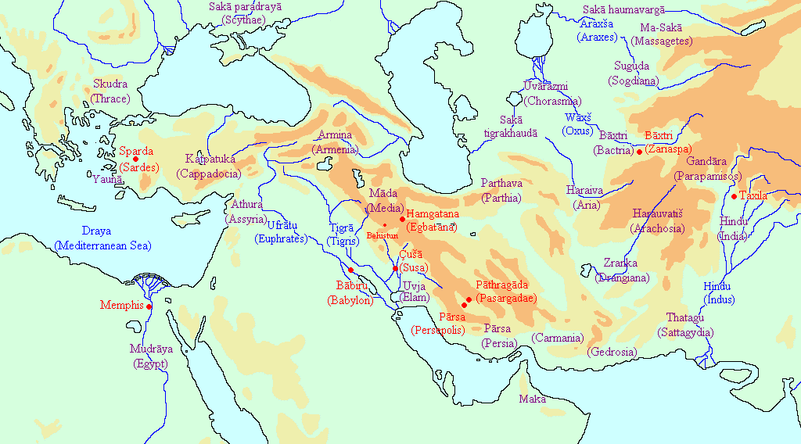

SECOND YEAR
new testament introduction |
A Study of the Context of the N.T. |
New Testament Introduction |
A Study of the Context of the N.T. |
|
SECTION ONE: New Testament Preparation
Ch. 1 – Introduction to Section One 3
Ch. 5 – Extra-Biblical Writings 142
SECTION TWO: New Testament Contextualization
Ch. 6 – Introduction to Section Two 146
Ch. 7 – Structure & Theme of the N.T. 147
Ch. 8 – Politics of the N.T. 162
Ch. 9 – Language of the N.T. 163
Ch. 10 – Cultures & Philosphies of the N.T. 164
New Testament Introduction is a
Introduction
I. An Overview
In this class you will learn…
• A brief review of the concluding events of the Old Testament
• A history of the period between the Testaments
• The significance of this history & contributions made
• A brief summary of the Roman civilization during the time of Christ
In this class you will learn…
• The portraits of Christ as revealed in the Gospels
• The offices of Christ
• Major points of the New Testament
IN the Bible or not in the Bible test
Explanation of dates. Inaccuracies.
The books of Ezra, Nehemiah and Esther tell us what happened in the last 100 years of Old Testament History. Ezra and Nehemiah (means “consolation of the lord”) tell of the return of the some of the Jewish captives to their own land. They tell us how the people rebuilt the temple and then the wall of Jerusalem. The book of Esther tells events that happened to Jews who remained in Persia during this period of time. Some of the prophets also tell events that happened at this time. Malachi was the last of the Old Testament prophets. (Malachi means “my messenger” or “messenger of Jehovah.”)
The first world power was Egypt which was followed .by Assyria. The Persian Empire came into power after Cyrus the Great conquered Babylon.
Daniel 2:21—And he changeth the times and the seasons: he removeth kings, and setteth up kings: he giveth wisdom unto the wise, and knowledge to them that know understanding:
Both the books of Isaiah and Daniel prophesy of Persia’s rise to power and Babylon’s fall. God ordered this transfer of power.
Isaiah 45:1—Thus saith the LORD to his anointed, to Cyrus, whose right hand I have holden, to subdue nations before him; and I will loose the loins of kings, to open before him the two leaved gates; and the gates shall not be shut;
Isaiah 46:1—Bel boweth down, Nebo stoopeth, their idols were upon the beasts, and upon the cattle: your carriages were heavy loaden; they are a burden to the weary beast.
In Daniel 5:25-31, the very finger of God wrote on Belshazzar’s wall:
And Darius the Median took the kingdom, being about threescore and two years old.
Ever before Babylon fell to Persia, God detailed his judgment set on Babylon and outlined the times to come. God prescribed the future transfers of power from Babylon to Persia, from Persia to Greece, and finally from Greece to Rome. Remember God is in control of HIS STORY. The rise and fall of the Empires was God ordained
Nebuchadnezzar’s dream found in Daniel chapter two prophetically unfolds this procession of Empires. (Daniel 2: 31-40) In his dream, he saw a great image. The image’s head was of fine gold, breast and arms of sliver, belly and thights of brass, his legs of iron and his feet part iron and part clay. After seeing this image, he saw a stone cut without hands which smote the image and destroyed it.
The Scripture reveals that this image represented kingdoms:
Daniel 2:38-40—And wheresoever the children of men dwell, the beasts of the field and the fowls of the heaven hath he given into thine hand, and hath made thee ruler over them all. Thou art this head of gold. 39 And after thee shall arise another kingdom inferior to thee, and another third kingdom of brass, which shall bear rule over all the earth. 40 And the fourth kingdom shall be strong as iron: forasmuch as iron breaketh in pieces and subdueth all things: and as iron that breaketh all these, shall it break in pieces and bruise.
“Thou art this head of gold” Babylonian Empire, 606-539 BC
“another kingdom inferior to thee”Medo-Persian Empire, 539-333 BC
“third kingdom of brass”Grecian Empire, 333-44 BC
“And the fourth kingdom shall be strong as iron” Roman Empire, 44 BC – 476 AD
At the end of the Old Testament, the Persian Empire was in power and remained so until 333 BC. Then, by the conquests of Alexander the Great, the Grecian Empire arose, and dominated from 333 BC until 167 BC After the death of Alexander in 323 BC, his Empire was divided between four of his generals. Two of these were Ptolemy and Seleucus. Each of these inaugurated a dynasty; the former (Ptolemy) in Egypt, and the latter (Seleucus) in Syria. They contended with each other for the mastery of Palestine until 167 BC; sometimes the one dominated, and sometimes the other dominated.
Then came the struggle for Jewish national independence under the Maccabees. This period covered 167-141 BC. This was followed by the rule in Palestine of a family of Jewish Priest-Kings, descendants of the Maccabees, known as the Asmonaeans (a name derived from a Hebrew word meaning “wealthy”). They remained in power for seventy-eight years from 141 - 63 BC
There is a 400-year period between the Old and New Testaments referred to as “The Silent Years.” During this period, there is a gap in Biblical record. Although including some insightful history, the Apocrypha is not God’s Word. Therefore, even though portions of the Apocrypha contain some history of the period between the testaments, we have to say there is no record of divine revelation during the “Silent Years.”
We can understand the New Testament better if we know some of the things that happened during the 400 years before the N.T. begins.
The 400 years between the Testaments are often called “the years of silence” but they were far from silent! A lot of changes were going on.
It is absolutely necessary to realize that things are not taken up by the New Testament from where the Old Testament laid them down. When we turn from Malachi 4 to Matthew 1, we must understand that about four hundred years have come between, and that in this period great changes have taken place. An attentive reading of the New Testament will lead us to ask many questions which, for the most part, can be answered only by the Inter-Testament period.
During these 400 years, God was setting events in order for the birth and ministry of Christ.
B.C. 753 -Rome Founded
539 -Cyrus the Great conquers Babylon/ Persian Empire “begins”
400 -End of Old Testament
336 -Philip of Macedon dies/Alexander assumes power at 20 yrs. of age
333 -Beginning of Hellenistic Period/Alexander conquers Tyre
331 -Beginning of Greek Empire/Alexander founds Alexandria
330 -End of Persian Empire
323 -Alexander dies at only 33 yrs. of age/Egyptian and Syrian Rule of Greek Empire begins/ (Acts 19:35)
320 -Judea was annexed to Egypt
300 -Apocrypha being written/Nabateans rule until 100 A.D.
280 -Septuagint being written in Alexandria
193 -Judea was annexed to Syria
170 -Septuagint finished in Alexandria
168 -Antiochus Epiphanes pollutes the temple
167 -Beginning of the Maccabean Revolt
166 -End of Greek Empire/Jewish Independence “Asmonean Dynasty”
165 -December, Judas Maccabeaus rededicated the temple
130 -Babylon brought to ruin by Parthians
63 - End of Jewish Independence “Asmonean Dynasty”/Roman General Pompey takes Jerusalem/Roman Empire “begins”-Augustus Caesar is the first Roman Emperor until 14 A.D./ End of Hellenistic Period
46 -Corinth rebuilt by Julius Caeser
37 -Judea ruled by a king, Herod the Great, appointed by the Roman Senate
31 -Battle at Actium, Augustus Caesar overthrew Mark Antony/In Spring, Earthquake in Qumran, Judea
30 -Cleopatra VII Philopator died ( the last ruler of the Ptolemaic Dynasty)
27 -Augustus Caesar is Roman Emperor until 14 A.D.
20 -Herod the Great built a white marble temple and dedicated it to Augustus Caesar in Paneaus later named by Herod Philip “Caesarea Philippi”.
17 -Sardis destroyed by earthquake (rebuilt in 1st century A.D.)
10 -After 12 years of building, Herod dedicates Ceaserea to Ceasar Augustus (capital of Judea)
4 -Apocrypha finished/Herod the Great dies
B.C. 2 -Birth of Paul
Palestine—A Land Bridge
If you look at the map, you’ll see that Palestine is like a bridge of land that connects three continents: Europe, Asia, and Africa. Because of the important location of this little piece of land, every world empire that came to power wanted to control it. And so Palestine was conquered first by one and then another and then another world power.
The city of Babylon was a city-state of ancient Mesopotamia, the remains of which are found in present-day Al Hillah, Babil Province, Iraq, about 55 miles (85 kilometers) south of Baghdad.Sometime after the flood, Nimrod founded Babylon according to Genesis 10:9-10. Babylon became the seat of the Neo-Babylonian Empire.
QUICK FACTS:
Babylon may have been the first city ever to reach a population of 200,000. The Hanging Gardens of Babylon were one of the Seven Wonders of the Ancient World. Babylonian king Hammurabi is known for codifying the laws of Babylonia into the Code of Hammurabi that has had a lasting influence on legal thought.1800 BC: the Babylonians employ a duodecimal system (a system based on 12 and 6) to measure time. 1700 BC: Babylonians invent the first windmills for the purpose of irrigation; the "Enuma Elish" (creation story of the Babylonians) originates; the Hebrews return from Egypt and establish a kingdom in Palestine; 823 BC: Shalmeneser III's son, Shamshi-Adad V of Assyria, conquers Babylon and extends the empire from the Gulf to the Mediterranean. 689 BC: Assyrian king Sennacherib raids Babylon to quell an insurrection. 681 BC: Assyrian king Sennacherib dies and is succeeded by his son Esarhaddon, who rebuilds Babylon 649 BC: king Ashurbanipal of Assyria raids Babylon to quell another insurrection.
Through its centuries of Assyrian domination, Babylon enjoyed a prominent status, or revolted at the slightest indication that it did not. The Assyrians always managed to restore Babylonian loyalty, however, whether through granting of increased privileges, or militarily. That finally changed in 627 BC with the death of the last strong Assyrian ruler, Assurbanipal, and Babylonia rebelled under Nabopolassar the Chaldean the following year. With help from the Medes, Nineveh was sacked in 612 BC, and the seat of the empire was again transferred to Babylonia.
Nabopolassar was followed by his son Nebuchadnezzar II, whose reign of 43 years made Babylon once more the world power. In 587, Nebuchadnezzar II conquered Judea and destroyed Jerusalem and deports thousands of Jews. This the second deporatation of the Jews wit the first caused by the of the Assyrian Empire. 580 BC: Nebuchadnezzar II builds eight monumental gates, the Esagila complex, the seven-storey ziggurat, and the Hanging Gardens. 562, Nebuchadnezzar II dies
Amel-Marduk followed Nebuchadnezzar 562 – 560 BC . Who was followed by Nergal-shar-usur 560 – 556 BC . Followed by Labashi-Marduk 556 BC.
Of the reign of the last Babylonian king, Nabonidus (556-539) and the conquest of Babylonia by Cyrus, there is a fair amount of information available. This is chiefly derived from a chronological tablet containing the annals of Nabonidus, supplemented by another inscription of Nabonidus where he recounts his restoration of the temple of the Moon-god at Harran, and also correlating information from the book of Daniel; as well as by a proclamation of Cyrus issued shortly after his formal recognition as king of Babylonia.
Belshazzar was the son of Nabonidus. He made Belshazzar co-regent in 553 B.C., leaving him in charge of Babylon's defense, while he journeyed away to Tema. The Nabonidus Cylinder from Sippar is a long text in which king Nabonidus of Babylonia describes among other things the existence of a son named Belshezzar, who is mentioned in the Book of Daniel.The cylinder states:
"As for me, Nabonidus, king of Babylon, save me from sinning against your great godhead and grant me as a present a life long of days, and as for Belshazzar, the eldest son -my offspring- instill reverence for your great godhead in his heart and may he not commit any cultic mistake, may he be sated with a life of plenitude.”
In 538 B.C. Belshazzar was positioned in the city of Babylon to hold the capital, while, after returning from Sema, Nabonidus marched his troops north to meet Cyrus.
In 539 BC Cyrus invaded Babylonia. Nabonidus fled to Babylon, where he was pursued by Gobryas, and on the 16th day of Tammuz, two days after the capture of Sippara, "the soldiers of Cyrus entered Babylon without fighting." Nabonidus was dragged from his hiding-place, where the services continued without interruption.
The invasion of Babylonia by Cyrus was doubtless facilitated by the existence of a disaffected party in the state, as well as by the presence of foreign forced exiles like the Jews, who had been planted in the midst of the country.
Study Questions One
Introduction & Chapter 1: Introduction to Section One
Ezra, Nehemiah, & Esther
Nehemiah means “consolation of the Lord.”
Daniel 2:21; Job 12:18; Ps 75:6-7; Jer 27:5; etc.
MENE—God hath numbered your kingdom, and finished it.
TEKEL—Thou art weighed in the balances, and art found wanting.
PERES—Thy kingdom is divided, and given to the Medes and Persians.
Assyria, Babylon, Persia, Greece, Rome
Kingdoms of the world.
Babylon _b__ a. Chest and Arms of Silver
Greece _c__ b. Head of Gold
Assyria _e__ c. Belly and Thighs of Bronze
Rome _d__ d. Legs of Iron and Feet of Clay
Persia _a__ e. Not mentioned
Th Asmonean Dynasty
During this period, there is a gap of Biblical record or Divine revelation.
During this time, Go was setting events in order for the birth and ministry of Christ.
Because of its important location as a land bridge.
Nimrod founded Babylon according to Genesis 10:9-10.
The death of the last strong Assyrian ruller, Assurbanipal.
Belshazzar was the son of Nabonidus. He made Belshazzar co-regent in 553 B.C., leaving him in charge of Babylon's defense, while he journeyed away to Tema.
ASSIGNMENT #1: Make 7 additions of your own to the “Intertestamental Timeline, p.6.
Quiz One
Introduction & Chapter 1: Introduction to Section One
Ezra, Nehemiah, & Esther
Daniel 2:21; Job 12:18; Ps 75:6-7; Jer 27:5; etc.
MENE—God hath numbered your kingdom, and finished it.
TEKEL—Thou art weighed in the balances, and art found wanting.
PERES—Thy kingdom is divided, and given to the Medes and Persians.
Assyria, Babylon, Persia, Greece, Rome
Kingdoms of the world.
Babylon _b__ a. Chest and Arms of Silver
Greece _c__ b. Head of Gold
Assyria _e__ c. Belly and Thighs of Bronze
Rome _d__ d. Legs of Iron and Feet of Clay
Persia _a__ e. Not mentioned
During this period, there is a gap of Biblical record or Divine revelation.
During this time, Go was setting events in order for the birth and ministry of Christ.
Because of its important location as a land bridge.
BONUS:
Justify the historical record that states “Nabonidus” was the last Babylonian king with Daniel’s account which says Belshazzar was the last king. (How can this be true? Daniel 5:30)
Belshazzar was the son of Nabonidus. He made Belshazzar co-regent in 553 B.C., leaving him in charge of Babylon's defense, while he journeyed away to Tema.
New Testament Introduction is a
II. PERSIAN PERIOD
A. The Persian Empire was in power at the conclusion of the O.T.
1. A continuation of the transfer of power described in
Daniel 5
a. Babylon was overthrown
b. Kingdom given to Medes and Persians
2. Fulfillment of Bible prophecy
B. Persian rule was mild to the Jew
C. Palestine ruled by Persia for 70 years
D. Defeated by Alexander the Great in 331 BC
It was in the sixth year of Nabonidus (549 BC) that Cyrus, the Achaemenid Persian "king of Anshan" in Elam, revolted against his suzerain Astyages, "king of the Manda" or Medes, at Ecbatana. Astyages' army betrayed him to his enemy, and Cyrus established himself at Ecbatana, thus putting an end to the empire of the Medes. Three years later Cyrus had become king of all Persia, and was engaged in a campaign in northern Mesopotamia. Meanwhile, Nabonidus had established a camp in the desert, near the southern frontier of his kingdom, leaving his son Belshazzar (Belsharutsur) in command of the army.
Cyrus did not arrive until the 3rd of Marchesvan (October), Gobryas having acted for him in his absence. Gobryas was now made governor of the province of Babylon, and a few days afterwards the son of Nabonidus died. A public mourning followed, lasting six days, and Cambyses accompanied the corpse to the tomb.
Cyrus now claimed to be the legitimate successor of the ancient Babylonian kings and the avenger of Bel-Marduk, who was assumed to be wrathful at the impiety of Nabonidus in removing the images of the local gods from their ancestral shrines to his capital Babylon. Nabonidus, in fact, had excited a strong feeling against himself by attempting to centralize the religion of Babylonia in the temple of Merodach (Marduk) at Babylon, and while he had thus alienated the local priesthoods, the military party despised him on account of his antiquarian tastes. He seemed to have left the defense of his kingdom to others, occupying himself with the more congenial work of excavating the foundation records of the temples and determining the dates of their builders.
One of the first acts of Cyrus accordingly was to allow these exiles to return to their own homes, carrying with them the images of their god and their sacred vessels. The permission to do so was embodied in a proclamation, whereby the conqueror endeavored to justify his claim to the Babylonian throne. The feeling was still strong that none had a right to rule over western Asia until he had been consecrated to the office by Bel and his priests; and accordingly, Cyrus henceforth assumed the imperial title of "King of Babylon."
539 BC: Cyrus of Persia sacks Babylon and frees the Jews
530 BC: Cambyses becomes king of Persia
525 BC: Cambyses of Persia conquers Egypt at the battle of Pelusium
522 BC: Cambyses dies and civil War erupts in Persia
521 BC: Darius becomes king of Persia and divides Persia into satrapies
521 BC: Darius of Persia expands the Persian empire beyond the Indus River
518 BC: Darius founds the new capital of Persia, Persepolis
514 BC: the Persian kind Darius invades Scythia
500 BC: Darius makes Aramaic the official language of the Persian empire
490 BC: Darius of Persia attacks mainland Greece
485 BC: Darius dies and Xerxes becomes king of Persia
480 BC: the Greeks expels the Persians from Europe
465 BC: Artaxerxes I Longimanus becomes king of Persia
425 BC: Phoenician explorer Himilco travels from Carthage to Brittany
424 BC: Xerxes II becomes king of Persia
404 BC: Artaxerxes II Mnemon becomes king of Persia
360 BC: king Atheas unites all Scythian tribes and expands their territory to the border with Macedonia
358 BC: Artaxerxes III Ochus becomes king of Persia
339 BC: Atheas of Scythia is killed in the war against Philip of Macedonia
336 BC: Darius Codomannus becomes king of Persia
PERSIA KINGS OF MEDIA Deioces728-675 Phraortes675-653 Cyaxares653-585 Astyages585-550 KINGS OF LYDIA Gyges685-644 Ardys644-615 Sadyattes615-610 Alyattes610-560 Croesus560-547 ACHAEMENID KINGS Achaemenes Teispes675-640 Cyrus I640-600 Cambyses I600-559 Cyrus II559-530 Cambyses II530-522 Darius I522-486 Xerxes I486-465 Artaxerxes I465-424 Xerxes II424-423 Darius II423-404 Artaxerxes II 404-359 Artaxerxes III359-338 Arses338-336 Darius III 336-330 SELEUCID KINGS Seleucus I 311 - 281 Antiochus I 281 - 261 Antiochus II 261 - 246 Seleucus II 246 - 226 Seleucus III 225 - 223 Antiochus III 223 - 187 Seleucus IV 187 - 175 Antiochus IV 175 - 164 Antiochus V 164 - 162 Demetrius I 161 - 150 Alexander I 152 - 145 Demetrius II 145 - 138 Antiochus VI 145 - 140 Diodotus 140 - 138 Antiochus VII 138 - 129 Demetrius II 129 - 125 Alexander II 129 - 123 Cleopatra Thea 126 - 125 Antiochus VII 125- 121 Antiochus VIII 121 - 96 Antiochus IX 114- 95 Seleucus VI 96 - 95 Antiochus X 95 - 92 Demetrius III 95 - 87 Antiochus XI 95-92 Philip I 95 - 83 Antiochus XII 87 - 84 Tigranes 83- 69 Antiochus XIII 69 - 64 Philip II 65 - 64 PARTHIAN KINGS Arsaces I250-248 Tiridates248-211 Artabanus I211-191 Priapatius191-176 Phraates I176-171 Mithridates I171-139 Phraates II139-129 Artabanus II128-124 Mithridates II124-88 Gotarzes I90-80 Orodes I80-77 Sinatruces77-70 Phraates III70-57 Orodes II57-39 Mithridates III57-55 Pacorus I54-38 Phraates IV37-3 BC Tiridates30-25 BC Phraates V3BC-3AD Orodes III4-7 Vonones I7-12 Artabanus III11-38 Vardanes I39-45 Gotarzes II43-50 Vologezes I50-76 Vologezes II77-78 Pacorus II78-86 Artabanus IV79-80 Vologezes II89-90 Oroses89-90 Pacorus II92-95 Oroses108-127 Vologezes III111-146 Pacorus II113-114 Mithridates IV130-147 Vologezes IV148-190 Vologezes V190-206 Vologezes VI207-221 Artabanus V213-227 Artavasdes226-227 SASSANID KINGS Ardashir I224-240 Shapur I240-272 Hormizd I272-273 Varahran I273-276 Varahran II276-293 Varahran III293 Nerseh293-302 Hormizd II302-309 Shapur II309-379 Ardashir II379-383 Shapur III383-388 Varahran IV388-399 Yazdagird I399-421 Varahran V421-439 Yazdagird II439-457 Hormizd III457-459 Peroz459-484 Valash484-488 Kavad I488-496 Zamasp496-498 Kavad I498-531 Khusro I531-579 Hormizd IV579-590 Khusro II591-628 Kavad II628 Ardashir III628-629 Boran629-630 Hormizd V630-632 Khusro III630-632 Yazdagird III632-651
Definition:
The Persian Empire included all of what is now Iran, and in fact Persia was the official name of Iran until 1935.
At its height about 500 BC, the founding dynasty of the empire, the Achaemenids, had conquered Asia as far as the Indus River, Greece, and North Africa including what is now Egypt and Libya.
The beginning of the Persian empire is set at different times by different scholars, but the real force behind the expansion was Cyrus II, aka Cyrus the Great, in the mid-sixth century BC.
Cyrus was part of the Achaemenid Empire, with Cyrus's capital first at Hamadan and then Pasargadae.
In 330 BC, Macedonian Greeks led by Alexander the Great overthrew the Achaemenids and established what was called the Seleucid Empire after Alexander's general.
The Seleucids were in turn followed by the Parthian and Sassanid dynasties.
The Sassinids were defeated by Arab caliphs in the mid-7th century AD, and by 651, the Persian empire was ended.
ERAS
2700 BC - 559 BC: Elamites (Susa)
900 BC - 550 BC: Medes
700 BC - 331 BC: Achaemenids
312 BC - 141 BC: Seleucids
141 BC - 224 AD: Parthians
224 AD - 650 AD: Sassanids
650 AD - 650 AD: Arabs
749 AD - 879 AD: Abbasids
879 AD - 1038: Buyids/Abbasids
1038 - 1194: Seljuks/Abbasids
1258 - 1335: Mongols
1365 - 1501: Timurids
1501 - 1722: Safavids
1794 - 1979: Qajar
1979 - : Islamic republic
Persian Empire

Language(s) Old Persian, Imperial Aramaic, Elamite, Akkadian
Religion Zoroastrianism
Government Monarchy
King
- 559 BCE–529 BC Cyrus II the Great
Darius I the Great
- 336 BCE–330 BC Darius III
Historical era Ancient history
- Established ca. 550 BC
- Construction starts at Persepolis 515 BC
- Conquest of Egypt by Cambyses II 525 BC
- Greco-Persian Wars 498–448 BC
- Conquered during Wars of Alexander the Great 330 BC
- Darius III is killed by Bessus 330 BC
Currency Daric and Siglos
Today part of Afghanistan
Armenia
Azerbaijan
Bulgaria
Cyprus
Egypt
Georgia
Greece
Iran
Iraq
Israel
Jordan
Kuwait
Lebanon
Libya
Macedonia
Pakistan
Template:Country data Palestinian Territories
Syria
Tajikistan
Turkey
Turkmenistan
Uzbekistan
KINGS OF PERSIA
Though, one of them was Teispes (I) son of Achaemenes & the other was Teispes (II) son of Cyrus & father of Ariaramnes. Secondly, Darius the Great says in the Behistun Inscription:
"King Darius says: Eight of my dynasty were kings before me; I am the ninth. Nine in succession we have been kings."[6]
CYRUS THE GREAT
DARIUS THE GREAT
Xerxes
Artaxerxes
Darius III
CYRUS CYLINDER
Material Baked clay
Size 22.5 centimetres (8.9 in) x 10 centimetres (3.9 in) (maximum) [1]
Writing Akkadian cuneiform script
Created About 539–530 BC
Period/culture Achaemenid Empire [1]
Discovered Babylon, Mesopotamia by Hormuzd Rassam in March 1879 [1]
Present location Room 55, British Museum, London
The Cyrus Cylinder is an ancient clay cylinder, now broken into several fragments, on which is written a declaration in Akkadian cuneiform script[2] in the name of the Achaemenid Persian king Cyrus the Great.[3] It dates from the 6th century BC, was discovered in the ruins of Babylon in 1879,[2] and is currently in the British Museum.
The UN promotes the Cyrus Cylinder as "an ancient declaration of human rights"[4]. The Cylinder was created following the Persian conquest of Babylon in 539 BC, when the Persian army under Cyrus invaded the Neo-Babylonian Empire and incorporated it into the Persian Empire. The text says that Cyrus entered the city in peace. The Babylonian king Nabonidus was defeated by the Persians and was deposed by Cyrus, who replaced him as ruler of Babylonia. The text on the Cylinder commemorates the Persian victory and praises Cyrus's kingly virtues, listing his genealogy as a king from a line of kings (maybe to mention the contrast with the low-born Nabonidus). The deposed king is denounced as an impious oppressor of the people of Babylonia. The victorious Cyrus is portrayed as having been chosen by the chief Babylonian god Marduk to restore peace and order to the Babylonians. The text says that Cyrus was welcomed by the people of Babylon as their new ruler and entered the city in peace. It appeals to Marduk to protect and to help Cyrus and his son Cambyses. It exalts Cyrus's efforts as a benefactor of the citizens of Babylonia who improved their lives, repatriated displaced peoples and restored temples and cult sanctuaries across Mesopotamia. It concludes with a description of the work of Cyrus in repairing the city wall of Babylon, in which he found a similar inscription by an earlier Babylonian king.[3]
The Assyro-British archaeologist Hormuzd Rassam discovered the Cylinder during an excavation carried out for the British Museum. It had been placed as a foundation deposit in the foundations of the Esagila, the city's main temple.[3] According to the British Museum, the Cylinder reflects a long tradition in Mesopotamia where, from as early as the third millennium BC, kings began their reigns with declarations of reforms.[5] Cyrus's declaration shows how he sought to obtain the loyalty of his new Babylonian subjects by stressing his legitimacy as king, and showing his respect for the religious and political traditions of Babylonia. It has widely been regarded as an instrument of ancient Mesopotamian propaganda,[6][7] most likely created by the Babylonian priests of Marduk working at the behest of Cyrus.[8]
The tradition of royal propaganda represented by the Cylinder was revived in the late 1960s when the last Shah of Iran called it "the world's first charter of human rights".[9] That interpretation has been disputed by many historians and has been characterised as anachronistic and tendentious,[10] reflecting a misunderstanding[11] of the Cylinder's status as a generic foundation deposit.[12] Nonetheless it became a key symbol of the Shah's political ideology[13] and has since come to be regarded as part of Iran's cultural identity.[6] The Cylinder has also been linked to the repatriation of the Jews following their Babylonian captivity,[5] a deed which the Book of Ezra attributes to Cyrus.[14] A passage referring to the restoration of cult sanctuaries and repatriation of deported peoples has been widely interpreted as evidence of a general policy under which the Jews were allowed to return home,[15] although it identifies only Mesopotamian sanctuaries, and makes no mention of Jews, Jerusalem or Judea (which other historians say it should, to qualify as such evidence).[16]
Zoroastrianism
From Wikipedia, the free encyclopediaJump to: navigation, search
This article contains weasel words, vague phrasing that often accompanies biased or unverifiable information. Such statements should be clarified or removed. (January 2010)
Zoroastrianism
Zoroastrianism is a religion and philosophy based on the teachings of prophet Zoroaster (also known as Zarathustra, in Avestan). It was probably founded some time before the 6th century B.C. in Persia (Iran). The term Zoroastrianism is, in general usage, essentially synonymous with Mazdaism (the worship of Ahura Mazda, exalted by Zoroaster as the supreme divine authority).
In Zoroastrianism, the Creator Ahura Mazda is all good, and no evil originates from Him. Thus, in Zoroastrianism good and evil have distinct sources, with evil (druj) trying to destroy the creation of Mazda (asha), and good trying to sustain it. Mazda is not immanent in the world, and His creation is represented by the Amesha Spentas and the host of other Yazatas, through whom the works of God are evident to humanity, and through whom worship of Mazda is ultimately directed. The most important texts of the religion are those of the Avesta, of which a significant portion has been lost, and mostly only the liturgies of which have survived. The lost portions are known of only through references and brief quotations in the later works, primarily from the 9th to 11th centuries.
WOMEN IN OLD PERSIA
Over 3000 yrs ago in Persian heritage Men & Women were not different and they were equal.
Princesses, and Queens were seen as role models and every women in Persia were always side by side men, equally without any discrimination,
They were working together in persia for peace, freedom and glory.
Many warrior ladies being captain of armies held the highest position in militaries, side by side with men, in the toughest wars, they fought with enemies.
Study Questions Two
Chapter 2: Persian Empire
Quiz Two
Chapter 2: Persian Empire
New Testament Introduction is a
III. THE GRECIAN PERIOD
A. Philip of Macedon
1. Father of Alexander the Great
2. Unified Greek city states
3. Died in 336 BC
B. Alexander the Great
1. Took command at 20 years of age – 336 BC
2. Conquered the known world – 331 BC
Kjj
Kjj
b. Prophesied of in Daniel 2:39 (Approx. 600 BC)
“And after thee shall arise another kingdom inferior to thee, and another third kingdom of brass, which shall bear rule over all the earth.”
1) A precise prophetic word
2) The Greek language spread to the known
world
3. Showed kindness to the Jew
a. Spared Jerusalem
1) God protected the city
2) The future ministry of Jesus
b. Granted special privileges
4. Developed many new cities
5. Died in Babylon at the age of 33 – 323 BC
a. Babylon was intended to be his capital
b. Nothing left to conquer
C. The Results of Alexander’s Reign
1. Greece became an extraordinary power
2. Greek culture flourished
a. Called Hellinism
b. Throughout the known world
III. THE GRECIAN EMPIRE DIVIDED
Four generals took over after Alexander’s death. We will study the two that affected the Jews. Daniel saw in vision this four-way division of this empire. – Dan. 11:3-4
A. Ptolemy
1. Centered in Egypt
(Alexandria its capital)
2. Dominated Palestine for 120 years
3. The Jews fared well during this period
4. Succession of rulers
a. Referred to as the Ptolemies
b. Under Ptolemy Philadelphus
1. Seventy-two Jewish scholars translated the
Hebrew O.T. into Greek
2. This is called The Septuagint
c. Cleopatra who died in 30 BC was the last of
Ptolomaic dynasty
B. Seleucus
1. Centered in Syria
(Antioch its capital)
2. Palestine is considered a land bridge
a. Connects three continents
1) Europe
2) Asia
3) Africa
b. Palestine’s central location makes it an important
location to control
c. Located between Egypt and Syria
1) Palestine became a victim of rivalry
2) Between the Ptolomies and the Seleucids
3. Succession of rulers
a. Referred to as the Seleucids
b. Antiochus III (Antiochus the Great)
1) An anti-christ
2) Hated the Jew
3) Replaced the High priest
a) Became a political position
b) Sold to the highest bidder
c. Launched an invasion of Egypt
1) Rome intervened
2) Antiochus withdrew
IV. REVOLT OF THE MACCABEES
A. Syrian rule was harsh to the Jew
1. Religious persecution
2. Anti- Christ spirit
B. The Jews revolted against the Syrians
1. Led by Mattathias
a. An aged priest
b. Withstood a Syrian official
c. Fled to the hills with his five sons
d. Organized successful warfare
2. Judas the Hammer
a. Son of Mattathias
b. Became the leader when his father died
1) Guerilla style warfare
2) Retook Jerusalem
a) Repaired the temple
b) Restored the sacrifice
c. Received the surname of Maccabaeus
1) From “maqqaba” – a hammer
2) Probably due to his fierce fighting style
C. The Jews were eventually granted their independence
1. Gained religious freedom
2. Jewish sects formed
a. Pharisees
b. Sadducees
3. Preparing the New Testament setting
a. Religious corruption
b. Political systems put in place
D. Defeated by the Romans in 63 BC
Greece
The history of Greece can be traced back to Stone Age hunters. Later came early farmers and thecivilizations of the Minoan and Mycenaean kings. This was followed by a period of wars and invasions, known as the Dark Ages. In about 1100 BC, a people called the Dorians invaded from the north and spread down the west coast. In the period from 500-336 BC Greece was divided into small city states, each of which consisted of a city and its surrounding countryside.
There were only a few historians in the time of Ancient Greece. Three major ancient historians, were able to record their time of Ancient Greek history, that include Herodotus, known as the 'Father of History' who travelled to many ancient historic sites at the time, Thucydides and Xenophon.
Most other forms of History knowledge and accountability of the ancient Greeks we know is because of temples, sculpture, pottery, artefacts and other archaeological findings.
NEOLITHIC PERIOD (6000 - 2900 BC)
According to historians and archeological findings, the Neolithic Age in Greece lasted from 6800 to 3200 BC. The most domesticated settlements were in Near East of Greece. They traveled mainly due to overpopulation. These people introduced pottery and animal husbandry in Greece. They may as well have traveled via the route of Black sea into Thrace, which then further leads to Macedonia, Thessaly, Boeotia etc. The second way of traveling into Greece is from one island to another and such type of colonies has been found in Knossos and Kythnos... more »
EARLY BRONZE AGE (2900 - 2000BC)
The Greek Bronze Age or the Early Helladic Era started around 2800 BC and lasted till 1050 BC in Crete while in the Aegean islands it started in 3000 BC. The Bronze Age in Greece is divided into periods such as Helladic I, II. The information that is available today on the Bronze Age in Greece is from the architecture, burial styles and lifestyle. The colonies were made of 300 to 1000 people... more »
Minoan Age(2000 - 1400 BC )
Bronze Age civilization, centring on the island of Crete. It was named after the legendary king Minos. It is divided into three periods: the early Minoan period (c.3000-2200 B.C.), the Middle Minoan period (c.2200-1500 B.C.) and the Late Minoan period (c.1500-1000 B.C.).
* Middle Minoan Crete
* The Minoans
* The History of The Minoans
Mycenaean Age (600 - 1100 BC)
Period of high cultural achievement, forming the backdrop and basis for subsequent myths of the heroes. It was named for the kingdom of Mycenae and the archaeological site where fabulous works in gold were unearthed. The Mycenaean Age was cut short by widespread destruction ushering in the Greek Dark Age.... more »
The Dark Ages (1100 - 750 BC)
- The period between the fall of the Mycenean civilizations and the readoption of writing in the eigth or seventh century BC. After the Trojan Wars the Mycenaeans went through a period of civil war, the country was weak and a tribe called the Dorians took over. Some speculate that Dorian invaders from the north with iron weapons laid waste the Mycenaean culture. Others look to internal dissent, uprising and rebellion, or perhaps some combination.
* The Greek Dark Ages
A chapter on the history and culture of the Greek Dark Ages.
* The Dorians
one of the three main groups of people of ancient Greece, the others being the Aeolians and the Ionians, who invaded from the north in the 12th and 11th centuries BC.
Archaic Period (750 - 500 BC)
The Archaic Period in Greece refers to the years between 750 and 480 B.C., more particularly from 620 to 480 B.C. The age is defined through the development of art at this time, specifically through the style of pottery and sculpture, showing the specific characteristics that would later be developed into the more naturalistic style of the Classical period. The Archaic is one of five periods that Ancient Greek history can be divided into; it was preceded by the Dark Ages and followed by the Classical period. The Archaic period saw advancements in political theory, especially the beginnings of democracy, as well as in culture and art. The knowledge and use of written language which was lost in the Dark Ages was re-established.
Classical Period (500-336 BC) - Classical period of ancient Greek history, is fixed between about 500 B. C., when the Greeks began to come into conflict with the kingdom of Persia to the east, and the death of the Macedonian king and conqueror Alexander the Great in 323 B.C. In this period Athens reached its greatest political and cultural heights: the full development of the democratic system of government under the Athenian statesman Pericles; the building of the Parthenon on the Acropolis; the creation of the tragedies of Sophocles, Aeschylus and Euripides; and the founding of the philosophical schools of Socrates and Plato.
* Archaic and Classical Greek History
Hellenistic Period (336-146 BC) - period between the conquest of the Persian Empire by Alexander the Great and the establishment of Roman supremacy, in which Greek culture and learning were pre-eminent in the Mediterranean and Asia Minor. It is called Hellenistic (Greek, Hellas, "Greece") to distinguish it from the Hellenic culture of classical Greece.
* Hellenistic Greece
* Hellenic and Hellenistic Societies
Chronology sites:
* Greek Chronology Greece 1200 - 300 B.C
* Chronology: Greece
Herodotus
Herodotus
Born c. 484 BC
Halicarnassus, Caria, Asia Minor
Died c. 425 BC (aged around 59)
Thurii, Calabria or Pella, Macedon
Occupation Historian
Herodotus (Greek: Ἡρόδοτος Hēródotos) was an ancient Greek historian who lived in the 5th century BC (c. 484 BC – c. 425 BC). He was born in Caria, Halicarnassus (modern day Bodrum, Turkey). He is regarded as the "Father of History" in Western culture. He was the first historian known to collect his materials systematically, test their accuracy to a certain extent and arrange them in a well-constructed and vivid narrative.[1] He is exclusively known for writing The Histories, a record of his "inquiry" (or ἱστορία historía, a word that passed into Latin and took on its modern meaning of history) into the origins of the Greco-Persian Wars which occurred in 490 and 480-479 BC—especially since he includes a narrative account of that period, which would otherwise be poorly documented;
General history sites:
* The History of Ancient Greece
* History of Macedonia
* The unknown Ancient Hellenic History
* Internet Ancient History Sourcebook Greece and Hellenism
3300-1000 BCE: Greece - The earliest known prehistoric civilizations occupy the Aegean world. This period marks the rise and fall of the MINOAN and MYCENAEAN civilization.
2200 BCE: Greece - Indo-European invaders, speaking the earliest forms of Greek, enter the mainland of Greece, and the MYCENAEAN CIVILIZATION (named after the leading Greek city on the peninsula from 1600-1200 BCE) emerges.
2000-1500 BCE: Greece - MINOAN CIVILIZATION (named after the Cretan ruler Minos) reaches its height with its central power in Knossos on the island of Crete. This culture is apparently more female-oriented and peaceful than others at the time.
1400 BCE: Greece - MYCENAEAN CIVILIZATION replaces MINOAN CIVILIZATION after the destruction of Knossos. Bronze weapons, war-scenes on art, Cyclopean defence walls, and the fact that male warriors were buried with their weapons provide evidence for the claim that the Mycenaeans were militaristic. The horse-drawn chariot emerges around this time. The Mycenaeans dominate the Aegean world for about 200 years.
1250 BCE: Greece - Though this is disputed, some scholars believe that the MYCENAEANS wage war with the Trojans of western Asia Minor and are successful. By 1100 BCE they are overtaken by barbaric Dorian invaders who are using iron weapons. From this point, Greek culture enters the so-called Dark Ages, characterized by the disappearance of writing and a decline in architecture and other aspects of material culture. The period lasts until about 800 BCE. The two Homeric epics, The Iliad and The Odyssey, are often used by scholars as evidence of the traditions and institutions in place during this time. However, such use is strongly contested.
800 BCE: Greece - Increase in trade and the establishment of governmental defense fortifications allows for the emergence of Greek city-states from tribal communities. These grow up around marketplaces and include ATHENS, Thebes and Megara on the Greek mainland. The Greek city-states are considered the most famous units of Greek political life to develop in this society.
800-500 BCE: Greece - This period, often referred to as the Archaic period, marks the developments of literature and the arts, politics, philosophy and science. The Peloponnesian city of Corinth, SPARTA and cities along the coast of the Aegean Sea flourish. For the most part, the Greek city-states are similar in their political evolution, with the exception of Sparta's elite dictatorship. Most begin their political histories as monarchies, evolve to oligarchies, are overthrown during the age of the tyrants (650-500 BCE) and eventually establish democracies in the sixth and fifth centuries. Of the Greek city-states, ATHENS and Sparta were the two most important.
700 BCE: Greece - HESIOD, Greece's second poet (after HOMER) and the first poet to name himself, is composing his poetry. His most important works are The Theogony and Works and Days.
640 BCE: Greece - Sparta's form of government, which is adapted from the Dorians, is heavily influenced by militarianism. The Messenian wars initiate Sparta's fear of change. They remain an isolated people, primarily by banning trade and discouraging travel outside of Spartan territory. Alcaeus, Greek lyric poet, is born in Mytilene on the island of Lesbos. His lyrics expound on contemporary politics, love, hymns to Apollo and Hermes, and include some drinking songs.
612 BCE: Greece - Sappho, Greek lyric poet of Lesbos, is born. The most famous female poet of the ancient world, Sappho is inscribed in the Palatine Anthology among the Muses, rather than among the great lyric poets, in the second century BCE. Her lyric poetry includes the exploration of female sexuality, female values in a male dominated society, and love.
594 BCE: Greece - Solon, the great elegiac poet, is appointed chief magistrate of ATHENS. His reforms include both political and economical adjustments which lead to dissatisfaction in the upper and lower classes.
585 BCE: Greece - In Miletus, the founding city of philosophy, Thales predicts a total eclipse of the sun. The founder of the Melesian school, Thales, teaches that all things are composed of moisture; he is the first to put forth a rational explanation of the cosmos. By the end of the sixth century, philosophers begin to question the metaphysical nature of the cosmos with inquiries into the nature of being, the meaning of truth, and the relationship between the divine and the physical world.
546 BCE: Greece - The first of the Athenian tyrants, Peisistratus, replaces Solon as ruler.
530 BCE: Greece - Pythagoras and his followers found the city of Croton and combine philosophy and literature with political activity as the foundation of their community. Pythagoras, mathematician and philosopher, is credited with the Pythagorean theorem and the Pythagorean table of opposites (the "dualism" that underlies Greek thought).
525 BCE: Greece - Greek drama grows out of the Dionysian festivals. The plays of AESCHYLUS are considered to be the beginning of this long history of tragic drama. His stories are drawn from conflicts between the individual and the cosmos.
518 BCE: Greece - Pindar, considered by some to be the greatest Greek lyric poet, is born in Cynoscephalae, Boeotia. Pindar's odes celebrate games held at the religious festivals of Greece. Athletic victory serves as the ground for his poetic fancy and his religious, moral, and aesthetic insights. He dies in 438 BCE.
515 BCE: Greece - Parmenides of Elea is born. He is the founder of the Eleatic school in the Phocaean colony in southern Italy. He is the first to focus attention on the central problem of Greek metaphysics: the nature of being. For Parmenides, the laws governing the universe are stable. Change is merely an illusion.
510 BCE: Greece - Hippias, the son of Peisistratus, succeeds his father and is overthrown by a group of nobles with the help of SPARTA.
508 BCE: Greece - Cleisthenes, the father of Athenian democracy, rules ATHENS. His reforms grant full rights to all free men of Athens.
500 BCE: Greece - The height of Greek sculpture begins with the work of Phidias. His masterpieces include the statue of Athena in the PARTHENON, the Parthenon reliefs and the statue of Zeus in the Temple of Olympian Zeus. The second most important sculptor, Myron, is renowned for his statue of the discus thrower.
490 BCE: Greece - Lasting until 479 BCE, the Greeks initiate war with Persia when Persia, at this time the strongest power in western Asia, establishes rule over Greek-speaking cities in Asia Minor. The PERSIAN WARS are commonly regarded as among the most significant in all of history. Darius the Great is defeated at the battle of Marathon in 490 BCE. The Greeks emerge victorious and put an end to the possibility of Persian despotism.
486 BCE: Greece - A contempoary of Darius the Persian, Heraclitus of Ephesus lives somewhere around this time. For Heraclitus, reality is flux which originated out of fire (as opposed to Parmenides' "stable" reality -- see 515 BCE). PLATO credits Heraclitus for saying, "One cannot step into the same river twice." Heraclitus was also known as "the obscure."
485 BCE: Greece - Accompanying the high point of democracy in ATHENS is a Greek intellectual revolution, with its beginnings in Sophism. The Sophists situate ethics and politics within philosophical discourse which, before, was limited to physics and metaphysics alone. The leading Sophist, Protagoras, states his famous doctrine: "Man is the measure of all things." For him, all truth, goodness, beauty, etc. are relative to man's necessities and inquiries. Emerging in opposition to the Sophists are Socrates, PLATO and ARISTOTLE, each of whom offers alternatives to the Sophists' relativism.
484 BCE: Greece - The father of history, Herodotus, is born. He is author of a nine-book History of the Persian War and a book dedicated to his travels through Egypt. He dies in 420.
478 BCE: Greece - ATHENS joins with other Greek city-states in the formation of the DELIAN LEAGUE. The League continues even after the end of the PERSIAN WARS and transforms into a naval empire with Athens as its leader.
469 BCE: Greece - SOPHOCLES is born. He is the second Greek dramatist, following AESCHYLUS, and is considered by some to be the greatest of the Greek dramatists. His works include Oedipus Rex and Antigone. He dies in 406 BCE. This year also marks the birth of Socrates, a philosopher of ethics who leaves no written philosophy. He is the major critic of popular belief in ATHENS and is the protagonist of Plato's dialogues. He is condemned to death in 399 BCE on the charges of corrupting the youth and introducing new gods into Greek thought.
461-429 BCE: Greece - During this "Age of Pericles," Athenian democracy reaches perfection, and the court systems are completed. A jury system is put in place with the jury serving as absolute authority in judicial matters.
448 BCE: Greece - ARISTOPHANES, considered by some to be the greatest Greek comedy writer, is born. He dies in 380 BCE. Greek comedy, like Greek tragedy, originates out of the Dionysian festivals.
431-404 BCE: Greece - During the PELOPONNESIAN WAR between ATHENS and SPARTA, the political supremacy of Athens is ended. Athenian trade is destroyed. Athenian democracy is overthrown, and Athens is forced to surrender to Sparta as a subject state. Sparta assumes dominance over the Greek world and replaces many Greek democracies with oligarchies. The two major causes of the war are Athens' growth in imperialism and the economic and cultural differences between Athens and Sparta. Between 404 and 338, Sparta is not able to persist in the rule of Greece. Power over Greece shifts from Sparta to Thebes and then to numerous other city-states, none able to maintain rule over such a large empire.
427 BCE: Greece - PLATO, Socrates' most distinguished student, is born. He is a prolific writer and is considered by some to be the most important of all philosophers. Among his most noted works are The Apology, The Symposium, The Phaedo, The Phaedrus, and The Republic. His written works are in dialogue form. He dies in 347 BCE.
406 BCE: Greece - EURIPIDES dies. Born in 480 BCE, he is the last of the tragic dramatists. His contribution to the history of Greek tragedy is his creation of a drama that deals with situations analogous to human life.
384 BCE: Greece - Plato's most distinguished student, ARISTOTLE, is born. He enters Plato's Academy at the age of seventeen. After spending several years as tutor to Alexander the Great, Aristotle returns to ATHENS and founds the Lyceum. Among his writings are treatises on logic, metaphysics, ethics, politics, rhetoric and several on natural sciences. He dies in 322 BCE.
350 BCE: Greece - HELLENISTIC GREECE witnesses the new philosophy of the Cynics. Their leader, Diogenes, puts forth the first argument against conventional life. The Cynics believe that people should live naturally and strive for self-sufficiency.
343 BCE: Greece - The greatest dramatist of HELLENISTIC GREECE, Menander, follows the comedic genre put forth by ARISTOPHANES (the subject of which is romantic love).
338 BCE: Greece - Philip of Macedon, Alexander the Great's father, conquers Greece and is succeeded by his son two years later. At age twenty-two, Alexander begins his campaign to acquire new territory in Asia. Within four years, Alexander conquers the entire Persian Empire (including Asia Minor, Egypt, Persia, Syria and Mesopotamia). Alexander continues his campaign farther east and eventually returns to Persia in 323 BCE, where he dies of fever in Babylon. Before his death, Alexander was the ruler of the largest empire the world had seen. HELLENISTIC GREECE, a combination of Greek and western Asian cultures, lasts from Alexander's time until the beginning of the Christian era.
323 BCE: Greece - Alexander leaves no successors, and the highest generals engage in many wars which result in the decisive battle of Ipsus in 301 BCE. The empire is divided into four major states under the separate rules of Seleucus, Lysimachus, Cassander and Ptolemy. Greek cities revolt against Macedonian rule but to no avail. The next four hundred years witness the growth of large cities and Hellenistic international trade.
300 BCE: Greece - Epicureanism and Stoicism both originate in ATHENS. Both Epicurus (342-270 BCE) and Zeno, the Stoic (not to be confused with Zeno of Elea), believe in an individualistic and materialistic philosophy. Neither believe in spiritual substances. The soul is thought to be material. The Epicureans believe that pleasure is the highest good, and only by abandoning the fear of the supernatural can one achieve tranquillity of mind. The Stoics believe that tranquillity of mind is only achieved by surrendering the self to the order of the cosmos.
310 BCE: Greece - Hellenistic astronomy is founded by Aristarchus of Samos. His major contribution to Hellenistic thought is his theory that the earth and all other planets revolve around the sun, contrary to ARISTOTLE.
200 BCE: Greece - Under the influence of Carneades, Skepticism arises with doctrines closely tied to Sophism. They teach that because all knowledge is achieved through sense perception, nothing can be known for sure.
146-30 BCE: Greece - Between these years, nearly all Hellenistic territory becomes subject to Roman rule.
Greece
The history of Greece can be traced back to Stone Age hunters. Later came early farmers and thecivilizations of the Minoan and Mycenaean kings. This was followed by a period of wars and invasions, known as the Dark Ages. In about 1100 BC, a people called the Dorians invaded from the north and spread down the west coast. In the period from 500-336 BC Greece was divided into small city states, each of which consisted of a city and its surrounding countryside.
There were only a few historians in the time of Ancient Greece. Three major ancient historians, were able to record their time of Ancient Greek history, that include Herodotus, known as the 'Father of History' who travelled to many ancient historic sites at the time, Thucydides and Xenophon.
Most other forms of History knowledge and accountability of the ancient Greeks we know is because of temples, sculpture, pottery, artefacts and other archaeological findings.
NEOLITHIC PERIOD (6000 - 2900 BC)
According to historians and archeological findings, the Neolithic Age in Greece lasted from 6800 to 3200 BC. The most domesticated settlements were in Near East of Greece. They traveled mainly due to overpopulation. These people introduced pottery and animal husbandry in Greece. They may as well have traveled via the route of Black sea into Thrace, which then further leads to Macedonia, Thessaly, Boeotia etc. The second way of traveling into Greece is from one island to another and such type of colonies has been found in Knossos and Kythnos... more »
EARLY BRONZE AGE (2900 - 2000BC)
The Greek Bronze Age or the Early Helladic Era started around 2800 BC and lasted till 1050 BC in Crete while in the Aegean islands it started in 3000 BC. The Bronze Age in Greece is divided into periods such as Helladic I, II. The information that is available today on the Bronze Age in Greece is from the architecture, burial styles and lifestyle. The colonies were made of 300 to 1000 people... more »
Minoan Age(2000 - 1400 BC )
Bronze Age civilization, centring on the island of Crete. It was named after the legendary king Minos. It is divided into three periods: the early Minoan period (c.3000-2200 B.C.), the Middle Minoan period (c.2200-1500 B.C.) and the Late Minoan period (c.1500-1000 B.C.).
* Middle Minoan Crete
* The Minoans
* The History of The Minoans
Mycenaean Age (600 - 1100 BC)
Period of high cultural achievement, forming the backdrop and basis for subsequent myths of the heroes. It was named for the kingdom of Mycenae and the archaeological site where fabulous works in gold were unearthed. The Mycenaean Age was cut short by widespread destruction ushering in the Greek Dark Age.... more »
The Dark Ages (1100 - 750 BC)
- The period between the fall of the Mycenean civilizations and the readoption of writing in the eigth or seventh century BC. After the Trojan Wars the Mycenaeans went through a period of civil war, the country was weak and a tribe called the Dorians took over. Some speculate that Dorian invaders from the north with iron weapons laid waste the Mycenaean culture. Others look to internal dissent, uprising and rebellion, or perhaps some combination.
* The Greek Dark Ages
A chapter on the history and culture of the Greek Dark Ages.
* The Dorians
one of the three main groups of people of ancient Greece, the others being the Aeolians and the Ionians, who invaded from the north in the 12th and 11th centuries BC.
Archaic Period (750 - 500 BC)
The Archaic Period in Greece refers to the years between 750 and 480 B.C., more particularly from 620 to 480 B.C. The age is defined through the development of art at this time, specifically through the style of pottery and sculpture, showing the specific characteristics that would later be developed into the more naturalistic style of the Classical period. The Archaic is one of five periods that Ancient Greek history can be divided into; it was preceded by the Dark Ages and followed by the Classical period. The Archaic period saw advancements in political theory, especially the beginnings of democracy, as well as in culture and art. The knowledge and use of written language which was lost in the Dark Ages was re-established.
Classical Period (500-336 BC) - Classical period of ancient Greek history, is fixed between about 500 B. C., when the Greeks began to come into conflict with the kingdom of Persia to the east, and the death of the Macedonian king and conqueror Alexander the Great in 323 B.C. In this period Athens reached its greatest political and cultural heights: the full development of the democratic system of government under the Athenian statesman Pericles; the building of the Parthenon on the Acropolis; the creation of the tragedies of Sophocles, Aeschylus and Euripides; and the founding of the philosophical schools of Socrates and Plato.
* Archaic and Classical Greek History
Hellenistic Period (336-146 BC) - period between the conquest of the Persian Empire by Alexander the Great and the establishment of Roman supremacy, in which Greek culture and learning were pre-eminent in the Mediterranean and Asia Minor. It is called Hellenistic (Greek, Hellas, "Greece") to distinguish it from the Hellenic culture of classical Greece.
* Hellenistic Greece
* Hellenic and Hellenistic Societies
Chronology sites:
* Greek Chronology Greece 1200 - 300 B.C
* Chronology: Greece
C. Greece became an extraordinary power
1. Greek culture flourished (Language spread)
a. Called Hellenism
b. Throughout the known world
c. Knowledge of the Greek still prevalent today
2. Controlled the known world
(By N.T. times Greek was the street language even in Rome)
III. THE GRECIAN EMPIRE DIVIDED
Four generals took over after Alexander’s death. We will study the two that affected the Jews. Daniel saw in vision this four-way division of this empire. Dan. 11:3-4
A. Ptolemy (Plotlemies) – succession of rulers
1. Centered in Egypt. – Alexandria its capital
2. Dominated Palestine for 120 years
3. The Jews fared well during this period
4. Cleopatra who died in 30 B.C. was the last of the Ptolomaic dynasty
[Under Ptolemy Philadelphus 72 Jewish scholars translated the Hebrew O.T.
into Greek – the Septuagint]
B. Seleucid
1. Centered in Syria – Antioch its capital
(Located between Egypt and Syria, Palestine became a victim of rivalry
between the Ptolomies and the Seleucids)
2. Antiochus III (Antiochus the Great)
a. An anti-christ
b. Hated the Jew
c. Replaced the high priest
[Replaced Onias III with Onias’ brother Jason – A Hellenizer who wanted
to turn Jerusalem into a Greek city state]
d. A gymnasium was built in Jerusalem (Under Jason)
1) Jewish young men exercised nude in Greek fashion
2) Track races opened with invocations to pagan gods
3) Many Jewish priests attended these events
e. Replaced Jason with Menelaus, another Hellenizer who offered Antiochus
higher tribute for the office.
Jews who opposed the paganization their culture were called
Hasidim or Hasideans – “pious people.”. These pious Jews resented the
selling of this sacred office to the highest bidder.
f. Launched an invasion of Egypt
1. Rome intervened
Outside Alexandria (the capital of the Ptolemies) a Roman envoy
drew a circle around Antiochus and demanded that before he step out of the circle he promise to leave Egypt with his troops. Antiochus, who had been a hostage for twelve years in Rome, withdrew his men not wanting to face the wrath of the powerful Romans.
Herodotus
Herodotus | |
Born | c. 484 BC |
Died | c. 425 BC (aged around 59) |
Occupation | Historian |
Herodotus (Greek: Ἡρόδοτος Hēródotos) was an ancient Greek historian who lived in the 5th century BC (c. 484 BC – c. 425 BC). He was born in Caria, Halicarnassus (modern day Bodrum, Turkey). He is regarded as the "Father of History" in Western culture. He was the first historian known to collect his materials systematically, test their accuracy to a certain extent and arrange them in a well-constructed and vivid narrative.[1] He is exclusively known for writing The Histories, a record of his "inquiry" (or ἱστορία historía, a word that passed into Latin and took on its modern meaning of history) into the origins of the Greco-Persian Wars which occurred in 490 and 480-479 BC—especially since he includes a narrative account of that period, which would otherwise be poorly documented;
General history sites:
* The History of Ancient Greece
* History of Macedonia
* The unknown Ancient Hellenic History
* Internet Ancient History Sourcebook Greece and Hellenism
3300-1000 BCE: Greece - The earliest known prehistoric civilizations occupy the Aegean world. This period marks the rise and fall of the MINOAN and MYCENAEAN civilization.
2200 BCE: Greece - Indo-European invaders, speaking the earliest forms of Greek, enter the mainland of Greece, and the MYCENAEAN CIVILIZATION (named after the leading Greek city on the peninsula from 1600-1200 BCE) emerges.
2000-1500 BCE: Greece - MINOAN CIVILIZATION (named after the Cretan ruler Minos) reaches its height with its central power in Knossos on the island of Crete. This culture is apparently more female-oriented and peaceful than others at the time.
1400 BCE: Greece - MYCENAEAN CIVILIZATION replaces MINOAN CIVILIZATION after the destruction of Knossos. Bronze weapons, war-scenes on art, Cyclopean defence walls, and the fact that male warriors were buried with their weapons provide evidence for the claim that the Mycenaeans were militaristic. The horse-drawn chariot emerges around this time. The Mycenaeans dominate the Aegean world for about 200 years.
1250 BCE: Greece - Though this is disputed, some scholars believe that the MYCENAEANS wage war with the Trojans of western Asia Minor and are successful. By 1100 BCE they are overtaken by barbaric Dorian invaders who are using iron weapons. From this point, Greek culture enters the so-called Dark Ages, characterized by the disappearance of writing and a decline in architecture and other aspects of material culture. The period lasts until about 800 BCE. The two Homeric epics, The Iliad and The Odyssey, are often used by scholars as evidence of the traditions and institutions in place during this time. However, such use is strongly contested.
800 BCE: Greece - Increase in trade and the establishment of governmental defense fortifications allows for the emergence of Greek city-states from tribal communities. These grow up around marketplaces and include ATHENS, Thebes and Megara on the Greek mainland. The Greek city-states are considered the most famous units of Greek political life to develop in this society.
800-500 BCE: Greece - This period, often referred to as the Archaic period, marks the developments of literature and the arts, politics, philosophy and science. The Peloponnesian city of Corinth, SPARTA and cities along the coast of the Aegean Sea flourish. For the most part, the Greek city-states are similar in their political evolution, with the exception of Sparta's elite dictatorship. Most begin their political histories as monarchies, evolve to oligarchies, are overthrown during the age of the tyrants (650-500 BCE) and eventually establish democracies in the sixth and fifth centuries. Of the Greek city-states, ATHENS and Sparta were the two most important.
700 BCE: Greece - HESIOD, Greece's second poet (after HOMER) and the first poet to name himself, is composing his poetry. His most important works are The Theogony and Works and Days.
640 BCE: Greece - Sparta's form of government, which is adapted from the Dorians, is heavily influenced by militarianism. The Messenian wars initiate Sparta's fear of change. They remain an isolated people, primarily by banning trade and discouraging travel outside of Spartan territory. Alcaeus, Greek lyric poet, is born in Mytilene on the island of Lesbos. His lyrics expound on contemporary politics, love, hymns to Apollo and Hermes, and include some drinking songs.
612 BCE: Greece - Sappho, Greek lyric poet of Lesbos, is born. The most famous female poet of the ancient world, Sappho is inscribed in the Palatine Anthology among the Muses, rather than among the great lyric poets, in the second century BCE. Her lyric poetry includes the exploration of female sexuality, female values in a male dominated society, and love.
594 BCE: Greece - Solon, the great elegiac poet, is appointed chief magistrate of ATHENS. His reforms include both political and economical adjustments which lead to dissatisfaction in the upper and lower classes.
585 BCE: Greece - In Miletus, the founding city of philosophy, Thales predicts a total eclipse of the sun. The founder of the Melesian school, Thales, teaches that all things are composed of moisture; he is the first to put forth a rational explanation of the cosmos. By the end of the sixth century, philosophers begin to question the metaphysical nature of the cosmos with inquiries into the nature of being, the meaning of truth, and the relationship between the divine and the physical world.
546 BCE: Greece - The first of the Athenian tyrants, Peisistratus, replaces Solon as ruler.
530 BCE: Greece - Pythagoras and his followers found the city of Croton and combine philosophy and literature with political activity as the foundation of their community. Pythagoras, mathematician and philosopher, is credited with the Pythagorean theorem and the Pythagorean table of opposites (the "dualism" that underlies Greek thought).
525 BCE: Greece - Greek drama grows out of the Dionysian festivals. The plays of AESCHYLUS are considered to be the beginning of this long history of tragic drama. His stories are drawn from conflicts between the individual and the cosmos.
518 BCE: Greece - Pindar, considered by some to be the greatest Greek lyric poet, is born in Cynoscephalae, Boeotia. Pindar's odes celebrate games held at the religious festivals of Greece. Athletic victory serves as the ground for his poetic fancy and his religious, moral, and aesthetic insights. He dies in 438 BCE.
515 BCE: Greece - Parmenides of Elea is born. He is the founder of the Eleatic school in the Phocaean colony in southern Italy. He is the first to focus attention on the central problem of Greek metaphysics: the nature of being. For Parmenides, the laws governing the universe are stable. Change is merely an illusion.
510 BCE: Greece - Hippias, the son of Peisistratus, succeeds his father and is overthrown by a group of nobles with the help of SPARTA.
508 BCE: Greece - Cleisthenes, the father of Athenian democracy, rules ATHENS. His reforms grant full rights to all free men of Athens.
500 BCE: Greece - The height of Greek sculpture begins with the work of Phidias. His masterpieces include the statue of Athena in the PARTHENON, the Parthenon reliefs and the statue of Zeus in the Temple of Olympian Zeus. The second most important sculptor, Myron, is renowned for his statue of the discus thrower.
490 BCE: Greece - Lasting until 479 BCE, the Greeks initiate war with Persia when Persia, at this time the strongest power in western Asia, establishes rule over Greek-speaking cities in Asia Minor. The PERSIAN WARS are commonly regarded as among the most significant in all of history. Darius the Great is defeated at the battle of Marathon in 490 BCE. The Greeks emerge victorious and put an end to the possibility of Persian despotism.
486 BCE: Greece - A contempoary of Darius the Persian, Heraclitus of Ephesus lives somewhere around this time. For Heraclitus, reality is flux which originated out of fire (as opposed to Parmenides' "stable" reality -- see 515 BCE). PLATO credits Heraclitus for saying, "One cannot step into the same river twice." Heraclitus was also known as "the obscure."
485 BCE: Greece - Accompanying the high point of democracy in ATHENS is a Greek intellectual revolution, with its beginnings in Sophism. The Sophists situate ethics and politics within philosophical discourse which, before, was limited to physics and metaphysics alone. The leading Sophist, Protagoras, states his famous doctrine: "Man is the measure of all things." For him, all truth, goodness, beauty, etc. are relative to man's necessities and inquiries. Emerging in opposition to the Sophists are Socrates, PLATO and ARISTOTLE, each of whom offers alternatives to the Sophists' relativism.
484 BCE: Greece - The father of history, Herodotus, is born. He is author of a nine-book History of the Persian War and a book dedicated to his travels through Egypt. He dies in 420.
478 BCE: Greece - ATHENS joins with other Greek city-states in the formation of the DELIAN LEAGUE. The League continues even after the end of the PERSIAN WARS and transforms into a naval empire with Athens as its leader.
469 BCE: Greece - SOPHOCLES is born. He is the second Greek dramatist, following AESCHYLUS, and is considered by some to be the greatest of the Greek dramatists. His works include Oedipus Rex and Antigone. He dies in 406 BCE. This year also marks the birth of Socrates, a philosopher of ethics who leaves no written philosophy. He is the major critic of popular belief in ATHENS and is the protagonist of Plato's dialogues. He is condemned to death in 399 BCE on the charges of corrupting the youth and introducing new gods into Greek thought.
461-429 BCE: Greece - During this "Age of Pericles," Athenian democracy reaches perfection, and the court systems are completed. A jury system is put in place with the jury serving as absolute authority in judicial matters.
448 BCE: Greece - ARISTOPHANES, considered by some to be the greatest Greek comedy writer, is born. He dies in 380 BCE. Greek comedy, like Greek tragedy, originates out of the Dionysian festivals.
431-404 BCE: Greece - During the PELOPONNESIAN WAR between ATHENS and SPARTA, the political supremacy of Athens is ended. Athenian trade is destroyed. Athenian democracy is overthrown, and Athens is forced to surrender to Sparta as a subject state. Sparta assumes dominance over the Greek world and replaces many Greek democracies with oligarchies. The two major causes of the war are Athens' growth in imperialism and the economic and cultural differences between Athens and Sparta. Between 404 and 338, Sparta is not able to persist in the rule of Greece. Power over Greece shifts from Sparta to Thebes and then to numerous other city-states, none able to maintain rule over such a large empire.
427 BCE: Greece - PLATO, Socrates' most distinguished student, is born. He is a prolific writer and is considered by some to be the most important of all philosophers. Among his most noted works are The Apology, The Symposium, The Phaedo, The Phaedrus, and The Republic. His written works are in dialogue form. He dies in 347 BCE.
406 BCE: Greece - EURIPIDES dies. Born in 480 BCE, he is the last of the tragic dramatists. His contribution to the history of Greek tragedy is his creation of a drama that deals with situations analogous to human life.
384 BCE: Greece - Plato's most distinguished student, ARISTOTLE, is born. He enters Plato's Academy at the age of seventeen. After spending several years as tutor to Alexander the Great, Aristotle returns to ATHENS and founds the Lyceum. Among his writings are treatises on logic, metaphysics, ethics, politics, rhetoric and several on natural sciences. He dies in 322 BCE.
350 BCE: Greece - HELLENISTIC GREECE witnesses the new philosophy of the Cynics. Their leader, Diogenes, puts forth the first argument against conventional life. The Cynics believe that people should live naturally and strive for self-sufficiency.
343 BCE: Greece - The greatest dramatist of HELLENISTIC GREECE, Menander, follows the comedic genre put forth by ARISTOPHANES (the subject of which is romantic love).
338 BCE: Greece - Philip of Macedon, Alexander the Great's father, conquers Greece and is succeeded by his son two years later. At age twenty-two, Alexander begins his campaign to acquire new territory in Asia. Within four years, Alexander conquers the entire Persian Empire (including Asia Minor, Egypt, Persia, Syria and Mesopotamia). Alexander continues his campaign farther east and eventually returns to Persia in 323 BCE, where he dies of fever in Babylon. Before his death, Alexander was the ruler of the largest empire the world had seen. HELLENISTIC GREECE, a combination of Greek and western Asian cultures, lasts from Alexander's time until the beginning of the Christian era.
323 BCE: Greece - Alexander leaves no successors, and the highest generals engage in many wars which result in the decisive battle of Ipsus in 301 BCE. The empire is divided into four major states under the separate rules of Seleucus, Lysimachus, Cassander and Ptolemy. Greek cities revolt against Macedonian rule but to no avail. The next four hundred years witness the growth of large cities and Hellenistic international trade.
300 BCE: Greece - Epicureanism and Stoicism both originate in ATHENS. Both Epicurus (342-270 BCE) and Zeno, the Stoic (not to be confused with Zeno of Elea), believe in an individualistic and materialistic philosophy. Neither believe in spiritual substances. The soul is thought to be material. The Epicureans believe that pleasure is the highest good, and only by abandoning the fear of the supernatural can one achieve tranquillity of mind. The Stoics believe that tranquillity of mind is only achieved by surrendering the self to the order of the cosmos.
310 BCE: Greece - Hellenistic astronomy is founded by Aristarchus of Samos. His major contribution to Hellenistic thought is his theory that the earth and all other planets revolve around the sun, contrary to ARISTOTLE.
200 BCE: Greece - Under the influence of Carneades, Skepticism arises with doctrines closely tied to Sophism. They teach that because all knowledge is achieved through sense perception, nothing can be known for sure.
146-30 BCE: Greece - Between these years, nearly all Hellenistic territory becomes subject to Roman rule.
336 BC: Alexander becomes king of Macedonia
334 BC: Alexander defeats the Persian army at the Dardanelles
333 BC: Alexander invades the Persian empire from Syria to Palestine
332 BC: Alexander the Great conquers Egypt
331 BC: Alexander the Great conquers Persia (battle of Gaugamela) and destroys Persepolis, ending the Achaemenid dynasty
329 BC: Artaxerxes V dies, last of the Achaemenians
324 BC: Alexander invades the Punjab in India
323 BC: Alexander the Great dies at Babylon and his empire is carved into three empires: Cassander rules over Greece and Macedonia, Lysimachus rules over Thracia and Asia Minor, Ptolemy rules over Egypt, Judea, Syria, Mesopotamia and India
312 BC: Ptolemy's general in Syria, Seleucus Nicator, declares himself satrap of Babylon
307 BC: Ptolemy founds the library of Alexandria
306 BC: Lysimachus general Antigonus Monophthalmos declares himself king of Phrygia
305 BC: Seleucus Nicator establishes a kingdom ranging from Syria in the west to India in the east and founds the Seleucid dynasty with capital in Seleucia (Iraq)
303 BC: Seleucus grants Punjab and Afghanistan to Chandragupta Maurya
302 BC: Mithridates I, a subject of Lysimachus, declares the kingdom of Pontus
301 BC: Antigonus is defeated by Lysimachus
283 BC: Philataerus, a subject of Lysimachus, seizes the fortress of Pergamum (Pergamon)
282 BC: Seleucus defeats and kills Lysimachus and thereby conquers Asia Minor
281 BC: Seleucus is murdered by the king of Thracia and is succeeded by his son Antiochus who transfers the capital to Antiochia
265 BC: Antiochus I founds Antiochia in old Margiana (Mary, Merv) to guard from invasions of the Parni
263 BC: Eumenes, son of Philataerus, proclaims the kingdom of Pergamum and begins the Attalid dynasty
261 BC: Antiochus II (Seleucid) fights the Egyptans
250 BC: Diodotos, a Macedonian ruler of the satrapy of Bactria (Afghanistan), declares its independence from the Seleucids
250 BC: the Parni invade the satrapy of Parthia (northern Iran) and found the Parthian empire with capital in Ctesiphon (near Seleucia) and Arsaces as ruler (founder of the Arsacid dynasty)
248 BC: Tiridates leads the Parthians to independence from the Seleucids
246 BC: defeated by Ptolemy III Euergetes, the Seleucid empire loses eastern lands to the Parthians and to Pergamum
241 BC: Attalus, son of Emenes, defeats the Galatians
239 BC: Bactria declares independence from the Seleucids
225 BC: the Celts in the west and the Sarmatians in the east destroy the Scythian kingdom
211 BC: Tiridates dies and Artabanus I becomes ruler of the Parthians
204 BC: Ptolomy IV of Egypt dies
198 BC: the Seleucids under Antiochus III conquer Palestine and Phoenicia from the Ptolemaics
192 BC: the Seleucids under Antiochus III are defeated by the Romans in Thracia
190 BC: Bactrian king Euthydemus defeats Seleucid king Antiochus III at Magnesia
188 BC: Pergamum conquers the Seleucid lands of Lydia, Phrygia, Lycaonia, Pisidia
185 BC: Parthians under Priapatius expand into Seleucid eastern Iran
175 BC: Mithraism (an offshoot of Zoroastrianism that worships Ahura Mazda as the sole and creator god) is born in Bactria
170 BC: Batrian king Demetrios I expands Bactria to northwestern India
165 BC: the Maccabeans revolt in Palestine and gain independence from the Seleucids
159 BC: the new king Eumenes II of Pergamum inaugurates a library that would compete with Alexandria's
155 BC: Bactrian king Menander invades northwestern India
145 BC: the Kushan (Yuezhi), nomadic tribes expelled from China by the Hsiungnu (Huns), overthrow the kingdom of Bactria (last Greek kingdom in Cental Asia) and push the Scythians south to Iran and India
141 BC: the Parthians of Mithradates I conquer Media and Elam from the Seleucids, while Edessa becomes de-facto independent
135 BC: the Kushan establish their capital in Kabul
133 BC: Attalus III of Pergamum wills his kingdom to Rome
127 BC: the Parthians under Phraates II are defeated by the Scythians
126 BC: the Parthians under Artabanus II conquer Babylonia from the Seleucids, who now control only Syria
124 BC: the Parthians under Artabanus II are defeated again by the Scythians and Mithridates II succeeds Artabanus II as king of Parthia
106 BC: Mithirdates II signs a treaty with Chinese emperor Wu-Ti to open the "silk road"
96 BC: Tigranes becomes king of Armenia
92 BC: Mithridates II signs a peace treaty with Rome
6
Greek Olympics
The Greeks invented athletic contests and held them in honour of their gods. The Isthmos game were staged every two years at the Isthmos of Corinth. The Pythian games took place every four years near Delphi. The most famous games held at Olympia, South- West of Greece, which took place every four years. The ancient Olympics seem to have begun in the early 700 BC, in honour of Zeus. No women were allowed to watch the games and only Greek nationals could participate. One of the ancient wonders was a statue of Zeus at Olympia, made of gold and ivory by a Greek sculptor Pheidias. This was placed inside a Temple, although it was a towering 42 feet high.
The games at Olympia were greatly expanded from a one-day festival of athletics and wrestling to, in 472 BC, five days with many events. The order of the events is not precisely known, but the first day of the festival was devoted to sacrifices. On the Middle Day of the festival 100 oxen were sacrificed in honor of a God. Athletes also often prayed and made small sacrifices themselves..
On the second day, the foot-race, the main event of the games, took place in the stadium, an oblong area enclosed by sloping banks of earth.
At Olympia there were 4 different types of races; The first was stadion, the oldest event of the Games, where runners sprinted for 1 stade, the length of the stadium(192m). The other races were a 2-stade race (384 m.), and a long-distance run which ranged from 7 to 24 stades (1,344 m. to 4,608 m.).The fourth type of race involved runners wearing full amor, which was 2-4 stade race (384 m. to 768 m.), used to build up speed and stamina for military purposes.
On other days, wrestling, boxing, and the pancratium, a combination of the two, were held. In wrestling, the aim was to throw the opponent to the ground three times, on either his hip, back or shoulder. In ancient Greek wrestling biting and genital holds were illegal.
Boxing became more and more brutal; at first the pugilists wound straps of soft leather over their fingers as a means of deadening the blows, but in later times hard leather, sometimes weighted with metal, was used. In the pancratium, the most rigorous of the sports, the contest continued until one or the other of the participants acknowledged defeat.
Horse-racing, in which each entrant owned his horse, was confined to the wealthy but was nevertheless a popular attraction. The course was 6 laps of the track, with separate races for whereupon the rider would have no stirrups. It was only wealthy people that could pay for such training, equipment, and feed of both the rider and the horses. So whichever horse won it was not the rider who was awarded the Olive wreath but the owner. There were also Chariot races, that consisted of both 2-horse and 4-horse chariot races, with separate races for chariots drawn by foals. There was also a race was between carts drawn by a team of 2 mules, which was 12 laps of the stadium track.
After the horse-racing came the pentathlon, a series of five events: sprinting, long-jumping, javelin-hurling, discus-throwing, and wrestling.
The ancient Greeks considered the rhythm and precision of an athlete throwing the discus as important as his strength.
The discus was a circle shaped stone, iron, bronze, or lead. There were different sizes according to age groups. The javelin was a long wooden stick shape with spear head, similar height to that of a person. In the middle was bound a thong for a hurler's fingers to grip and guide to the correct angle it was thrown.
To Jump long distances athletes used lead or stone weights to increase the length of the jump. These weights were known as 'halteres' were held in front of the athlete during his ascent, and then swung behind his back and dropped during his descent to help propel him.
Study Questions Three
Chapter 3: Greek Empire
Quiz Three
Chapter 3: Greek Empire
New Testament Introduction is a
Now commenced a new and very important part of the story. The Herods were of Idumaean (Edom) descent. When Augustus Caesar, in 31 BC, overthrew Mark Antony at the battle of Actium, and He, Herod the Great, was in power when Jesus was born. Eleven members of the Herodian family are mentioned in the New Testament:
Herod the Great Matthew 2:1-3,7,9,12,19,22
Luke 1:5
Herod Philip I Matthew 14:3 Mark 6:17
Luke 3:19
Herod Antipas Matthew 14:1,3,6,9
Mark 6:14,16-22,25,27
Herod Archelaus Matthew 2:22
Herod Philip II Luke 3:1
Salome Matthew 14:6 Mark 6:22
Herod Agrippa I Acts 12
Herodias Matthew 14:3-6 Mark 6:17,19,22
Herod Agrippa II Acts 25:13; 26:1
Bernice Acts 25:13,23; 26:30
Drusilla Acts 24:24
March 20, 44 bC mark antony gives “Friends, countrymen, lendme your ears” speech
V. THE ROMAN PERIOD
A. Founded approximately 753 BC
1. Named after Romulus the first king
2. Republican government formed
B. The Pax Romana
1. A period of peace in the Roman Empire
2. Began 31 BC
3. Ended with the Jewish uprising in AD 70
4. Established a peaceful setting for the NT period
C. Rome dominated Palestine during NT times
1. Allowed native vassal rulers in Palestine
a. Herod the Great
1) Ruled Palestine from 37 to 4 BC
2) An evil ruthless ruler
3) Sought to destroy the new born King
b. The son’s of Herod ruled separate part of Palestine
2. Roman roads would help to spread the Gospel
3. Jesus was crucified upon a Roman cross
Political and religious background at the time of Jesus' Ministry
The political and religious background that surrounds the ministry of both John the Baptist and Jesus is as follows:
It was the fifteenth year of the reign of Tiberius Caesar, the emperor of Rome. Tiberius had distinguished himself as a citizen for his oratory skills, as a soldier and a public official. As emperor of Rome he was slothful, self indulgent, licentious, vindictive and cruel. He was a master at lying and he was very cunning.
Pontius Pilate was the governor of Judea for 10 years. He had entered public life not for pure of lofty reasons but to advance his own career and serve his own selfish purposes. He was ruthless and murderous, with a reputation among the Jews he ruled as being tyrannical and tempestuous. He had a very low and corrupt character.
Herod (also called Antipas) was ruler of Galilee. Herod was first married to a daughter of King Aretas of Arabia; then he took Heroidas, his brothers’ wife, as his own wife. This sinful act resulted in the death of John the Baptist and the overthrow and banishment of Herod and his unlawful wife.
Philip, the half brother of Herod (Antipas), was ruler of the region of Ituraea. He was the only decent ruler from the line of Herod. He was known for his moderation and his justice.
Trachonitis and Lysanias were the rulers of Abilene, a region 18 miles from Damascus. History gives us no account of these men.
The High Priesthood of Annas and Caiaphas. Annas was the father in law of Caiaphas, and although Caiaphas was the official high priest of Israel, Annas who had been the former high priest still held power and authority. Caiaphas is the high priest that tore his clothes and declared Jesus worthy of death.
These are the prominent political and religious figures that were on the historical landscape at the time that John the Baptist and then Jesus began their public ministries.
Scribes
The word “scribe” is the English translation of the Greek word “Grammateis”, which means “student of the scriptures.” Scribes were men whose primary occupation was writing out copies of the Jewish Scriptures and teaching the people what the law said.
Because they copied the Old Testament books, they were familiar with the Hebrew Scriptures and were respected in society for their literacy and knowledge. The scribes provided teaching that was the religious and moral backbone for the Jewish people during the time of Jesus. Because of their role, there were often addressed as, “Teacher.”
They were trusted as professional interpreters and as ones who could judge individual cases as they related to Jewish law. Scribes were, therefore, also trusted as lawyers within Jewish society. As the scribes were the most learned individuals on the fine details of following Jewish law, their duties also consisted of deciding on specific questions of the law in individual cases.
Scribes had no authority in themselves, but rather they continually deferred to the authority of other scribes and traditions to support their positions. The scribes were some of Jesus’ most adamant opponents. In their minds, the Messiah who the Old Testament Scriptures spoke about did not seem to match up with who Jesus was.
Pharisees
The Pharisees were religious leaders in the Jewish society at the time of Jesus. They were religious fundamentalists who focused on strict observance of the Jewish laws, ceremonies and traditions. There were around 6,000 Pharisees during Jesus’ time on earth. Pharisees were leaders in the local synagogue. Most every Jewish community had their own synagogue, while there was only one temple and it was in Jerusalem.
Pharisees strongly encouraged the Jewish people to pursue righteousness by closely following the Jewish laws and not compromising with the beliefs and ways of the Romans. The Pharisees openly opposed Jesus for many reasons. They were particularly appalled at his acts of healing people on the Sabbath and his blatant claims to divinity.
Jesus denounced them as being hypocrites. They often lived moral lives, full of good deeds, but it was all outward actions with no thought given to the heart or motives of the actions.
Sadducees
The Sadducees were Jewish religious leaders who were primarily from the upper-class, were much more sympathetic to the Romans and sought to maintain their aristocratic positions in society. They often disagreed with the Pharisees because the Sadducees rejected the oral traditions and much of the doctrine of the Pharisees.
The Sadducees were opposed to Jesus because there was the supposed threat that Jesus could potentially overthrow the Roman government, thus jeopardizing their positions of prestige. Sadducees lived primarily in Jerusalem and their lives were often focused around the happenings of the Jewish temple in Jerusalem.
The Sanhedrin (the judicial council of the Jewish people) was comprised primarily of Sadducees.
Lawyers
The lawyers in Jesus time were the scribes. Jewish scribes functioned not only to preserve the Scriptures by copying them and teaching them, but also by settling disputes and questions regarding the laws of Moses. See the definition of “scribe” for more information.
Teachers
The word “teacher” usually comes from the Hebrew word, “Rabbi”. Teacher is the term that Jews used to address their religious leaders. Because scribes were the most educated in the scriptures and fulfilled the role of instructing others, they were often addressed as “teacher.”
Jesus was recognized as a Teacher who stood apart from other teachers. Most teachers would appeal to other teachers or famous scribes to support their statements, while Jesus spoke as one who had authority in himself.
Crucifixion
General Information
Crucifixion was a method of execution used by the Romans to punish slaves and foreigners. Hung from a crossbar astride an upright peg, the naked victim was allowed to hang as a public spectacle until dead. No vital organs were damaged, and death was slow agony. Prior to crucifixion, the victim was scourged and made to carry the crossbar to the execution site. The crucifixion of Jesus Christ followed this order of events (Mark 15:15; John 19:17).
Though closely associated with Rome, crucifixion originated with the Phoenicians and Persians. It was practiced from the 6th century BC until the 4th century AD. The Roman emperor Constantine I banned crucifixion in 337.
Because Jesus was crucified, the Cross has assumed theological significance for Christians. It symbolizes reconciliation with God through faith in Christ (1 Cor. 1:18 - 25), whose life, death, and Resurrection are proof of God's forgiveness of human sin.
Douglas Ezell
Crucifixion
(Editor's Comments)
There appear to be a number of misconceptions regarding the Crucifixion of Jesus. Jesus was NOT the first nor the only person to be crucified. The Romans had used that method of execution for at least 70 years before Jesus was Crucified. In around 40 BC, in Rome, a historian recorded that 2,000 people were crucified in a single day, for the entertainment of Quintilius Varus! About 40 years after Jesus' Crucifixion, the Romans crucified around 500 per day in 70 AD.
Even by Jesus' time, it is clear that they had developed "efficient" methods. For example, on that day of the 2,000 crucifixions, it seems unlikely that the workers would have had the time to dig 2,000 holes and built 2,000 crosses, just for practical reasons. The following articles indicate that it was extremely common for the upright pole to be left in place, at the standard location for the crucifixions, and that Jesus (and the others) almost certainly carried just the horizontal cross-bar, still a heavy burden. Once there, the execution crew would have lifted Jesus and the cross-bar up onto the already vertical pole.
Most modern depictions of the Crucifixion show Jesus being quite high up, but that almost certainly was not the case. Victims of crucifixion generally had their feet just a foot or two above the ground. Also, part of the "punishment" of crucifixion (and a visible example of that punishment for the community as a whole) was that it was generally an extended process. One of the articles below even mention that some crosses had a small "seat" area to partially support the weight of the body, with the intent of extending the suffering further.
These matters are confirmed by a variety of Jewish laws of the time. Several dealt with the "official" ways of determining the moment of death such that the body could be taken down. Yev. 120b mentions that one of those methods of confirmation was when stray animals began to feed on the flesh of the feet and legs, which could be reached because of the legs being close to the ground. Oho. 3:5 mentions ways of determining when the blood had become impure. Many other laws associated with crucifixion existed in Jewish law of the time. Tosef, Git 7:1, Git 70b, describe how a person could get a divorce from a person being crucified. Interestingly, Yev. 16:3, 15c, apparently allowed the possibility that a rich matron could "redeem" a person being crucified to become her husband!
Also, a modern misconception is that the spikes were driven through the hands. The Romans had discovered much earlier that the skin would just tear away and the person would fall from the cross. The spikes were certainly driven through the wrist area, between some bones there.
Finally, as a confirmation of the reality of the Crucifixion of Jesus, Jewish records record the event. In the Talmud, Sanh. 7:4 refers to Him being subjected to halakhah, being "hanged alive". This, along with stoning, was the legal punishment for "leading others astray or practicing sorcery". Sanh. 6:4 also refers to the event.
Crucifixion
Advanced Information
Crucifixion was a common mode of punishment among heathen nations in early times. It is not certain whether it was known among the ancient Jews; probably it was not. The modes of capital punishment according to the Mosaic law were, by the sword (Ex. 21), strangling, fire (Lev. 20), and stoning (Deut. 21). This was regarded as the most horrible form of death, and to a Jew it would acquire greater horror from the curse in Deut. 21:23. This punishment began by subjecting the sufferer to scourging. In the case of our Lord, however, his scourging was rather before the sentence was passed upon him, and was inflicted by Pilate for the purpose, probably, of exciting pity and procuring his escape from further punishment (Luke 23:22; John 19:1).
The condemned one carried his own cross to the place of execution, which was outside the city, in some conspicuous place set apart for the purpose. Before the nailing to the cross took place, a medicated cup of vinegar mixed with gall and myrrh (the sopor) was given, for the purpose of deadening the pangs of the sufferer. Our Lord refused this cup, that his senses might be clear (Matt. 27:34). The spongeful of vinegar, sour wine, posca, the common drink of the Roman soldiers, which was put on a hyssop stalk and offered to our Lord in contemptuous pity (Matt. 27:48; Luke 23:36), he tasted to allay the agonies of his thirst (John 19:29). The accounts given of the crucifixion of our Lord are in entire agreement with the customs and practices of the Roman in such cases. He was crucified between two "malefactors" (Isa. 53:12; Luke 23:32), and was watched by a party of four soldiers (John 19:23; Matt. 27:36, 54), with their centurion.
The "breaking of the legs" of the malefactors was intended to hasten death, and put them out of misery (John 19:31); but the unusual rapidity of our Lord's death (19:33) was due to his previous sufferings and his great mental anguish. The omission of the breaking of his legs was the fulfilment of a type (Ex. 12:46). He literally died of a broken heart, a ruptured heart, and hence the flowing of blood and water from the wound made by the soldier's spear (John 19:34). Our Lord uttered seven memorable words from the cross, namely, (1) Luke 23:34; (2) 23:43; (3) John 19:26; (4) Matt. 27:46, Mark 15:34; (5) John 19:28; (6) 19:30; (7) Luke 23:46.
(Easton Illustrated Dictionary)
Cross, Crucifixion
Advanced Information
The Greek word for "cross," stauros, literally refers to an upright, pointed stake or pale. The word xylon is usually "wood" or "tree." In the NT and in some other literature of the time both frequently refer to a particularly cruel and degrading form of capital punishment known as crucifixion. In both canonical and later Christian literature "cross" and "crucifixion" take on a particularly important significance because of their connection with the death of Jesus and his expectations of his disciples. Any understanding of crucifixion in the ancient world must include the facts related to the act itself, its effect upon the victim, and the sociocultural implications attached to it.
Method of Crucifixion
Crucifixion involved elevating the condemned upon a pole, some form of frame or scaffolding, or a natural tree, thus exposing him to public view and derision. In many cases the individual was put to death through some other means and all or a part of the body (usually the head) then elevated. In other circumstances it became the actual means of execution. Because of both the effect of crucifixion upon the body and the lengthy period which usually elapsed before death, it represented the most painful, cruel, and barbaric form of execution. Its roots are lost in history. In one form or another it is known to have been practiced by many groups (such as the Indians, Scythians, Celts, Germani, Britanni, and Taurians) but is most closely associated with the Persians, Carthaginians, Phoenicians, Greeks, and especially the Romans. Some evidence suggests that it may have been associated with religious human sacrifice as well as a means of punishment.
Earlier forms probably involved impaling the condemned on a single pole or suspending him by wedging the head between a "Y" at one end of the implement. By NT times there seem to have been several different forms of "crosses" commonly used by the Romans. In addition to the single pole (crux simplex), most involved the use of at least two separate pieces of wood to construct a frame. However, crucifixion gave executioners opportunity to use their most cruel and sadistic creativity; victims were occasionally hung in grotesque positions by a variety of means. The two cross forms most likely used for the execution of Jesus are the St. Anthony's cross (crux commissa), shaped like a "T," or the Latin cross (crux immissa), on which the vertical piece rises above both the horizontal cross-bar (patibulum) and the head of the victim; the statement in Matt. 27:37 (cf. Luke 23:38) that the inscription was placed "over his head" and most ancient tradition favor the latter.
Detailed descriptions of crucifixion are few; writers seem to have avoided the subject. Recent archaeological discoveries, including skeletal remains of a crucifixion in first century Palestine (at Giv'at ha-Mivtar in Jerusalem), have added considerably to knowledge of the act. It seems that the Gospel accounts of the death of Jesus describe a standard Roman procedure for crucifixion. After the pronouncement of sentence, the condemned was required to carry the horizontal piece to the place of execution, always outside the city. The leader of the four-man execution squad led the procession bearing a sign detailing the reason for the execution. There the victim was flogged (this seems to have preceded condemnation in the case of Jesus, possibly to elicit sympathy). The victim's outstretched arms were affixed to the cross-bar by either nails or ropes. This was then raised and secured to the perpendicular pole (which in some areas may have been left in place permanently, both for convenience and as a warning). A small board or peg may have been provided as sort of a seat to bear some of the weight of the condemned (this actually may have prolonged suffering by prohibiting suffocation). The feet were then secured in a manner forcing the knees into a bent position. Contrary to popular contemporary opinion, crosses were not high; the feet were probably only a few inches above the ground. The sign describing the accusation was secured to the cross.
Death usually came slowly; it was not unusual for persons to survive for days on the cross. Exposure, disease, hunger, shock, and exhaustion were the usual immediate causes of death. Occasionally death was "mercifully" hastened by breaking the legs of the condemned. In Jesus' case death came much more swiftly than usual. A spear was thrust into his side to assure he was really dead before the body was removed (John 19:31-37). Bodies of the crucified were often left unburied and eaten by carnivorous birds and beasts, thus adding to the disgrace.
The social stigma and disgrace associated with crucifixion in the ancient world can hardly be overstated. It was usually reserved for slaves, criminals of the worst sort from the lowest levels of society, military deserters, and especially traitors. In only rare cases were Roman citizens, no matter what their crime, crucified. Among the Jews it carried an additional stigma. Deut. 21:23, "A hanged man is accursed by God," was understood to mean that the very method of death brought a divine curse upon the crucified. Thus, the idea of a crucified Messiah posed a special problem for such Jews as Paul (cf. Gal. 3:13; 1 Cor. 1:27-29).
Significance of the Cross
NT writers assume the historicity of the crucifixion of Jesus and focus their attention upon its significance. In it they understand that he, "who was in the form of God, did not consider equality with God a thing to be grasped at," was willing to "humble himself," take "on the form of a servant," and endure "even the death on the cross" (Phil. 2:6-8). This demonstrates the ultimate of humiliation and degradation. Yet, they affirm, the crucifixion of Jesus, the Messiah (Christ), was the will and act of God with eternal and cosmic significance. At the simplest level, the crucifixion of Jesus was the means by which God provided salvation, the forgiveness of sins (cf. 1 Cor. 15:3). Christ crucified becomes the summary of the Christian message (1 Cor. 2:2). The cross of Jesus, the beloved Son of God, is the supreme demonstration of the love God has for sinful man (cf. John 3:16; 15:16). In Jesus' death God deals concretely with the sin and guilt which offends his holiness and separates man from his Creator. Because of the cross God becomes both the righteous and just Judge and, at the same time, the one who makes forgiveness available and justifies believers (cf. Rom. 3:26). The condemning legal demands set against man have been "canceled," nailed to the cross (Col. 2:14). The word of the cross is God's word of reconciliation (II Cor. 5:19).
The cross is also the symbol of discipleship. To first century Palestinians, who often witnessed the condemned carrying the crossbar to the site of their final torture, Jesus' word, "If any man will come after me, let him take up his cross and follow me" (Mark 8:34; cf. Matt. 10:38; Luke 14:27), must have come with a jolting, graphic impact. Jesus insists that the humiliation and suffering that culminated in his crucifixion were to characterize the experience of his followers. "It is," he says, "for the disciple to be like his teacher" (Matt. 10:24). Crucifixion becomes a part of the identification between Christ and the believer who is "crucified with Christ" (Gal. 2:20). The negative side of the characteristics of the new life of the Christian consists in having "crucified" sinful natures and desires (Gal. 5:24).
When understood in its historical, social context, Paul's statement that the proclamation of Christ crucified is a "stumbling block" or "scandal" (skandalon) to the Jews and "foolishness" (moria) to the Gentiles is both logical and clear. Yet for Christians it remains an act and demonstration "of the power and wisdom of God" (1 Cor. 1:23-24).
J J Scott, Jr.
(Elwell Evangelical Dictionary)
Bibliography
B. Siede et al., NIDNTT, I, 389-405; J. F. Strange, IDB Supplement, 199-200; M. Hengel, Crucifixion.
Crucify (verb)
Advanced Information
Crucify signifies (a) "the act of crucifixion," e.g., Matt. 20:19; (b) metaphorically, "the putting off of the flesh with its passions and lusts," a condition fulfilled in the case of those who are "of Christ Jesus," Gal. 5:24, RV; so of the relationship between the believer and the world, 6:14.
Crucify (verb)
Advanced Information
"to crucify with" (su, "for," sun, "with"), is used (a) of actual "crucifixion" in company with another, Matt. 27:44; Mark 15:32; John 19:32 (b) metaphorically, of spiritual identification with Christ in His death, Rom. 6:6, and Gal. 2:20.
Crucify (verb)
Advanced Information
(ana, again) is used in Heb. 6:6 of Hebrew apostates, who as merely nominal Christians, in turning back to Judaism, were thereby virtually guilty of "crucifying" Christ again.
Crucifixion
Jewish Viewpoint Information
Crucifixion was the act of putting to death by nailing or binding to a cross. Among the modes of Capital Punishment known to the Jewish penal law, crucifixion is not found; the "hanging" of criminals "on a tree," mentioned in Deut. xxi. 22, was resorted to in New Testament times only after lapidation (Sanh. vi. 4; Sifre, ii. 221, ed. Friedmann, Vienna, 1864). A Jewish court could not have passed a sentence of death by crucifixion without violating the Jewish law. The Roman penal code recognized this cruel penalty from remote times (Aurelius Victor Cæsar, 41). It may have developed out of the primitive custom of "hanging" ("arbori suspendere") on the "arbor infelix," which was dedicated to the gods of the nether world. Seneca ("Epistola," 101) still calls the cross "infelix lignum." Trees were often used for crucifying convicts (Tertullian, "Apologia," viii. 16). Originally only slaves were crucified; hence "death on the cross" and "supplicium servile" were used indiscriminately (Tacitus, "Historia," iv. 3, 11). Later, provincial freedmen of obscure station ("humiles") were added to the class liable to this sentence. Roman citizens were exempt under all circumstances (Cicero, "Verr." i. 7; iii. 2, 24, 26; iv. 10 et seq.). The following crimes entailed this penalty: piracy, highway robbery, assassination, forgery, false testimony, mutiny, high treason, rebellion (see Pauly-Wissowa, "Real-Encyc." s.v. "Crux"; Josephus, "B. J." v. 11, § 1). Soldiers that deserted to the enemy and slaves who denounced their masters ("delatio domini")were also punished by death on the cross.
Mode of Execution.
The crosses used were of different shapes. Some were in the form of a , others in that of a St. Andrew's cross, , while others again were in four parts, . The more common kind consisted of a stake ("palus") firmly embedded in the ground ("crucem figere") before the condemned arrived at the place of execution (Cicero, "Verr." v. 12; Josephus, "B. J." vii. 6, § 4) and a cross-beam ("patibulum"), bearing the "titulus"-the inscription naming the crime (Matt. xxvii. 37; Luke xxiii. 38; Suetonius, "Cal." 38). It was this cross-beam, not the heavy stake, which the condemned was compelled to carry to the scene of execution (Plutarch, "De Sera Num. Vind." 9; Matt. ib.; John xix. 17; See Cross). The cross was not very high, and the sentenced man could without difficulty be drawn up with ropes ("in crucem tollere, agere, dare, ferre"). His hands and feet were fastened with nails to the cross-beam and stake (Tertullian, "Adv. Judæos," 10; Seneca, "Vita Beata," 19); though it has been held that, as in Egypt, the hands and feet were merely bound with ropes (see Winer, "B. R." i. 678). The execution was always preceded by flagellation (Livy, xxxiv. 26; Josephus, "B. J." ii. 14, § 9; v. 11, § 1); and on his way to his doom, led through the most populous streets, the delinquent was exposed to insult and injury. Upon arrival at the stake, his clothes were removed, and the execution took place. Death was probably caused by starvation or exhaustion, the cramped position of the body causing fearful tortures, and ultimately gradual paralysis. Whether a foot-rest was provided is open to doubt; but usually the body was placed astride a board ("sedile"). The agony lasted at least twelve hours, in some cases as long as three days. To hasten death the legs were broken, and this was considered an act of clemency (Cicero, "Phil." xiii. 27). The body remained on the cross, food for birds of prey until it rotted, or was cast before wild beasts. Special permission to remove the body was occasionally granted. Officers (carnifex and triumviri) and soldiers were in charge.
This cruel way of carrying into effect the sentence of death was introduced into Palestine by the Romans. Josephus brands the first crucifixion as an act of unusual cruelty ("Ant." xiii. 14, § 2), and as illegal. But many Jews underwent this extreme penalty (ib. xx. 6, § 2; "Vita," § 75; "B. J." ii. 12, § 6; 14, § 9; v. 11, § 1; Philo, ii. 529).
During the times of unrest which preceded the rise in open rebellion against Rome (about 30-66 B.C.), "rebels" met with short shrift at the hands of the oppressor. They were crucified as traitors. The sons of Judas the Galilean were among those who suffered this fate. The details given in the New Testament accounts (Matt. xxvii. and parallels) of the crucifixion of Jesus agree on the whole with the procedure in vogue under Roman law. Two modifications are worthy of note: (1) In order to make him insensible to pain, a drink (ὁξος, Matt. xxvii. 34, 48; John xix. 29) was given him. This was in accordance with the humane Jewish provision (see Maimonides, "Yad," Sanh. xiii. 2; Sanh. 43a). The beverage was a mixture of myrrh () and wine, given "so that the delinquent might lose clear consciousness through the ensuing intoxication." (2) Contrary to the Roman practise of leaving the body on the cross, that of Jesus was removed and buried, the latter act in keeping with Jewish law and custom. These exceptions, however, exhaust the incidents in the crucifixion of Jesus that might point to a participation therein, and a regulation thereof, by Jews or Jewish law. The mode and manner of Jesus' death undoubtedly point to Roman customs and laws as the directive power.
From the Jewish point of view, the crime of which Jesus was convicted by the Jewish priests is greatly in doubt (see Jesus). If it was blasphemy, lapidation should, according to Jewish law, have been the penalty, with suspension from the gallows after death (Mishnah Sanh. iii. 4; Sifre, iii. 221). Nor were any of the well-known measures taken (Sanh. vi.)which provide before execution for the contingency of a reversal of the sentence. Neither was the "cross"-i.e., the gallows for hanging-constructed as usual after lapidation, and as ordained in Sanhedrin vi. 4. His hands were not bound as prescribed; the "cross" was not buried with his body (Maimonides, "Yad," Sanh. xv. 9). Whether the Jewish law would have tolerated a threefold execution at one and the same time is more than uncertain (Sanh. vi. 4; Sifre, ii. 221).
Date of Jesus' Crucifixion.
The greatest difficulty from the point of view of the Jewish penal procedure is presented by the day and time of the execution. According to the Gospels, Jesus died on Friday, the eve of Sabbath.
Yet on that day, in view of the approach of the Sabbath (or holiday), executions lasting until late in the afternoon were almost impossible (Sifre, ii. 221; Sanh. 35b; Mekilta to Wayaḳhel). The Synoptics do not agree with John on the date of the month. According to the latter he died on the 14th of Nisan, as though he were the paschal lamb; but executions were certainly not regular on the eve of a Jewish holiday. According to the Synoptics, the date of his death was the 15th of Nisan (first day of Passover), when again no execution could be held (Mishnah Sanh. iv. 1; and the commentaries: Yer. Sanh. ii. 3; Yer. Beẓ. v. 2; Ket. i. 1). This discrepancy has given rise to various attempts at rectification. That by Chwolson is the most ingenious, assuming that Jesus died on the 14th, and accounting for the error in Matthew by a mistranslation from the original Hebrew in Matt. xxvi. 17 (, due to the omission of the first ; see his "Das Letzte Passamahl Christi," p. 13). But even so, the whole artificial construction of the law regarding Passover when the 15th of Nisan was on Saturday, attempted by Chwolson, would not remove the difficulty of an execution occurring on Friday = eve of Sabbath and eve of holiday; and the body could not have been removed as late as the ninth hour (3 P. M.). Bodies of delinquents were not buried in private graves (Sanh. vi. 5), while that of Jesus was buried in a sepulcher belonging to Joseph of Arimathea. Besides this, penal jurisdiction had been taken from the Sanhedrin in capital cases "forty years before the fall of the Temple."
These facts show that the crucifixion of Jesus was an act of the Roman government. That it was customary to liberate one sentenced to death on account of the holiday season is not corroborated by Jewish sources. But many of the Jews suspected of Messianic ambitions had been nailed to the cross by Rome. The Messiah, "king of the Jews," was a rebel in the estimation of Rome, and rebels were crucified (Suetonius, "Vespas." 4; "Claudius," xxv.; Josephus, "Ant." xx. 5, § 1; 8, § 6; Acts v. 36, 37). The inscription on the cross of Jesus reveals the crime for which, according to Roman law, Jesus expired. He was a rebel. Tacitus ("Annales," 54, 59) reports therefore without comment the fact that Jesus was crucified. For Romans no amplification was necessary. Pontius Pilate's part in the tragedy as told in the Gospels is that of a wretched coward; but this does not agree with his character, as recorded elsewhere (see Süchrer, "Gesch." Index, s.v.). The other incidents in the New Testament report-the rending of the curtain, darkness (eclipse of the sun), the rising of the dead from their graves-are apocalyptic embellishments derived from Jewish Messianic eschatology. The so-called writs for the execution (see Mayer, "Die Rechte der Israeliten, Athener, und Römer," iii. 428, note 27) are spurious.
Kaufmann Kohler, Emil G. Hirsch
Jewish Encyclopedia, published between 1901-1906.
Roman Timeline
6 Critical Moments in Roman History
Early Roman Timeline
Year
Event
1200 BC
Beginning of the first iron age. The Latini migrate to Italy from the Danube region.
1000 BC
Latins settle in the Latium region.
1000 BC
Etruscan tribes move into Italy.
1000 - 800 BC
First settlements on the Palatine Hill.
753 BC
Traditional Founding of Rome by Romulus and Remus.
753 - 716 BC
Rule of Romulus
750 BC
Greek cities founded in Italy.
700 BC
Etruscan civilization dominates the region.
715-674 BC
Reign of Numa Pompilius
673-642 BC
Reign of Tullius Hostilius
642-617 BC
Reign of Ancus Marcius
616-579 BC
Reign of L. Tarquinius Priscus
600 BC
Etruscans build the tombs of Cerveteri.
600 BC
The Forum in Rome is built. (Coincides with a more historical foundation of the city of Rome)
582 BC
Birth of the Greek philosopher and mathematician Pythagoras, on the island of Samos.
578-535 BC
Reign of Servius Tullius
578 BC
Tarquinius Priscus builds the Cloaca Maxima, the first sewer.
550 BC
Servius Tullius builds city walls.
535-510 BC
Reign of L. Tarquinius Superbus
510 BC
Rape of the Sabines
509 BC
Overthrow of Etruscan kings and destruction of the monarchy by L. Junius Brutus.
509 BC
Establishment of the Roman Republic
509 BC
The temple of Jupiter Capitolinus is built on the Capitoline Hill
508 BC
Creation of the position of Pontifex Maximus as an official, to oversee the Rex Sacrorum.
504 BC
Migration of the Claudii to Rome.
501 BC
Appointment of the first-ever dictator, T. Larcius
Roman Timeline 5th Century BC
Roman Timeline 5th Century BC | |
Year | Event |
496 BC | Battle of Lake Regillus between Rome and the Latin League. |
494 BC | First Secession of the Plebs in Rome. Creation of the tribunes of the plebs, two of whom are elected annually. |
493 BC | Treaty known as the Foedus Cassianum between Latin League and Rome. |
491 BC | Coriolanus, Roman commander of the Volscians is exiled. |
491 BC | The temple of Fortuna Muliebris is built. |
490 BC | The Greeks under Miltiades defeat the invading Persians under King Darius at the battle of Marathon. |
486 - 436 BC | War with the Aequi and the Volsci, which continues on and off for another 50 years. |
483 BC | The temple of Castor is completed and dedicated. |
482 - 474 BC | Intermittent wars with Veii. |
480 BC | The last stand of the 300 Spartans occurs under Leonidas at Thermopylae. |
480 BC | The Greek forces under the general Themistocles defeat the invading Persian navy under King Xerxes at the battle of Salamis. |
474 BC | The Greek city-states in Italy win a naval battle at Cumae and crush Etruscan power in Campania. |
471 BC | Creation of the concilium Plebis. Office of the tribunes officially recognized. |
457 BC | The Aequi win a battle at Mt. Algidus. L. Quinctius Cincinnatus becomes dictator and rescues remaining Roman army |
456 BC | The plebeians of Rome are granted land in the Aventine. |
451 BC | The decemvirate (council of ten) gains power and establishes The Code of the Twelve Tables. |
449 BC | Fall of the decemvirate and the power of the tribunes further defined. |
449 BC | Secession of the plebs. The lex Valeria Horatia grants the tribunician inviolability. |
447 BC | Creation of position for two quaestors, elected by the tribal assembly. |
445 BC | Law passed by a tribune named Canuleius, the lex Canuleia, replaces the consuls with military tribunes with consular powers. |
445 BC | Passing of the lex Canuleia, a law allowing plebeians and patricians to marry. |
443 BC | Introduction of the office of censor to the Cursus Honorum. |
439 BC | Gn. Spurius Maelius attempts to make himself king of Rome, but is thwarted by dictator Quinctius Cincinnatus. Maelius is killed by Quintus Servilius Ahala. |
435 BC | Q. Servilius Fidenas excavates a tunnel under the walls of the city of Fidenae in order to capture it. |
434 BC | The terms of office for censors are fixed at four years. |
433 BC | The temple of Apollo at Rome is built. |
431 BC | The Aquei are driven from Mt. Algidius by M. Furius Camillus. |
428 BC | Rome conquers Fidenae. |
427 BC | Comitia Centuriata given final voice in the matter of declaration of war. |
421 BC | The number of positions of quaestors is increased to four, and it is opened to plebeians. |
409 BC | Three of the elected quaestors are plebeians. |
406 BC | The city of Anxur is besieged and captured by the Romans. |
Roman Timeline 4th Century BC
Roman Timeline 4th Century BC
Year
Event
405 - 396 BC
Siege of Veii finally results in it's capture by M. Furius Camillus.
396 BC
Pay is introduced for Roman soldiers for the first time.
394 BC
The Falerii surrender unconditionally to the Romans under M. Furius Camillus.
390 BC
Disaster of Allia. The Roman army under the command of the military tribunes Q. Servius Fidenas, Q. Sulpicius and P. Cornelius Maluginensis are defeated by the Brennus of the Gauls.
390 BC
Gauls sack city of Rome. Inner capitol is besieged for 7 months, before the invaders are bought off.
388 BC
The Aequi are defeated by the Romans at a battle near Bola.
386 BC
The combined Italian tribes, the Latins, Volscii, and Hernici are defeated by the Romans.
381 BC
The district of Tusculum is pacified after a revolt against Rome, and conquered.
378 BC
Construction of the permanent Servian Wall.
377 BC
The Latins are defeated after the capture of the city of Satricum.
375 BC
No curule magistrates are elected for this year.
367 BC
Lex Liciniae Sextiae is passed restoring the Consulship, plebeians admitted to the office of consul.
367 BC
The amount of public land any man might hold is limited to 500 iugera (300 acres) under a law passed by two tribunes of the plebs, G. Licinius Stolo and L. Sextius.
367 BC
The Temple of Concord is built in Rome.
366 BC
The first plebeian, L. Sextius Sextinus Lateranus, is elected consul.
366 BC
Offices of Praetor and Aedile added to the Cursus Honorum.
366 BC
The introduction of the ludi Romani games.
361 BC
Rome captures the city of Ferentinum.
360 BC
War with cities of Tibur, Praeneste, and the tribe Hernici.
359 BC
The town of Tarquinii revolts against Roman rule.
357 BC
Falerii revolts. Gauls raid Latium.
356 BC
The first plebeian dictator is appointed.
354 BC
Samnites sign a treaty of alliance with Rome.
353 BC
Caere defeated.
352 BC
The tomb of King Mausolus of Caria, known as the Mausoleum, is built to house the remains of the dead King.
351 BC
The office of censor is opened to the plebeians.
348 BC
Treaty with Carthage.
346 BC
The Romans defeat the cities of Antium and Satricum.
343 - 341 BC
First Samnite War, Romans occupy northern Campania.
340 - 338 BC
Great Latin War: Rome conquers the seaport of Antium.
338 BC
Latin League dissolved and Latin rights partial citizenship established.
338 BC
The rostra, or speaking platform, is created by G. Maenius.
337 BC
Office of praetor opened to plebeians.
336 BC
The Romans capture the town of Teanum Sidicinum.
334 BC
Alexander the Great of Macedonia begins his eastern campaigns.
332 BC
Creation of two new tribes at Rome, Maecia and Scaptia. Rome signs a treaty with the city of Tarentum.
330 BC
Ostia founded.
329 BC
The Circus Maximus is completed in Rome.
328 BC
Etruria and Campania annexed.
326 - 304 BC
Second Samnite War. Rome increases its influence in southern Italy.
321 BC
The Battle of the Caudine Forks. Rome defeated by the Samnites.
312 BC
Construction of the first aqueduct, the Aqua Appia, and the first major road, the Via Appia, which connected Rome with southern Italy.
312 BC
The number of rural tribes in Rome is raised to twenty-seven.
311 BC
Etruscans join the Samnites against Rome.
307 BC
The Italian tribe, the Hernici, revolt against Rome.
304 BC
Aequi defeated. Under the censor Fabius Maximus Rullianus landless new citizens are assigned to four tribes in the city.
304 BC
End of the Second Samnite War, Rome establishes many new colonies and gains control over much of central and southern Italy.
300 BC
Lex Ogulnia is passed, which states that half of the members of Rome's priestly colleges must be plebeian.
300 BC
Lex Valeria passed by a tribune of the plebs granted the legal right to appeal against any capital sentence passed on a Roman citizen.
Roman Timeline 3rd Century BC
Roman Timeline 3rd Century BC | |
Year | Event |
299 BC | The Romans capture the territory of Narnia. |
298 BC | An alliance is formed with the Picentes, and Gauls raid Roman territory. |
298 - 290 BC | Third Samnite War. Rome secures Campania and much of Southern Italy. |
298 BC | The Romans capture the Samnite cities of Taurasia, Bovianum Vetus and Aufidena. |
295 BC | Roman victory over Samnites, Gauls and Umbirnas at Sentinum. |
294 BC | Samnite victory at Luceria. |
293 BC | The Romans achieve a victory over the Samnite forces at the battle of Aquilonia. |
292 BC | The rebellious city of Falerii is reduced by the Romans. |
291 BC | The Romans storm the Samnite city of Venusia. |
290 BC | The Sabines are conquered by Man. Curius Dentatus. End of the Third Samnite War. |
290 BC | Establishment of the triumviri capitales occurs in Rome. |
290 BC | The construction on the Great Library of Alexandria is completed and the structure is dedicated in Egypt. |
287 BC | Introduction of the triumviri monetales (official mint supervisors) to control the minting of coins. |
287 BC | Plebian dictator Q. Hortensius is appointed, and passes the lex Hortensia, which gives plebiscites power at law. |
284 BC | The Gallic Senones renew their incursions into Roman territory and lay siege to the city of Arretium, defeating the army of the consul L. Caecilius Metellus. |
283 BC | Boii defeated at Lake Vadimo. |
282 BC | Rome conquers territory still held by the Gauls along the Adriatic, Roman Fleet attacked by Tarentum. |
282 - 275 BC | |
282 BC | Approximated date of the completion of the wonder of the world, the Colossus of Rhodes. |
280 BC | Battle of Heraclea, in which Pyrrhus defeats a Roman force under the command of P. Valerius Laevinus. |
280 BC | The Great Lighthouse is built on the island of Pharos in the harbor of Alexandria by King Ptolemy II in Egypt. |
279 BC | Battle of Asculum, in Apulia. Pyrrhus defeats another Roman army under the command of G. Fabricius Luscinus. |
278 BC | Roman treaty with Carthage. Pyrrhus leaves Italy for Sicily. |
275 BC | Pyrrhus returns to Italy but is defeated near Malventum and leaves Italy for good. |
272 BC | A second aqueduct, the Anio Vetus, is built. |
272 BC | Surrender of Tarentum. |
270 BC | Capture of Rhegium. |
269 BC | Beggining of official coinage of the Roman state. |
268 BC | Picentes conquered and granted limited citizenship. |
267 BC | The Romans capture the city of Brundisium. |
266 BC | Apulia and Messapia reduced to alliance securing the Italian Peninsula for Rome. |
264 BC | Introduction of gladiator shows in Rome. Capture of Volsinii. Roman alliance with Mamertines. |
264 BC | An alliance between the Romans and a group of mercenaries called Mamertines is signed. |
264 BC | Start of the First Punic War. The Mamertines called to Rome for help after being attacked by Carthage. |
264 - 241 BC | The First Punic War between Rome and Carthage. |
263 BC | Hiero of Syracuse becomes ally of Rome. |
263 BC | The first sundial is brought to Rome from Sicily. |
262 BC | Agrigentum captured by Rome. |
260 BC | Rome builds its first major fleet and defeats Carthage at Mylae. |
259 BC | Romans occupy Corsica. |
258 BC | Minor naval victory of Sulci. |
257 BC | Naval victory of Tyndaris. |
256 BC | Major naval victory of Ecnomus. |
256 - 255 BC | An expeditionary force sent to Africa under M. Regulus ends in disaster. |
255 BC | Battle of Bagradas in Africa, in which the invading Roman army under M. Regulus was virtually destroyed by the Carthaginians under the mercenary leader Xanthippus, a Spartan. |
255 BC | A part of the Roman fleet is wrecked off the coast near Pachynus. |
254 BC | Capture of the city of Panormus. |
254 BC | Birth of the Roman comedy playwright Plautus, in the town of Sarsina, Umbria, in Italy. |
253 BC | First plebeian Pontifex Maximus. |
253 BC | A small Roman fleet is wrecked off the coast of Sicily near the town of Palinurus. |
249 BC | Carthaginian naval victory at Drepana. |
247 BC | Birth of the Carthaginian general Hannibal Barca. |
247 BC | Hamilcar Barca begins offensive in Sicily. |
241 BC | Naval victory off Aegates Insulae. Peace with Carthage. Occupation of Sicily which is made a Roman province. |
241 BC | Construction of the Via Aurelia from Rome to Pisa. |
240 BC | The Roman poet and writer Livius Andronicus produces the first Latin literature in Rome. |
239 BC | Birth of the writer Quintus Ennius, born at the town of Rudiae in Calabria. |
238 BC | |
237 BC | Hamilcar Barca goes to Spain. |
236 BC | Birth of the Roman general P. Cornelius Scipio, later Africanus. |
236 BC | Gallic raids in northern Italy. |
234 BC | Birth of the Roman statesman and general Cato the Censor in Tusculum. |
233 BC | Roman general Q. Fabius Maximus Verrucosus wins a victory over the Gallic Ligurians. |
232 BC | T. Flaminius passes a law for the distribution of the ager Gallicus. |
229 - 228 BC | First Illyrian War - Romans start war with Queen Teuta. |
228 BC | Death of the Carthaginian general Hamilcar Barca. |
226 BC | Treaty defining river Iberus (Ebro) as border of influence between Rome and Carthage. |
225 BC | Invading Gauls defeated in northern Italy. |
223 BC | T. Flaminius is victorious in a war against the tribe the Insubres. |
222 BC | Battle of Clastidium under the Roman general M. Claudius Marcellus, the Gallic Insubres of Cisalpine Gaul and their chieftain Viridomarus surrender |
221 BC | The Spanish allied city of Saguntum appeals to Rome for help against Hannibal who succeeds to power in Carthaginian Spain. |
220 BC | Construction begins on a new circus to be built on the Campus Martius. It was built by T. Flaminius, and is known as the Circus Flaminius. |
220 BC | The via Flaminia is built by the general T. Flaminius. It connects Italy to northern Greece. |
219 BC | Capture of town of Saguntum by Hannibal. |
219 BC | Second Illyrian War, ending in conquest of Illyria. |
219 BC | The first foreign surgeon to practice in Rome arrives in the city. |
218 - 202 BC | |
218 BC | Hannibal crosses Alps and arrives in northern Italy. Battle of Ticinus and Battle of Trebia. |
218 BC | Lex Claudia is passed, which prohibits senators from owning vessels with the ability to be launched at sea. |
217 BC | Battle of Lake Trasimene under Roman commander Gaius Flaminius. This ends in victory for the Carthaginians. |
217 BC | Elevation of Q. Fabius Maximus later (Verucosis Cunctator) to Dictator. |
217 BC | The Romans gain a victory in a naval encounter near the Ebro River. |
217 BC | The Saturnalia festival is established. During the festival, masters were required to wait on their servants. |
216 BC | Hannibal crushes a large Roman army at the Battle of Cannae under commanders G. Terentius Varro and L. Aemilius Paullus. |
216 BC | Hannibal marches through the district of Cannae into Campania, and begins to plunder and ravage the countryside. Capua revolts against Rome. |
215 BC | Hasdrubal defeated by Cn. and P. Cornelius Scipio at Dertosa, Spain. |
215 BC | Battle of Nola. |
214 - 205 BC | |
213 BC | Siege of Syracuse in Sicily begins. |
213 BC | Hannibal captured Tarentum. |
212 BC | Romans besiege the city of Capua. |
212 BC | The senate decrees the start of a new festival, the Ludi Apollinares. |
212 BC | The introduction of a new coinage to Rome, the denarius. |
211 BC | Hannibal's march on Rome. Fall of Capua and Syracuse. Defeat of the Scipios in Spain. |
211 BC | Rome enters into an alliance with the Aetolians against Macedonia. |
210 BC | P. Cornelius Scipio (later Africanus) is given the command in Spain. |
209 BC | Recapture of Tarentum. Capture of Carthago Nova. |
208 BC | Scipio defeats army of Hasdrubal Barca near the town of Baecula. |
207 BC | Victory for Rome in the Battle of Metaurus River. |
206 BC | Battle of Ilipa. Victory for Rome in Spain. |
205 BC | Scipio to Sicily. |
205 BC | End of the First Macedonian War, essentially ends in a stalemate. |
205 BC | The worship of the cult of Magna Mater is introduced to Rome from Phrygia. |
204 BC | |
203 BC | Scipio defeats Syphax and wins battle of the Great Plains. Hannibal recalled to Carthage. |
203 BC | King Syphax of Numidia is defeated and captured in the battle of Cirta. |
202 BC | Scipio defeats Hannibal at the Battle of Zama. End of the Second Punic War. |
200 BC | Birth of the Greek historian Polybius, in Megalopolis, Arcadia, Greece. |
200 - 197 BC | |
200 BC | Romans sack the Macedonian town of Acanthus. |
Roman Timeline 2nd Century BC
Roman Timeline 2nd Century BC
Year
Event
198 BC
Quinctius Flamininus defeats the army of King Phillip in a battle near the Aous River.
197 BC
Revolt of Turdenati in Spain.
197 BC
Second Macedonian War ends with defeat of Philip V by T. Quinctius Flamininus at Cynoscephalae.
197 BC
Number of praetors is raised to six, to cover the growing number of Roman provinces.
196 BC
The city of Smyrna appeals to Rome for help against the attacks of King Antiochus III.
195 BC
Hannibal Barca, exiled from Carthage joins Antiochus.
192 - 188 BC
Syrian War against Antiochus.
191 BC
Antiochus defeated at Thermopylae. Antiochus' fleet defeated off Corycus.
191 BC
Defeat of the Boii by P. Cornelius Scipio Nasica, son of Gn. Scipio and cousin of Scipio Africanus.
191 BC
Rome conquers and annexes what becomes known as the province of Cisalpine Gaul.
190 BC
An army under the command of King Antiochus III of Syria is defeated by Gnaeus Domitius Ahenobarbus and Eumenes II of Pergamum at Magnesia.
188 BC
Peace of Apamea ends the Syrian War.
187 BC
Construction of the Via Aemilia Lepidi, which still exists today.
187 - 173 BC
Ligurian Wars in Spain.
184 BC
M. Porcius Cato the Elder is elected as censor, and is known afterwards as Cato the Censor.
184 BC
Construction of the first basilica, the Basilica Porcia in Rome.
183 BC
Death of the Roman general P. Cornelius Scipio Africanus, in Laternium, Campania. Death of the Carthaginian general Hannibal Barca, who poisons himself in order to avoid capture by the Romans.
181 - 179 BC
First Celtiberian War.
180 BC
The lex Villia annalis is passed by a tribune of the plebs L. Villius.
179 BC
A new bridge into Rome is completed. It is the first stone bridge, and is called the pons Aemilius. A new basilica is built in Rome by L. Aemilius Lepidus to celebrate his consulship. It is called the Basilica Aemilia.
174 BC
The Circus Maximus in Rome is rebuilt after suffering major structural damage.
171 - 168 BC
Third Macedonian War.
169 BC
The lex Voconia de milierum hereditatibus is passed.
168 BC
Defeat of Macedonian King Perseus at Pydna.
168 BC
Historian Polybius is brought to Rome as a hostage from Megalopolis in Greece, and is made a guest of Scipio Aemilianus.
167 BC
Taxation of Roman citizens is abolished. Taxation now falls only upon allies.
167 BC
Epirus plundered. Macedonia divided into four parts, Illyricum into four.
163 BC
Birth of the tribune of the plebs and demagogue Ti. Sempronius Gracchus.
160 BC
Birth of Gaius Sempronius Gracchus. Birth of Numidian King Jugurtha.
157 BC
The Roman general, statesman and 7 time consul, Gaius Marius, is born in the town of Arpinum.
157 - 155 BC
Campaigns in Dalmatia and Pannonia.
154 - 138 BC
Lusitanian War.
153 - 151 BC
Second Celtiberian War.
154 BC
The King of Cyrene, Ptolemy VII Euergetes Physcon, made his will, in which he promised that upon his death his kingdom would be bequeathed upon Rome.
154 BC
The road, the via Cassia, is built.
151 BC
Carthage declares war on King Masinissa of Numidia.
150 BC
Fourth Macedonian War.
149 - 146 BC
The Third Punic War. Siege of Carthage.
149 BC
The work by the Roman writer, philosopher and statesman Cato the Censor, the Origines is published. It is a history of Rome up until that point in time. A lex Calpurnia is passed, which establishes a permanent de repetundis.
148 BC
End of Fourth Macedonian War, which ended with the defeat of Andriscus by Q. Caecilius Metellus.
147 BC
Macedonia annexed as a Roman province,
146 BC
Destruction of Carthage. Africa annexed.
146 BC
Achaean War: Roman wars against the league of Greek cities. Corinth destroyed by the Romans.
146 BC
The senate publishes a set of regulations known as the leges provinciae, which were basically constitutions and laws for each province.
146 BC
The first Roman temple to be built from marble, the temple of Jupiter Strator, is dedicated by Q. Metellus.
144 BC
The aqueduct Aqua Marcia is built.
143 - 133 BC
Third Celtiberian War (also called Numantine War).
142 BC
Censorship of Scipio Aemilianus. Stone bridge over the Tiber.
138 BC
Birth of the Roman general and dictator L. Cornelius Sulla in Rome.
137 BC
Defeat and surrender of Mancinus in Spain.
135 BC
Birth of the tribune of the plebs L. Appuleius Saturninus, somewhere in Picenum. Birth of the historian Posidonius of Rhodes.
135 - 132 BC
Slave revolts in Sicily.
133 BC
King Attalus of Pergamum bequeaths his kingdom to Rome in a will upon his death.
133 BC
After opposing the legislation of Ti. Sempronius Gracchus, a fellow tribune named Octavius was voted out of office by Gracchus. This was a precedent in Roman history, as Gracchus was the first tribune to do this.
133 BC
Death of Ti. Sempronius Gracchus after the passing of his land bills. The consular P. Cornelius Scipio Nasica, who was an ardent opponent of Gracchus's legislation and methods, clubbed him to death.
131 BC
A new set of laws, passed by the tribune G. Papirius Carbo, the leges tabellariae, enacted secret balloting in Rome for the first time.
129 BC
Annexation of the Roman Asia Province.
129 BC
The province of Illyria is annexed into the Empire.
125 BC
M. Fulvius Flaccus, an adherent of the ideals of G. Sempronius Gracchus, proposes a bill to enfranchise the Latin citizens of Italy.
124 BC
War against Arverni and Allobroges in Gaul.
124 BC
Birth of the future tribune M. Livius Drusus.
123 - 122 BC
Tribunate of Gaius Gracchus, in which the Senatus consultum ultimum de res publica defendenda is passed (otherwise known as the Senatus Consultum Ultimum, was the ultimate decree, used only in times of crisis).
123 BC
Birth of the Roman rebel General Q. Sertorius, in the town of Nersia, Sabini.
123 BC
The tribune of the plebs G. Sempronius Gracchus passes a bill which makes the senate separate from the Ordo Equester, or the knights.
122 - 121 BC
The Gallic tribe of the Arverni are subjugated by the Roman general Gn. Domitius Ahenobarbus. Gallia Narbonensis made a province.
122 BC
After passing a law in the plebeian assembly, G. Gracchus eliminates most unemployment by engaging the unemployed in building roads.
122 BC
A new city, Colonia Junonia, is ordered to be built on the site of old Carthage. It only lasts 30 years.
122 BC
For the first time, the juries of the courts are taken off of senators and given to the knights of the ordo Equester.
121 BC
Death of Gaius Gracchus, who was murdered in the grove of Furrina, near Rome by a mob lead by the consul L. Opimius, sparking civil disorder.
121 BC
A road, the via Domitia, is built after the conquests of Gn. Domitius Ahenobarbus, and it runs along the coastline of Italy and southern Gaul.
119 BC
Tribunate of G. Marius, abolition of the Gracchus land reforms.
113 - 101 BC
Germanic Cimbri and Teutones invade Roman territories.
113 BC
Cn. Carbo defeated at Noreia by the Cimbri.
112 - 106 BC
Jugurthine War. Jugurtha sacks Cirta.
110 BC
Birth of the Roman statesman and triumvir M. Licinius Crassus.
109 BC
The consul Q. Caecilius Metellus is appointed as the new commander in the Jugurthine War and has some success.
109 BC
Silanus defeated by the Germanics.
107 BC
First consulship of Gaius Marius, who is given command in war against Jugurtha. (First of seven consulships)
107 - 101 BC
G. Marius makes reforms in the Legions.
107 BC
L. Cassius Longus is defeated by the Tigurini near Tolosa.
106 BC
King Jugurtha is betrayed by his brother-in-law King Bocchus of Mauretania. He is captured by the quaestor of Marius, L. Cornelius Sulla.
106 BC
Birth of Pompey the Great, in Picenum. Birth of M. Tullius Cicero, in the town of Arpinum, Latium.
105 BC
Cimbri and Teutones destroy Roman armies at Arausio.
104 BC
Death of King Jugurtha of Numidia.
104 - 100 BC
Second Sicilian slave war.
104 BC
The lex Domitia de sacerdotiis is passed.
102 - 101
Marius proceeds to defeat the German Cimbri and Teutones with Q. Lutatius Catulus Caesar, at the battles of Aquae Sextiae and Vercellae.
101 BC
Cilicia is annexed as a province of Rome.
100 BC
Riots of Saturninus, order restored by Marius.
100 BC
Birth of Gaius Julius Caesar.
Roman Timeline 1st Century BC
Roman Timeline 1st Century BC
Year
Event
98 BC
Revolt in Lusitania, Hispania
97 BC Q. Caecilius Metellus Nepos conquers the island of Crete
96 BC The last Ptolemy ruler of Cyrenacia dies, and it is willed over to Rome.
95 BC Sulla is sent to Cappadocia to place King Ariobarzanes on the throne after he was deposed by King Mithridates of Pontus
95 BC Birth of Cato the Younger in Rome.
93 BC T. Didius completes a victory over the Celtiberians in Spain.
91 BC Second Sicilian Slave war ended by Roman general Manius Aquillius.
91 BC The tribune of the plebs M. Livius Drusus tries to legislate for total Italian citizenship.
91 BC The Italian city of Asculum massacres its Roman citizens and prepares for Roman reprisals.
91 - 88 BC Social War between Rome and its Italian allies .
90 BC The legate Gn. Pompeius Strabo creates a blockade around the city of Asculum.
90 BC The consul L. Julius Caesar passes a law, the lex Julia de civitate Latinus et sociis danda, which gives the citizenship to those Italians who had not taken up arms against Rome.
89 BC Roman victories at Nola and Corfinium.
89 BC L. Cornelius Sulla captures the rebel Italian city of Bovianum Vetus.
88 BC Consul Gn. Pompeius Strabo lays siege to Asculum.
88 BC Q. Caecilius Metellus Pius met and defeated the army of the Italian Q. Pompaedius Silo.
88 BC The proconsul Man. Aquillius invades the Pontic territories with the militia of Asia Province and the army of King Nicomedes of Bithynia.
89 - 85 BC First Mithraditic War.
88 BC King Mithridates of Pontus invades Greece and issues an edict that all Romans and Italians are to be killed. The number of dead reaches about 110,000 people.
88 BC L. Cornelius Sulla marches upon Rome, the first in history to do so.
87 - 86 BC Marius marches on Rome with L. Cornelius Cinna, and after a short battle, he occupied Rome. Marius and Cinna are made joint consuls. Proscriptions against Sulla's supporters. This ceased when Marius died of a third and fatal stroke in 86, during his seventh consulship
86 BC Sulla conquers Athens, defeat Mithridates armies at Chaeronea and Orchomenus.
86 BC The orator M. Tullius Cicero completes his first work on rhetoric, De Inventione Rhetorica.
85 BC Treaty of Dardanus with Mithridates.
84 BC The new Italian citizens enfranchised by the lex Julia, lex Pompeia and lex Papiria are redistributed throughout all thirty-five tribes of Rome.
83 BC The Roman governor of Spain and future triumvir M. Licinius Crassus joins forces with Sulla.
83 BC L. Cornelius Sulla lands in Italy at the port city of Brundisium, and wages a civil war against the remaining Marian forces.
83 BC L. Licinius Murena starts up a war against Mithridates.
82 BC The battle of Clusium, which is indecisive occurs under the Marian general Gn. Papirius Carbo against L. Cornelius Sulla.
82 BC Battle of Faventia, in which the Sullan general Q. Caecilius Metellus Pius defeated the army of Gn. Papirius Carbo.
82 BC After suffering defeats by Mithridates, Murena is recalled to Rome on the pretext of celebrating a triumph. L. Cornelius Sulla and Mithridates agree to a new peace treaty.
82 BC Gn. Papirius Carbo flees to Sicily, where he is captured by the Sullan general Gn. Pompeius Magnus and executed in the town of Lilybaeum.
82 BC Birth of Marcus Antonius.
82 BC L. Cornelius Sulla is victorious at the battle of the Coline Gate at Rome.
81 BC Sulla appointed dictator and reforms the constitution.
81 BC Julius Caesar is forced to divorce his wife by Sulla, but he refuses and flees to Asia and joins in the campaign against Mithridates.
80 BC The start of the Sertorian War under Q. Sertorius in Spain, one of the remaining Marian generals.
80 BC G. Julius Caesar goes with an army under L. Licinius Lucullus to suppress a revolt at the city of Mitylene on the island of Lesbos. He is awarded the corona civica (oak crown) for saving a cohort from destruction.
80 BC M. Tullius Cicero has his first major case defending Sex. Roscius against the proscriptions of Sulla. He wins, and publishes the trial as Pro Sextius Roscius Amerino.
79 BC The city of Nola surrenders during the Italian War and the city is razed to the ground.
79 BC Sulla resigns the dictatorship.
78 BC Death of L. Cornelius Sulla, in a villa outside the city of Puteoli.
78 BC P.Servilis starts three year campaign against pirates, accompanied by Julius Caesar.
78 BC The revolt of the anti-Sullan consul M. Aemilius Lepidus. Routed by Q. Lutatius Catulus at a battle near the Quirinal hill at Rome.
77 BC Julius Caesar conducts his first trial. He prosecutes the governor of Macedonia, Gn. Cornelius Dolabella Minor.
77 BC The remnants of the defeated army of the rebel Lepidus join the forces of Q. Sertorius in Spain.
77 BC Gnaeus Pompeius Magnus (Pompey) arrives in Spain.
76 BC Metellus Pius inflicts a minor defeat on the Sertorian lieutenant L. Hirtuleius.
76 BC P. Servilius Vatia ejects the pirates from Pamphylia, destroying the stronghold of a pirate admiral known as Zenecities.
75 BC Q. Caecilius Metellus Pius annihilates the army of the Sertorian lieutenant Lucius Hirtuleius at the Battle of Segovia.
75 BC The Roman general Gn. Pompeius Magnus is defeated in a battle with Q. Sertorius near the River Sucro and later enters an indecisive battle near the town of Saguntum.
75 BC Caesar captured by pirates.
74 - 64 BC Third Mithradatic War.
74 BC The Roman consular M. Aurelius Cotta is defeated in a battle near the town of Chalcedon.
74 BC Creation of the new Roman province of Bithynia, later renamed Bithynia-Pontus. Cyrenaica also made a Roman province.
74 BC M. Antonius makes slight inroads into the pirate menace in the western seas, thereby helping Pompeius Magnus against Q. Sertorius.
73 - 71 BC Slave war of Spartacus.
73 BC L. Licinius Lucullus defeats a Pontic squadron off Lemnos under an admiral named Archelaeus.
72 BC End of the Sertorian War. Q. Sertorius is killed in Spain, murdered by his legate M. Perperna Viento.
72 BC L. Licinius Lucullus engages in a battle with an invading force of Thracian tribes, and defeats them.
72 BC M. Antonius transfers his fleets to the Aegean region, where he firstly suffers a naval defeat off the island of Crete, and then is defeated again in a land battle on Crete.
71 BC End of the Third Servile War, when Spartacus' army is defeated in Lucania by M. Licinius Crassus. The 6,000 survivors are crucified down the length of the Via Appia.
71 BC Capture of the town of Heraclea by M. Aurelius Cotta.
70 BC The consuls are M. Licinius Crassus (first time) and Gn. Pompeius Magnus (first time).
70 BC The defeat of Mithridates forces near the fortress of Cabira.
70 BC Passing of the lex Aurelia.
70 BC Marcus Tullius Cicero prosecutes the governor G. Verres on behalf of his Sicilian clients.
70 BC The kingdom of Pontus is annexed and created into a new province by L. Licinius Lucullus.
70 BC Birth of the great Roman poet Virgil, near Mantua, in Cisalpine Gaul.
69 BC Birth of Cleopatra, queen of Egypt.
69 BC Pirates attack the port of Ostia.
69 BC L. Licinius Lucullus invades Armenia.
69 BC Pirates sack Delos.
68 BC Julius Caesar marries Pompeia Sulla, the granddaughter of Sulla and a relative of Gn. Pompeius Magnus.
68 BC L. Licinius Lucullus defeats the combined forces of King Mithridates and King Tigranes near Artaxata.
68 - 67 BC The ex-consul Q. Caecilius Metellus fights two hard campaigns against the pirates of Crete, subdues the island and annexes it as a Roman province.
67 BC The tribune A. Gabinius passes his lex Gabinia. This gives a command to Gn. Pompeius Magnus, who is given unlimited imperium on water to fight against the growing pirate menace.
67 BC Mithradates defeats Lucullus at Zela. Lucullus stripped of command.
67 BC Pompey takes command in the east and creates the province of Syria.
66 BC A law passed by a tribune of the plebs, the lex Manlia, gives Pompey the command against the two kings Mithridates and Tigranes.
66 BC Gn. Pompeius Magnus defeats King Mithridates at the battle of Dastria.
63 BC Death of Mithradates. Cicero elected Consul. Caesar elected Pontifex Maximus. Birth of Octavian (Augustus) and Marcus Vipsanius Agrippa.
62 BC Pompey settles matters in the east, returns to Italy and disbands his army.
62 BC Julius Caesar is elected as praetor.
59 BC Caesar elected Consul and the First Triumvirate is formed by M. Licinius Crassus, Gn. Pompeius Magnus and G. Julius Caesar.
59 BC Birth of the Roman historian Livy the Elder, who was born in the city of Patavium, Italy.
59 BC Lex Vatinia was passed, which gave Caesar the governorship of Cisalpine Gaul and Illyricum for five years.
58 - 51 BC Caesar's War against the Gauls.
58 BC Cicero exiled. Cyprus annexed by Clodius, which is overseen by M. Porcius Cato. Caesar defeats Helvetii and Ariovistus.
58 BC King Ptolemy Auletes of Egypt is driven out of Alexandria.
57 BC Gangs under P. Clodius Pulcher and T. Annius Milo start street warfare in Rome. Return of Cicero.
57 BC G. Julius Caesar subdues the tribes of the Belgae, such as the Nervii and the Atrebates.
56 BC Caesar suppresses the revolt of the Gallic Morini.
56 BC Conference of the First Triumvirate at Luca.
55 BC Caesar defeats two immigrating German tribes, the Usipetes and Tencteri, then bridges the Rhine to invade Germania. (first Roman to do so)
55 BC Caesar invades Britannia.
55 BC Gn. Pompeius Magnus builds and dedicates the first stone theatre in Rome near the Campus Martius.
55 BC M. Tullius Cicero writes his work, De Oratore.
54 BC Caesar's second invasion of Britannia. Crassus prepares for war against Parthia.
54 BC A. Gabinius is sent to Egypt to restore King Ptolemy Auletes to his throne in Alexandria.
53 BC
Nervii revolt in Gaul, and other revolts force Caesar to abandon Britain.
53 - 52 BC More rioting in Rome.
53 BC Vercingetorix revolts in Gaul
53 BC Defeat of Roman Army at the Battle of Carrhae against the Parthians under the Triumvir M. Licinius Crassus, who is killed in the battle.
52 BC T. Labienus defeats an army of Gauls under the command of Camulogenus near the site of Lutetia.
52 BC Caesar builds two sets of fortifications 42 miles and lays Siege to Alesia. With approximately 42,000 men, Caesar besieges 100,000 Gauls within the fort and holds out 250,000 men in a relief force on the outside.
52 BC The provinces of Belgica, Aquitania and Lugdunesis are created.
52 BC Gn. Pompeius Magnus is elected as consul without a colleague in an attempt to prevent him from assuming the dictatorship.
51 BC The Parthians invade the province of Syria after the defeat of Crassus.
49 - 45 BC Civil War between Caesar and the Republican forces of Pompey.
49 BC Caesar crosses the Rubicon.
49 BC Caesar surrounds the Pompeian commander L. Domitius Ahenobarbus and three legions at Corfinium.
49 BC Battle of Utica in Africa, G. Scribonius Curio defeats a large number of Numidian horse and foot sent by King Juba to aid Attius Varus.
49 BC The Pompeian legates M. Petronius and L. Afranius are defeated by Caesar at the battle of Ilerda.
48 BC Caesar defeated at the Battle of Dyrrachium, then defeats Pompey at Pharsalus.
48 BC Death of Pompey the Great, decapitated in Egypt by Ptolemy XII.
47 BC While in Alexandria to sort out the dynastic dispute between the Ptolemies, Caesar is attacked and trapped in the palace quarter of Alexandria by the young King Ptolemy XII.
47 BC Battle of Zela, with Caesar and his army against Pharnaces of Pontus, a son of Mithridates, and his army. Famous quote veni, vidi, vici (I came, I saw, I conquered).
47 BC The tenth legion, Caesar's favorite from the Gallic Wars, mutinies and marches on Rome. Caesar stops the mutiny.
46 BC Battle of Thapsus in Africa. Caesar destroyed the Pompeian garrison under Q. Metellus Scipio.
46 BC Caesar reforms the Roman calendar via Egyptian astrologists. Aside from the later Gregorian adjustments, the months and number of days virtually coincides with today's calendar. The Julian calendar is introduced to Rome, and the month of Caesar's birthday, Quinctillis, is renamed as Julius (July).
45 BC Republican forces defeated at Munda.
45 BC Cicero publishes his work, Academica.
44 BC Ides of March. March 15, Caesar murdered by Brutus, Cassius, and their co-conspirators acting for the Republicans. Octavian returns from Greece.
44 BC Cicero completes his work De Officiis.
44 - 43 BC M. Tullius Cicero delivers the '12 Phillipics' against M. Antonius, in order to urge the senate to declare war against Antonius.
43 BC A battle at Forum Gallorum between Octavian and Antony.
43 BC Brutus is defeated and killed in Gaul by M. Antonius.
43 BC Murder of Cicero. Birth of the Roman writer Ovid, in the city of Sulmo, Italy.
42 BC Julius Caesar deified.
42 BC The second battle of Phillipi in which the assassin of Caesar, G. Cassius Longinus, is killed by G. Julius Caesar Octavianus and M. Antonius.
41 BC The Perusine war in Italy, under command of Octavian Lucius Antonius defeated.
43 & 40 BC Founding and reconfirmation of the Second Triumvirate between Octavian, Antony and Lepidus.
40 BC Herod is appointed as king of Judaea by the Senate.
40 BC A Parthian invasion, under Pacorus of Syria takes place.
39 - 38 BC An army of reinforcements under P. Ventidius defeats the Parthian invasion at the battles of Mt. Amanus and Mt. Gindarus.
37 BC Antony marries Cleopatra at Antioch.
37 - 31 BC The Roman poet Horace writes the Satires.
36 BC The son of Gn. Pompeius Magnus, Sex. Pompeius Magnus Pius is defeated by the legate of Octavian, M. Vipsanius Agrippa.
36 BC Triumvirate breaks up when M. Aemilius Lepidus is removed from power by Octavian.
36 BC Battle between Antony and a Parthian army under the command of King Phraates IV near Phraaspa.
31 BC Battle of Actium. Octavian (Agrippa) defeats Antonius and Cleopatra and effectively takes control of the entire empire.
30 BC Death of Antony and Cleopatra in Alexandria.
30 BC Egypt is annexed as an imperial province of Rome.
30 BC The Roman writer and poet, Horace, completes his work the Epodes.
29 BC The doors of the temple of Janus are closed ushering in the Pax Romana or Roman Peace. Dedication of Temple of Divus Julius.
28 BC Octavian named Princeps Senatus.
27 BC Octavian named Augustus and is officially the first Emperor of Rome.
27 BC The Praetorian Guard is established by Augustus.
27 - 25 BC Augustus directs the final subjugation of Spain and the administrative reorganization of Spain and Gaul.
25 BC The province of Galatia is annexed into the Empire.
23 BC The Senate grants Augustus the titles and powers of Imperium proconsulare maius and tribunicia potestas for life, giving him complete control of the State and ending the Roman Republic
23 BC The Roman writer Horace completes his works the Odes.
22 BC Abolishment of the office of censor.
20 BC Augustus recovers the standards of the legions lost by Crassus from the Parthians.
20 BC Reconstruction on the Great Temple in Jerusalem is begun by King Herod Agrippa.
19 BC The Roman poet Virgil completes one of the great literary pieces in history, the Aeneid, shortly before his death.
19 BC The arch of Augustus is constructed in Rome.
18 BC Birth of the Germanic leader Arminius.
17 BC Establishment of the ludi seculares, or the secular games, in honor of Augustus.
16 BC The province of Noricum is incorporated in the Empire.
15 BC Tiberius and Drusus both defeat the Germanic tribes of the Vindelici and Rhaeti.
13 BC Dedication of the theatre of Marcellus in Rome.
13 - 9 BC Campaigns against Pannonia and Germania.
12 BC Death of Agrippa.
9 BC The Ara Pacis Augustae (Altar to Augustan Peace) is completed.
5 BC Estimated date of the birth of Jesus Christ.
2 BC Construction of the Forum of Augustus is completed.
2 BC The Dedication of the temple of Mars Ultor in Rome.
Roman Timeline 1st Century AD
Roman Timeline 1st Century AD
Year
Event
4 AD
Adoption of Tiberius as heir to Augustus after the deaths of Gaius and Lucius Caesar.
5 AD
Tiberius campaigns in Germania.
6 AD
Revolts in Pannonia and Illyricum.
8 AD
The future emperor Claudius is appointed an augur, his only official post under Augustus.
9 AD
Birth of the Emperor Vespasian in the town of Reate.
9 AD
The Battle of Teutoburg Forest between P. Quintilius ending in a complete route (including the destruction of 3 legions) for Rome.
9 AD
The Ara Pacis (Altar of Peace) is completed by Augustus in Rome.
14 AD
Death of the Emperor Augustus, in the city of Nola in Italy. Ascension of Tiberius
14 AD
Mutiny of the Rhine legions upon the news of the death of Augustus which is quelled by Germanicus Caesar.
14 - 16 AD
Germanicus Caesar campaigns against the Germanic tribes.
14 AD
L. Aelius Sejanus is appointed as Praetorian Prefect.
14 AD
Death of the Roman historian Livy, in the city of Patavium, Italy.
14 AD
The aqueduct, the Pont du Gard, is completed near modern Nimes in Gaul.
15 AD
Birth of the Emperor Nero in the city of Antium.
15 AD
Emperor Tiberius transfers the elections from the popular assemblies to the Senate.
15 AD
Birth of the Emperor Vitellius.
17 AD
Death of the Roman writer Ovid, who died in Tomis, Moesia while exile, apparantly because of offenses to Augustus' moral code.
19 AD
Death of Germanicus, possibly but not necessarily by the direct order of Tiberius.
22 AD
Construction of the Castra Praetoria (Praetorian barracks) by Sejanus is completed and the Praetorians are forever changed into a political force.
23 AD
Birth of the Roman historian Pliny the Elder, in the town of Novum Comum, in Italy.
26 AD
Pontius Pilate is appointed as the prefect of Judaea.
26 AD
Tiberius retires to his estate on Capri, effectively giving Sejanus unlimited imperial authority.
28 AD
John the Baptist is executed by Herod Antipas, son of King Herod in Judaea.
29 AD
Livia, the wife of Augustus dies in Rome at the age of 86.
30 AD
Birth of the Emperor Nerva in the city of Narnia.
31 AD
Execution of Sejanus, for conspiracy against Tiberius. Replaced by Gn. Naevius Sutorius Macro.
32 - 36 AD
Estimated date of the crucifixion of Jesus Christ.
32 AD
Birth of the Emperor Otho in the city of Ferentium.
37 AD
Death of Tiberius on the island of Capri. Caligula ascends to the throne.
37 AD
Birth of the historian Flavius Josephus, in Jerusalem.
Birth of the Emperor Nero, in the town of Antium.
39 AD
Caligula marches with the legions to Germania in a 'mock' campaign.
39 AD
Caligula bridges the Bay of Naples with boats from Baiae to Puteoli
40 AD
Caligula marches to the English Channel with the intention of invading Britain. Instead, the legions collect sea shells and he returns to Rome to celebrate a fabricated triumph.
40 AD
Birth of the Emperor Titus. Birth of the Roman general Gn. Julius Agricola, in the province of Gallia Narbonesis.
40 AD
Emperor Caligula orders that a statue of himself is to be erected in the temple at Jerusalem. Herod delays implementation long enough to prevent wide-spread revolt in Judaea.
41 AD
Caligula is assassinated by the Praetorian Guard. Claudius, supposedly found hiding in the curtains of the palace is hailed the new Caesar.
41 AD
The Roman writer Seneca is banished to the island of Corsica after he is accused of committing adultery with Claudius's wife Messalina.
41 AD
Livia, the wife of Augustus, is finally deified by the senate.
43 AD
Claudius begins the first large-scale Roman invasion of Britain, at first under the command of general A. Plautius.
43 AD
Lycia is annexed into the empire.
44 AD
Judaea is annexed as a Roman province after the death of Herod Agrippa.
46 AD
The client kingdom of Thrace is annexed into the empire as a province.
47 AD
The Roman general Gn. Domitius Corbulo defeats the Frisii.
47 AD
Claudius celebrates the Secular Games, as Rome celebrates the 800th anniversary of the founding of the city.
49 AD
Claudius passes an edict expelling all Jews from Rome.
50 AD
Claudius adopts Nero as heir.
51 AD
Birth of the Emperor Domitian in Rome.
54 AD
Death and deification of Claudius. Nero ascends to the throne.
56 AD
Birth of the great Roman historian Tacitus, probably in Rome.
56 - 57 AD
Nero expels actors from Rome and dictates reforms of circuses and festivals.
58 AD
The Roman general Gn. Domitius Corbulo conquers Armenia, after the capture of the capital Artaxata.
61 AD
In Britain, Boudicca, the queen of the Iceni tribe, leads a revolt against Roman occupation.
62 AD
Birth of the Roman historian Pliny the Younger in Italy.
62 AD
Suetonius Paullus defeats the Iceni revolt of Boudicca, who commits suicide.
62 AD
Lucius Caesennius Paetus in Armenia surrenders to invading Parthians after a defeat at Rhandeia. Gn. Domitius Corbulo returns and invades Parthia.
62 AD
Nero divorces his wife Octavia and marries his mistress Poppaea Sabina.
62 AD
The first signs of volcanic activity are recorded in Mt. Vesuvius, when an earthquake damages some nearby Campanian towns. (Much of which damage would never be repaired prior to its eruption some 18 years later.)
64 AD
The Great Fire of Rome speculated to have been started by Nero to make room for his palace. Christians Persecuted as scapegoats. Nero begins construction of the domus aurea (the Golden House).
65 AD
A plot against the Emperor Nero, known as the 'Pisonian Conspiracy', led by G. Calpurnius Piso. Nineteen men are executed or forced to commit suicide.
65 AD
Death of Nero's wife, Poppaea, whom he kicked to death after an argument.
67 AD
The future Emperor Vespasian is sent to Judaea to put down a Jewish revolt.
67 AD
Nero enters the Olympic games and is named the winner of every he event he enters.
67 AD
Death of Paul the Apostle.
68 AD
Widespread revolt forces Nero to commit suicide, sparking civil war.
68 - 69 AD
Year of the four emperors.
69 AD
Death of the Emperor Galba. Executed by members of the Praetorian Guard.
69 AD
The German legions proclaim Vitellius as emperor. He defeats rival Otho at Bedriacum and is victorious. Otho commits suicide.
69 AD
A fire breaks out on the Capitoline Hill, destroying much of Rome's archives.
69 AD
Battle of Cremona, in which Emperor Vitellius is defeated (killed) by one of the armies of Vespasian.
69 AD
Birth of the Roman historian Suetonius, in Rome.
69 AD
Vespasian proclaimed emperor, and while consolidation would take another 6 months his reign marked the end of the civil wars.
70 AD
Titus, the son of Emperor Vespasian, captures Jerusalem after a four month siege.
71 - 74 AD
Petilius Cerealis conquers the Brigantes in modern Yorkshire.
73 AD
The final Jewish stronghold, Masada, is captured after a long seige.
73 AD
The nomadic Sarmatians, the Alans, invade Parthia and Armenia.
74 - 78 AD
The governor of Britain, Julius Frontinus, defeats the Silures in modern South Wales.
75 AD
The construction of the Temple of Peace is completed. The temple of Jupiter Capitolinus is rebuilt.
76 AD
Parthian invasion of Syria is repulsed.
76 AD
Birth of the Emperor Hadrian, in Rome.
77 - 84 AD
Final conquest of Britain by Gn. Julius Agricola.
77 AD
The Roman writer Pliny the Elder completes his work Naturalis Historia (Natural History).
79 AD
Death of Vespasian. Ascension of his son, Titus.
79 AD
Mt. Vesuvius erupts burying the towns of Pompeii and Herculaneum. Pliny the Elder suffocates by getting too close in order to record the event.
80 AD
The Flavian Ampitheatre (Colosseum), begun by Vespasian, is completed by the Emperor Titus.
80 AD
Destruction of the Capitoline temple. The dedication of the Baths of Titus.
81 AD
Arch of Titus is constructed in Rome.
81 AD
Death of Titus, possibly at the hands of his brother Domitian. Domitian succeeds Titus as Emperor.
81 AD
The Roman general Gn. Julius Agricola campaigns in Caledonia.
82 AD
The Capitoline temple is restored and dedicated.
83 AD
Domitian campaigns in Germania.
84 AD
The Roman general Gn. Julius Agricola defeats the Caledonians under Calgacus at the battle of Mons Graupius.
85 AD
Invasion of Moesia by the Dacians under Decebalus.
86 AD
Emperor Antoninus Pius is born in the town of Lanuvium.
87 AD
Gn. Julius Agricola is recalled to Rome by Emperor Domitian, who seemed to be jealous of Agricola's victories.
88 AD
Tettius Julianus defeats the Dacians at Tapae.
89 AD
A short-lived peace treaty is signed between Rome and Dacia by Emperor Domitian and King Decebalus.
89 AD
Domitian campaigns aganst the Chatti.
90 AD
The head of the Vestal Virgins, Cornelia, is buried alive as punishment for promiscuity. Her lovers are beaten to death.
93 AD
Death of the Roman general Gn. Julius Agricola.
93 - 96 AD
'Reign of Terror' of Domitian.
96 AD
Assassination of the Emperor Domitian.
96 AD
With the ascension of Nerva, the era of the "Five Good Emperors" begins.
97 AD
The future emperor Trajan is made governor in Germania and adopted as 'Caesar' or heir by Nerva.
97 AD
The alimenta (a form of social welfare for poor children and aid for farmers) is instituted.
97 AD
A Chinese embassy en route to Rome is perhaps turned back in Mesopotamia by the Parthians.
98 AD
Death of the Emperor Nerva who is succeeded by Trajan.
98 AD
Tacitus finishes two of his books, the Agricola and the Germania.
98 AD
Trajan defeats the Bructeri in Germania and returns to Rome as a hero.
Roman Timeline 2nd Century AD
Roman Timeline 2nd Century AD
Year
Event
101 AD
Start of Trajan's Dacian Wars against King Decebalus. Battle of Tibiscum.
101 AD
Death of the historian Flavius Josephus.
106 AD
Trajan captures the city of Petra.
106 AD
Annexation of the province of Arabia Petraea by Trajan.
107 AD
The kingdom of Dacia is annexed by Trajan.
109 AD
The Roman writer Tacitus completes The Annals of Imperial Rome and The Histories.
113 AD
Annexation of Armenia as a province by Trajan. Trajan's column is built in Rome. Death of the Roman historian Pliny the Younger, in Bithynia.
114 AD
The Arch of Trajan is completed in Beneventum.
114 - 118 AD
Revolt of the Jews in Cyrenaica, Egypt and Cyprus.
116 AD
Conquest of much of Parthia by Trajan. The Roman Empire reaches its greatest size, 3.5 million square miles, and an estimated 60 million people.
117 AD
Battle of Hatra, Trajan fails in the siege attempt and retires from the eastern campaign.
117 AD
Death of Trajan, accession of Hadrian.
118 AD
Hadrian cancels public debt withdraws from Trajan's eastern conquests and partial withdrawal from Dacia.
120 AD
Death of the great Roman historian Tacitus.
121 AD
Beginning of Hadrian's travels throughout the empire.
121 AD
Birth of the Emperor Marcus Aurelius in Rome.
122 AD
Death of the Roman historian Suetonius.
122 AD
The construction of Hadrian's Wall is started .
123 AD
The Roman Pantheon is rebuilt by Hadrian. A Moorish revolt takes place in the province of Mauretania.
125 AD
Hadrian returns to Rome.
126 AD
Birth of the Emperor Publius Helvius Pertinax, in the town of Alba Pompeia Liguria.
128 AD
Completion of the original stretch of Hadrian's Wall.
132 AD
The Jewish revolt of Simeon Bar-Kochba takes places.
133 AD
Birth of the Emperor Julianus.
135 AD
Birth of the Emperor Pescennius Niger, in Italy.
135 AD
The Bar-Kochba revolt is suppressed.
138 AD
Death of Hadrian, Accession of Antoninus Pius as the new emperor.
139 AD
The British Brigantes tribe are defeated by Lollius Urbicus.
140 AD
The emperor Antoninus Pius institutes the Puellae Faustinianae, a charity foundation for daughters of the poorer people of Rome.
142 AD
Construction of the Antonine Wall is completed in Caledonia.
145 AD
Birth of the Emperor Albinus, in the town of Hadrumentum.
146 AD
Birth of the future emperor L. Septimius Severus near Leptis Magna, in Africa.
152 AD
Revolts in the province of Egypt.
154 AD
Revolt of the Brigantes.
155 AD
Birth of the historian Dio Cassius, in the city of Nicaea, in Bithynia.
158 AD
Birth of the Emperor Gordian I.
161 AD
Death of the Emperor Antonius Pius. Accession of Marcus Aurelius and co-emperor Lucius Verus. Birth of the Emperor Commodus.
162 AD
The Parthians invade the Roman province of Armenia.
164 AD
Birth of the Emperor Macrinus, in the city of Caesarea.
165 - 166 AD
Avidius Cassius invades Parthia.
165 - 167 AD
An outbreak of the plague (Antonine) throughout the Roman Empire.
167 - 180 AD
Beginning of the Marcomannic and Quadi wars under Marcus Aurelius
167 AD
The plague devastates Rome, killing an estimated tenth of the population.
168 AD
Marcus Aurelius defeats the Marcomanni.
169 AD
Death of L. Verus.
172 AD
An Egyptian revolt is put down by Avidius Cassius.
173 AD
The Marcomanni are again defeated and devastated in the Germanic Wars
174 AD
Marcus Aurelius defeats another Germanic tribe, the Quadi.
175 - 180 AD
Marcus Aurelius writes/completes Meditations.
175 AD
Marcus Aurelius defeats the last of the major tribes in the Germanic war, the Iazyges.
175 AD
A revolt by noted general G. Avidius Cassius against Marcus Aurelius takes place but is quickly suppressed by his own legionaries.
177 AD
Commodus is made joint emperor with Marcus Aurelius.
177 AD
Revolts in Mauretania.
180 AD
Death of the Emperor Marcus Aurelius at Sirmium in Pannonia. Accession of Commodus and end of the era now known as the "5 Good Emperors"
180 AD
Commodus makes peace with the various Germanic and Sarmatian tribes.
183 AD
A plot against Commodus is foiled.
184 AD
In Britannia, the Roman forces led by Ulpius Marcellus lost the Antonine Wall to raiding Caledonians and Picts.
186 AD
A military revolt in Britain is put down by future emperor P. Helvius Pertinax.
188 AD
Birth of the Emperor Caracalla.
188 AD
More military revolts in Germania.
189 AD
Birth of the Emperor Geta in Rome.
190 AD
Birth of the Emperor Decius, who was born near the city of Sirmium.
190 AD
Death of Praetorian Prefect M. Aurelius Cleander.
190 AD
Revolts in Africa are suppressed by P. Helvius Pertinax.
192 AD
Assassination of the Emperor Commodus. Birth of the Emperor Gordian II.
192 AD
Imperial archives in Rome are destroyed by fire.
193 AD
P. Helvius Pertinax is hailed as the new emperor of Rome. Later killed by the Praetorian Guard after ruling for only 87 days.
193 AD
Emperor Julianus buys the position of emperor from the praetorians sparking civil war. Later executed after a 66 day rule.
193 AD
Septimus Severus is proclaimed as emperor of Rome, as is Pescennius Niger and Clodius Albinus.
193 AD
Completion of the Column of Marcus Aurelius, in honor of his victories over the Marcomanni.
194 AD
Battles between the forces of Pescennius Niger and Septimus Severus near the city of Cyzicus and Nicea. Severus victorious at Issus.
195 AD
Birth of the Emperor Valerian. Death of the Emperor Pescennius Niger, who was captured and killed by troops of Septimus Severus.
195 AD
The new Emperor Septimus Severus brings the Parthians and Adiabenians under Roman authority.
196 AD
The city of Byzantium is sacked by Emperor Septimus Severus after a long siege.
197 AD
Clodius Albinus meets Severus in battle at Lugdunum and Albinus is defeated and killed. Severus stands as the lone emperor.
198 AD
Capture of the Parthian capital of Ctesiphon by Emperor Septimus Severus, who re-annexed the province of Mesopotamia which had previously been lost.
Roman Timeline 3rd Century AD
Roman Timeline 3rd Century AD
Year
Event
203 AD
Completion of the Arch of Septimus Severus in the Roman Forum.
204 AD
Birth of the Emperor Philip the Arab. Christian writer Tertullian completes his work The Crown.
204 AD
Secular Games (Ludi saeculares) celebrated throughout the Empire
205 AD
First consulship of the Roman historian Dio Cassius.
207 AD
Birth of the Emperor Aemilian on the island Jerba in Africa.
208 AD
Birth of the Emperor Alexander Severus, in the city of Caesarea.
209 AD
Emperor Septimus Severus campaigns in Britain against the Caledonians.
211 AD
Death of Septimius Severus in Britain. Caracalla and Geta, Severus' sons rule as joint emperors. Geta murdered by Caracalla 10 months later making him sole emperor.
212 AD
The Constitutio Antoniniana, issued by Caracalla, confers citizenship on all free men in the Empire.
213 AD
Birth of the Emperor Gallienus.
214 AD
Birth of the Emperor Aurelian, in the province of Lower Moesia.
215 AD
The Emperor Caracalla issues a new form of silver coinage, the Antoninianus.
216 AD
New wars against Parthia. The baths of Caracalla are completed in Rome.
Caracalla makes concessions to the Jews, exempting them from taxes for the first time since Julius Caesar.
217 AD
Death of the Emperor Caracalla (Assassinated by Julius Martialis, an officer of the imperial bodyguard). Macrinus, the Praetorian Prefect under Caracalla, is hailed by the troops as the new emperor. He is the first emperor to be drawn out of the Roman Ordo Equester.
218 AD
Marcrinus defeated by rebel forces near Antioch and executed. Elagabalus, nephew of Caracalla, is hailed as emperor after the defeat of Macrinus.
220 AD
Emperor Elagabalus establishes the Syrian sun god of whom he is priest, El Gabal, as a major Roman god.
222 AD
Elagabalus is murdered while in a latrine by the Praetorian Guard. Severus Alexander is hailed as the new emperor of Rome.
224 AD
Birth of the Emperor Carus, who was born in the city of Narbo in Gaul.
225 AD
Birth of the Emperor Gordian III.
230 - 232 AD
The Sassanid dynasty of Persia launches a war to reconquer lost lands in the Roman east.
232 AD
Birth of the Emperor Probus, in the town of Sirmium.
233 AD
Alexander Severus begins to campaign against the Alemmani on the Rhine.
234 AD
Pannonian troops proclaim Maximinus Thrax as emperor.
235 AD
Death of the Emperor Alexander Severus, who was killed when his troops mutinied near the town of Moguntiacum. Maximinus Thrax is recognized by the senate as emperor. Thrax continues the campaign against the Alemmani successfully.
235 AD
Death of the historian Dio Cassius.
235 AD
Gordianus I and Gordianus II assume emperorship of North Africa.
236 - 237 AD
Maximinus Thrax begins to campaign against the revived tribes of the Dacians and Sarmatians.
237 - 238 AD
Persians invade the Roman province of Mesopotamia.
238 AD
Year of the 6 emperors.
Death of the Emperor Maximinus Thrax, who was killed when his soldiers mutinied. Death of the Emperor Gordian I, who hanged himself. Death of the Emperor Gordian II, who was killed in battle. Death of the Emperor Pupienus Maximus, who was killed when his bodyguard lynched him. Death of the Emperor Balbinus, who was beaten and dragged naked through the streets of Rome before being killed by the Praetorians.
239 AD
Gordian III sole emperor. Gothic invasion of Lower Moesia is repelled.
240 AD
Birth of the Emperor Diocletian in the province of Dalmatia. A rebellion under the governor of Africa, Sabinianus, is put down near Carthage.
242 AD
Gordian III marches against the Persian invasion of the East, and relieves the city of Antioch from siege.
243 AD
Persian occupation of the province of Syria is defeated by a general named Timesitheus.
244 AD
Death of the Emperor Gordian III, executed by Phillip the Arab who takes the throne. Phillip negotiates peace with the Persian invaders in order to deal with the troubles on the Rhine/Danube border.
245 AD
Phillip campaigns against and makes peace with several Germanic tribes. The future emperor G. Aurelius Valerius Diocletianus is born in Dalmatia.
247 AD
Philippus II is proclaimed emperor by the troops who were loyal to his father.
248 AD
Rome celebrates it's millenium birthday. A rebellion erupts under a Danube commander, Tiberius Claudius Marinus Pacatianus. Gothic tribes take advantage and invade the northern provinces. Decius defeats the invasion of the Goths and resettles Moesia and Pannonia and is proclaimed emperor by his men.
249 AD
Death of the Emperor Phillip the Arab, who was killed in a battle near Verona against Decius Trajanus. The Goths, under a King Kniva, renew their incursions into the Roman Empire.
250 AD
Decius defeats Kniva. Birth of the Emperor Constantius Chlorus, who was born in Danubian region. Approximate birth of the Emperor Carinus. Approximate birth of the Emperor Galerius, near the town of Florentiana in Upper Moesia. Birth of the Emperor Licinius, in the province of Upper Moesia. Approximate birth of the Emperor Maximian, at the city of Sirmium.
251 AD
Herennius claims the throne backed by his army. Pretender to the throne, Julius Valens Licianus, is defeated and executed. Death of the Emperor Decius, who was killed in battle at Abricium against King Kniva of the Carpic Goths. Trebonius Gallus is proclaimed as emperor.
251 AD
Trebonius Gallus is proclaimed as emperor.
253 AD
Death of Trebonius Gallus. Aemilianus is proclaimed as emperor lasting only about 4 months. The general Valerian is proclaimed as emperor.
253 AD
Persian War flares up again, Antioch lost to Persia
254 AD
Marcomani attack and invade the province of Pannonia. The Goths, under King Kniva, rampage, loot and sack the length of Thrace.
256 AD
The Franks, a Germanic tribe fomerly made up of the the Cherusci and Chatti, invade Gaul. The Goths launch an attack on Asia Minor.
257 AD
More Persian invasions.
259 AD
A Germanic tribe, the Juthungi (Jutes), cross the Upper Danube and enter Italy.
260 AD
Jutes defeated by western co-emperor Gallienus. Emperor Valerian is taken captive by the Persian King Shapur I. Gallienu sole emperor.
261 - 274 AD
Gallic Empire established in Gaul by Postumus (261-268) and Tetricus (270-274)
262 AD
Plague throughout the empire.
267 AD
Nomadic tribe known as the Heruli invade Greece.
268 AD
Another Goth invasion eventually defeated by Gallienus at Naissus.
268 AD
Murderof the Emperor Gallienus. Claudius II Gothicus as emperor. Battle of Lake Benacus... Emperor Claudius II Gothicus defeated pretender M. Acilius Aureolus
268 AD
Battle of Mediolanum, in which Emperor Claudius II Gothicus defeated a force of the Germanic Alemanni.
269 AD
The new queen of Palmyra, Zenobia, revolts against Rome and attacks Roman territory.
269 AD
Gothic invaders beaten by Claudius Gothicus again at Naissus.
270 AD
Birth of the Emperor Maximinus II Daia. The Romans abandon the province of Dacia. The army of Zenobia invades Egypt and enters the city of Alexandria. Death of the Emperor Claudius II Gothicus, who died of the plague. Succeeded by Aurelian.
271 AD
Emperor Aurelian defeats the Gothic Chieftain Cannabas. Battle of Placentia, in which a combined Germanic invasion of the Alemanni, Marcomanni, and Juthungi defeat a Roman army under the command of the Emperor Aurelian.
271 AD
More revolts: Septimus in Dalmatia, Domitianus in southern Gaul and Urbanus. Battle of Immae, Aurelian defeats Zenobia of Palmyra.
272 AD
Aurelian campaigns along the Rhine river against the Carpi.
274 AD
Emperor Aurelian drives into Gaul and defeats the breakaway Gallic empire, re-annexing it. Aurelian defeats the Franks, Jutes and the Batavians.
274 AD
Birth of the future Christian emperor Flavius Valerius Aurelius Constantius (Constantine the Great) in the city of Naissus in Upper Moesia.
275 AD
Death of the Emperor Aurelian, who was stabbed to death by a Praetorian named Mucapor. Replaced by 75 year old Cornelius Tacitus.
276 AD
Death of Tacitus, replaced by Florian who is murdered. Ascension of Probus.
277 AD
Emperor Probus begins to campaign in Gaul, clearing the Goths and Germanic tribes from the province.
278 AD
Probus campaigns against Germanic incursion in Raetia and Vandals in Illyricum.
279 AD
Birth of the Emperor Maxentius.
282 AD
Death of the Emperor Probus, who was murdered near Sirmium by his own troops. Carus is proclaimed as ruler in Rome.
282 AD
Carus defeats the Quadi and Sarmatians. Invasion of Persia by the Emperor Carus.
283 AD
Death of Carus. Carinus succeeds as the emperor in the West, and Numerian as the emperor in the East.
284 AD
The leader of the Praetorian Guard, named Diocles, assumes the name Diocletian and the title of emperor in the East after the death of Numerian. The ascension of Diocletion ends the period of the soldier emperors and begins a short time of recovery.
284 AD
Emperor Diocletian introduces the Edict of Maximum Prices, which fixes wages for people and the price of goods.
285 AD
Death of the Emperor Carinus, who was assassinated by his officers during the battle of Margus Valley in Moesia against Diocletian.
286 AD
Maximian defeats the Bagaudae, a group of rebels and discontented peasants, in Gaul. Made co-emperor in the west. Emperor Maximian campaigns along the Rhine River, fighting against the Alemmani and Burgundians.
290 AD
Emperor Diocletian pushes the Saracens out of Syria.
292 AD
Diocletion finished the defeat of the Saracens.
293 AD
Diocletion creates the Tetrarchy (rule of 4) with himself as senior Augustus, Maximian as junior. Galerius is senior Caesar and Constantius Chlorus is junior Caesar .
296 AD
Revolt of Alectus and Carausius in Britain. Defeated by Constantius Chlorus.
296 AD
Emperor Diocletian splits the provinces up in order to lessen the risk from provincial governors. The new provinces are called Dioceses and there are six in the East (Orient, Pontus, Asia, Thrace, Moesia, and Pannonia), and six in the West (Britain, Gaul, Vienne, Italy, Spain, and Africa).
297 AD
Diocletian publishes an edict proscribing a religious order known as the Manichaeans.
297 AD
Galerius takes the Persian royal family hostage, and is therefore able to negotiate for very favorable terms of surrender.
298 AD
Constantius Chlorus repels the incursions of the Alemmani. Diocletian lays siege to Alexandria against a revolt led by Domitius Domitianus and Achilleus. Maximian recaptures the lost portions of Africa and subdues the Moors. Galerius reconquers the province of Mesopotamia.
Roman Timeline 4th Century AD
Roman Timeline 4th Century AD
Year
Event
301 AD
Diocletion's maximum price edicts go into effect.
303 AD
Diocletion persecutes the Christians in earnest.
305 AD
Diocletian and Maximian abdicate the throne. Galerius and Constantius Chlorus co-Augusti
306 AD
Death of the Emperor Constantius Chlorus in the city of Ebaracum. Constantine named Augustus in the West.
306 AD
Emperor Fl. Valerius Severus revolts and invades Italy. His father Maximian comes out of retirement first in his support, then in favor of Constantine. Severus killed in Pannonia and Maximian recognized as co-emperor.
308 AD
Marcellus is appointed as the new Pope in Rome. Exiled in 309 and replaced by Eusebius.
308 AD
The Conference of Carnutum, a meeting of all of the Caesars and Augusti, eventually setting off civil war.
310 AD
Death of Maximian after the siege of Masillia by Constantine.
311 AD
Publication of the Edict of Toleration by the Emperor Galerius, ending Christian persecution, followed shortly by his death. Death of Diocletion.
312 AD
Constantine leads his army from Gaul, investing several towns and winning the support of most of Italy. On the march to Rome, he claimed to have seen the sign of a cross of light, and the words "By this sign, conquer". This is the basis for speculation on Constantine's Christian conversion
312 AD
Death of the emperor Maxentius after Constantine's victory at the battle of the Milvian Bridge. Constantine disbands the Praetorian guard.
313 AD
Victory of Licinius over Maximinus Daia at the Hellespont is followed by reconciliation of Constantine and Maximinius. Edict of Milan is signed by Emperor Constantine the Great and the Emperor Licinius setting a tone for peace and Christian acceptance.
314 AD
Peace is interrupted once again when armed conflict breaks out between the co-emperors. Periods of war and peace follow for ten years with Constantine increasingly victorious.
315 AD
The arch of Constantine is erected in Rome.
316 AD
Battle of Campus Ardiensis in which Constantine defeats Licinius.
317 AD
Birth of Constantine II, in the city of Arelate.
320 AD
Birth of the Emperor Constans, in the city of Constantinople.
322 AD
St. Peter's Church is constructed in Rome.
323 AD
Constantine drives the Goths out of Thracia.
324 AD
Final victory for Constantine over Licinius at Adrianople and Chrysopolis. Constantine sole emperor.
325 AD
The Council of Nicaea makes Christianity the religion of the Empire
326 AD
Constantine executes his son, Crispus, followed by his wife Faustus a year later. She was boiled alive.
326 AD
Constantine chooses Byzantium as the new capital of the Empire and renames it Constantinople.
328 AD
Birth of the Emperor Valens, in the city of Cibalae.
332 AD
Birth of the Emperor Julian the Apostate.
336 AD
The Church of the Holy Sepulchre is built and dedicated in Jerusalem.
337 AD
Constantine had himself baptized by Eusebius, the bishop of Nicomedia. Shortly before his death. Division of the empire between Constantine's three sons: Constantine II (west), Constans (middle), Constantius (east).
339 AD
Birth of the bishop of Milan, Ambrose, in the city of Trier.
340 AD
Civil war once again. Death of Constantine II against Constans at the battle of Aquileia.
341 AD
Emperor Constans begins a successful campaign against the Franks.
343 AD
The Emperor Constans campaigns against the Picts and Scots in Britannia, whom he successfully drives back into Caledonia.
344 AD
Persian victory at Singara.
347 AD
Birth of the Emperor Theodosius the Great, in the town of Cauca, Northwestern Spain.
348 AD
Birth of Saint Jerome, the Christian writer.
350 AD
Death of the Emperor Constans after a revolt broke out under Magnentius. The Persians invade and take Armenia.
351 AD
Emperor Constantius II defeats the army of the pretender Magnentius in a battle near Mursa.
353 AD
Battle of Mons Seleucus in which Contantius defeats Magnentius in a bloody engagement.
357 AD
Julian defeats the Alemmani.
359 AD
Sapor II invades Mesopotamia. Constantius goes to the east. Birth of the Emperor Gratian, in the town of Sirmium.
360 AD
Julian's army proclaims him emperor and he marches east.
361 AD
Death of Constantius II, Julian the Apostate takes over.
362 AD
Julian outlaws the teaching of Christianity.
363 AD
Battle of Ctesiphon, in which Julian defeats Shapur II, but Julian is killed in the battle. Jovian emperor.
364 AD
Jovian reverses Julians anti-Christian edicts. Nominates Valentinian as his heir and dies. Valentinian makes his brother Valens eastern emperor and takes the west for himself. Permanent separation of the empire.
367 AD
Valentinian defeats the Alemmani at Solicinium.
368 AD
Valens at war with the Goths.
369 AD
Peace with Goths
369 AD
Huns invade Ostrogoth territory.
370 AD
Theodosius drives invading Picts out of Britain once again.
371 AD
Birth of the Emperor Valentinian II.
374 AD
Theodosius the Great campaigns against the Sarmatians along the Danube.
374 AD
Ambrose appointed bishop of Milan.
375 AD
Death of Valentinian. Followed by Gratian who also promoted his infant brother Valentinian II at Milan. Gratian is the first emperor to refuse the office of Pontifex Maximus.
376 AD
Theodosius the Elder is killed in Africa and his son, the Great retires from public service.
377 AD
Emperor Valens and Emperor Gratian combine against Visigoth and Ostrogoth armies along the Danube. Goths move into Thracia. Birth of the Emperor Arcadius, in Spain.
378 AD
Gratian defeats Alemanni. The Romans, under Valens are then defeated badly at Adrianople by Fritigern and the Goths. Perhaps the most terrible and unrecoverable defeat in Roman history. Valens killed.
379 AD
Gratian nominated Theodosius (the Great) to replace Valens.
380 AD
Theodosius the Great declares Christianity to be the sole religion of the empire.
382 AD
Treaty of Theodosius with Visigoths.
383 AD
Revolt of Maximus in Britain. Death of Gratian. Theodosius recognizes Maximus in the west and Valentinian II at Milan. Birth of the Emperor Honorius.
387 AD
Emperor Theodosius signs a treaty with the Persian King Shapur III, giving Persia four fifths of Armenia, and Rome one fifth. He then crushed Maximus at Aquileia.
390 AD
Birth of the Roman general Flavius Aetius.
391 AD
Paganism is officially ended with edicts published by Emperor Theodosius.
392 AD
Death of the Emperor Valentinian II. Eugenius replaces him, set up by the Germanic general Arbogast.
394 AD
The last showing of the ancient Olympic Games is held in this year after it is banned by Emperor Theodosius the Great. There are no games again until 1896.
394 AD
Theodosius and the Germanic Alaric defeat Arbogast at the River Frigidus.
395 AD
Death of Theodosius the Great. His sons Honorius takes the west, and Arcadius the east. The Huns invade Armenia, Cappadocia and Syria.
395 - 397 AD
Alaric invades the Balkans but is checked by Stilicho. Alaric set up as governor of Illyricum.
399 AD
Ostrogoths invade and capture Galatia, Pisidia, and Bithynia.
Roman Timeline 5th Century AD
Roman Timeline 5th Century AD
Year
Event
400 AD
Alaric and the Visigoths invade Italy, capturing much of the peninsula in the south
401 AD Vandals led by King Radagaisus invade Noricum and Raetia. Birth of emperor Theodosius II.
402 AD Vandal auxiliary general Flavius Stilicho defeats Alaric at Pollentia.
403 AD Stilicho defeats the army of Alaric in the battle of Verona, forcing Alaric to retire. Honorius moves the capital of the Western Empire to Ravenna.
405 AD Stilicho repels a barbarian invasion of Italy under Radagaisus. Martyrdom of the monk Telemachus, who is stoned to death trying to break up an arenar event, closes the colosseum and officially ends gladiatorial combat in Rome.
406 AD Vandals invades Gaul.
407 AD The last legion in Britain, Legio II Augusta, is withdrawn, and the province abandoned.
408 AD Murder of Stilicho by Honorius. Death of the eastern emperor Arcadius. Replaced by Theodosius II at age 7.
409 AD Vandals, Suevi and Alans invade Spain, forever removing it from Roman control. Alaric, after besieging Rome, decalres Attalus as emperor.
410 AD Alaric sacks Rome, the first external capture of Rome in 800 years, and deposes Attalus. Alaric dies shortly after. He is succeeded by Athaulf as the new king of the Visigoths.
412 - 413 AD Constantius III drives Alaric and the Visigoths from Italy into Gaul.
413 AD Revolt of Heraclius in Africa put down.
417 AD Visigoths settle in Aquitania, Gaul.
419 AD Birth of the Emperor Valentinian III.
420 AD Ostrogoths settle in Pannonia. Death of the Christian writer St. Jerome.
421 AD Death of Constantius III.
423 AD Death of Honorius, replaced by the biy Valentinian with Placidia as regent.
427 AD Boniface revolts in Africa.
429 AD Invited by Boniface, the Vandals in Spain, under Geiseric invade and conquer Mauretania, then Africa.
430 AD Death of the writer and Christian St. Augustine of Hippo.
430's AD Roman General Flavius Aetius campaigns against Visigoths, Burgundians and Franks in Gaul, re-establishing some Roman control.
434 AD Attila made King of the Huns.
435 AD King Theodoric I of the Visigoths besieges the Romans at Narbonne but is eventually defeated by Aetius.
436 AD Aetius defeats the Burgundians.
438 AD Theodosius publishes a code clarifying Roman law.
439 AD Geiseric of the Vandals takes Carthage.
440 AD Geiseric invades Sicily, but is bribed to leave.
441 AD Attila the Hun invades Thracia.
442 AD Britain falls to Saxon invaders, despite continuing pleas for help to Aetius.
443 AD Attila comes to terms with Theodosius and the eastern empire, focusing instead on the west.
447 AD Attila invades Moesia.
450 AD Justin I, future Byzantine emperor, is born in Illyria. Marcian succeeds Theodosius II and stops paying tribute to the Huns.
451 AD Attila invades Gaul devastating as he goes. The huns are eventually defeated by Aetius and Theodoric I the Visigoth, though Theodoric is killed and replaced by Theodoric II.
452 AD Undeterred by defeat, Attila invades Italy but decides to spare Rome and retires.
453 AD Death of Attila the Hun.
454 AD Revolts, internal power struggles and enemy attacks collapse the Hunnic empire. With the threat of the Huns gone, Valentinian has Aetius murdered for fear of his power. The Alemmani invade across the Danube.
455 AD Valentinian III murdered by supporters of Aetius. Maximus proclaimed emperor. At the request of Valentinian's widow Eudoxia, Geiseric of the Vandals invades and sacks Rome from Africa. He carries off Eudoxia and her daughters, leaving a power vacuum in the west. The Visigoths proclaim the former general of Aetius, Avitus as new emperor in the west.
456 AD 'Master of Soldiers' Ricimer launches a fleet against widescale naval attacks of the Vandals.
457 AD Majorian is proclaimed as emperor in the West and is recognized by the Eastern Emperor Leo, who had previously replaced Marcian.
460 AD Destruction of Majorian's fleet by the Vandals off Cartagena.
461 AD Death of Majorian. Libius Severus emperor.
463 AD The Goths are prevented from crossing the Loire River by the Roman general Aegidius.
465 AD Libius Severus dies. Ricimer rules as patrician under Leo in Constantinople.
466 AD Euric, King of the Visigoths, begins conquest of Spain.
467 AD Eastern Emperor Leo appoints the Roman general to emperor of the Western Empire.
468 AD Leo sends Basiliscus to crush Geiseric in Africa, but his army is destroyed.
472 AD Ricimer deposes Anthemius and installs Olybrius as western emperor, however both die shortly after of illnesses.
473 AD Glycerius set up as western Emperor.
474 AD Death of Leo, replaced by his infant grandson Leo II who also dies shortly thereafter. Zeno ascends as emperor in the east. Julius Nepos ascends as the latest puppet in the west with the support of the eastern empire.
475 AD Romulus Augustulus, son of Hunnic general Orestes installed as the 'last Roman Emperor'. Julius Nepos flees to Dalmatia.
476 AD Germanic general Odoacer, in command of the troops in Italy is proclaimed King. He desposes Romulus and offers to rule as King in the name of Zeno, the eastern emperor. Zeno prefers to keep Julius Nepos as Emperor, and Odoacer agrees, but Nepos never returns to Rome.
476 AD End of the Western Roman Empire. With Odoacer's appointment as King, the system of Roman government, first Republic than Imperial ceases to exist. After over a century of near constant invasions and usurpations, the Roman system finally collapses, permanently.
480 AD Death of Julius Nepos, who lived essentially in exile in Dalmatia. Though technically the last Roman emperor (Odoacer issued coinage and conducted other administration affairs in his name, even after 476 AD) he held no power since Odoacer's ascension as King.
--------------------------------
9 BC: Rome invades Tigranes' Armenian kingdom and edstroys its capital, Tigranocerta
80 BC: the Scythians (Saka) under Bhumaka conquer northwestern India from Bactria
71 BC: Mithridates VI of Pontus is conquered by Rome
64 BC: Syria and the the Phoenician cities are conquered by Roman general Pompey and the Seleucid dynasty ends
63 BC: Pompeus captures Jerusalem and annexes Palestine to Rome
53 BC: the Parthians led by Orodes II defeat the Romans at Carrhae (Syria)
20 BC: a treaty between Rome and the Parthians fixes the boundary between the two empires along the Euphrates river (Iraq)
50 AD: Christianity emerges from Palestine
78 AD: Kanishka, king of the Kushan, enlarges the kingdom from Bactria into Uzbekistan, Kashmir, Punjab, moves the capital to Peshawar and promotes Buddhism
116: Roman emperor Trajan defeats the Parthian king Vologezes III and conquers Mesopotamia, including the Parthian capital Ctesiphon
224: Ardashir, descendant of the priest Sassan, seizes the throne of Persia/Parthia, ends the Arsacid dynasty, and becomes the first Sassanid king with capital in Istakhr (near Persepolis) and Zoroastrianism as the official religion
225: Ardashir I Sassanid defeats Artabanus V, last Parthian ruler, and moves the capital to Ctesiphon
233: Ardashir I Sassanid conquers Kushan
244: Shapur I becomes king of the Sassanids and attacks Rome
250: Shahpur I establishes the library of Jondi Shahpur, one of the largest in the world
256: the Persians/Sassanids conquer Dura Europus in Mesopotamia
241: Mani, a thinker from Ecbatana, begins to preach in Seleucia-Ctesiphon
276: Mani is crucified by the Sassanids for tring to incorporate Judaism, Christianity and Zoroastrianism into one religion ("manicheism")
298: the Sassanids sign a peace treaty with Rome
298: Youstol Dispage
363: the Sassanid king Shapur II defeats the Roman emperor Julian and recapture Nisibis and Armenia
379: Shapur II died after conquering Arabia and reaching the border with China
380: Buddhist monks carve two giant Buddha statues in the rock at Bamiya, Bactria (Afghanistan)
451: Zoroastran Persia (Sassanids) defeats Christian Armenia
460: Persian king Firuz persecutes Jews, who emigrate to Arabia
484: Zoroastran Persia and Christian Armenia sign a treaty that allows the Armenians to keep their religion
How do we know what we know about the silent years and new testament times?
New Testament Introduction is a
List of Historians of the Ancient Period\]]\\
Greek & Roman Literature
Historians of the Ancient Period
Study Questions Four
Chapter 4: Roman Empire & Chapter 5: Extra-Biblical Histories
Quiz Four
Chapter 4: Roman Empire & Chapter 5: Extra-Biblical Histories
New Testament Contextualization
Thus we see, in the period between the Testaments, world powers passed from the Medo-Persians to the Greeks, and from the Greeks to the Romans. The Gospel story opens under the rule of Rome.
The New Testament or covenant derives its name from (Luke 22:20; I Cor. 11:25) “The New Testament in my blood.” (Matt. 26:28) - For this is my blood of the New Testament which is shed for many for the remission of sins. The blood of Jesus is a new and living way (Heb. 10:20) written to them that believe.
Theme: Mark 1:5 - The time is fulfilled and the kingdom of God is at hand.
Gal. 4:4 - When the fullness of the time was come, God sent forth
His Son.
Eph. 1:10 - The dispensation of the fullness of times
Heb. 10:7,9 - I come (in the volume of the book is written of me)
To do thy will O God.
He taketh away the first (covenant) that He may establish the second.
The message of Jesus concerned the character and the coming of the kingdom of God.
a. John 3:1015 - At the beginning of His ministry, He spoke of His kingdom to Nicodemus by night.
b. John 18:33-38 - At the end of His ministry, He spoke to Pilate in the judgment hall of Jerusalem. “My kingdom is not of this world.”
The message of Jesus, the Messiah, was revealed in fact and character to His disciples, but it was concealed from the people, lest they should accept the fact and misunderstand the character. The teachings of the kingdom was private - the famous Messianic Secret. Matt 13:11 - He spoke in parables, because it is given unto you to know the mysteries of the kingdom of Heaven, but to them it is not given. Only when the secret was out was the Kingdom’s character made as plain as could be by a public fulfillment of prophecy. Zech. 9:9 - “Rejoice daughter of Jerusalem, thy King cometh unto thee.” Matt. 21:9-11 “Hosanna to the Son of David.” “Blessed is He that cometh in the name of the Lord. Who is this? This is Jesus the prophet.”
Background
From Malachi to Christ - The Period of Silence, about 400 years. In 538 BC Medo-Persia defeated the kingdom of Babylon. The Persian rule was tolerant and allowed the high priest freedom of religion. Because of its positions, Palestine suffered greatly from wars between Persia and Egypt. Meanwhile, Alexander the Great at the age of twenty (336 BC) came to the throne and for thirteen years altered the course of human history. By uniting the East and West, he prepared the way for their ultimate unity because of this third world empire of Daniel’s vision. Their Hellenic civilization and culture prepared the way for Christianity by the universal language of Greek. By the placement of the Jews in dispersed areas of the kingdom, there was greater attention given to the law and prophets with the result that their expectation of the coming Messiah widely spread.
God was bringing His great plan into focus.
The period of Ptolemy (320 - 204 BC) or 116 years had important bearing on the interests of the Jews. Alexander’s kingdom was divided by his four generals. Ptolemy Philadelphus, treated the Jews kindly and had their writings translated into the Greek Septuagint. The predictions of the coming Messiah would lead to a greater than Jewish expectation of Him, for now the world was being made ready.
Then Seleucus, another of Alexander’s generals, founded Antioch under the Syrian Monarchy. Antiochus the great defeated by Ptolemy Philopater who persecuted the Jews. The period of the Jews under Syrian rule lasted 39 years (204-165 BC). Antiochus seized Palestine and Syria after death of Ptolemy. The land was divided into 5 provinces: Judea, Samaria, Galilee, Trachonitus, and Perea. Antiochus Epiphanes came to the throne and again the Jews were persecuted. He returned after a false report that he died, and in his return (168 BC) he slew 40,000 Jews and profaned the temple and terrorized the Jews.
During the period of the Macabees there was a revolution provoked by the cruelties of Antiochus. Mattathias, the priest, led the Jews to revolt and was succeeded by his son Judas Macabeaus who became governor of Palestine for about 100 years. (165-63 BC) He was slain in battle with the Syrians and Jonathan his brother became leader and was murdered and Simon his brother took over and was succeeded by his son John Hyrcanus. There was a civil war between his grandsons and Hyrcanus was appointed governor by Pompey.
Then the Roman period (63 BC) that Rome came into possession of Palestine and gave liberty to the Jews. Caesar appointed Herod as governor of Galilee (47 BC), when Caesar was assassinated, the empire was divided, and Antony made Herod a king. The Jews settled among the nations. The two parties of Sadduccees and Pharisees arose. It was under the reign of Augustus Caesar when all the world was at peace. Thus, the promise of the seed of the woman was fulfilled in the birth of Jesus, the long looked-for Messiah.
The OT constitutes the _______________________ for Christ and
contains prophecies of His divine person and redemptive work. The NT is the
account of the realization of these predictions in the _______________________
of the Redeemer of His glorious Gospel.
The OT is an account of a Nation.
The NT is an account of a Man.
The Nation was founded and nurtured of God to bring the Man into the world.
His appearance on the earth is the Central Event of all history. The OT sets the stage for it. The NT describes it.
The whole Bible is builded around this Beautiful Story of Christ, and His promise of Life Eternal to those who Accepted Him. The Bible was written only that men might Believe, and Understand and Know and Love and Follow CHRIST.
The New is in the Old contained; the Old is by the New explained;
The New is in the Old concealed; the Old is by the New revealed;
The New is in the Old foreshown; the Old is by the New full-grown.
In the Gospels, Christ is _______________________ to the world and His
Gospel _______________________ in the death, resurrection, and ascension of
the Redeemer. In the Acts, Christ is _______________________ and His
Gospel _______________________ in the world. In the Epistles, His Gospel is
_______________________ in its doctrinal and practical meaning. In the
Revelation all the redemptive purposes of God in and through the Redeemer are
_______________________ for time and eternity. The NT is thus the capstone
and fulfillment of the prophetic and redemptive truths contained in the OT, the OT
forming the foundation for the completed edifice of revealed truth found in the
NT.
I. The New Testament of our Lord and Savior Jesus Christ.
“So this second part of the Holy Bible is entitled: The new covenant. But, when it is (as here) spoken of as Christ’s act and deed, it is most properly rendered a testament, for He is the testator, and it becomes of force by His death (Heb. 9:16,17). All the grace contained in this book is owing to Jesus Christ as our Lord and Savior; and, unless we consent to Him as Lord, we cannot expect any benefit by His as our Savior. This is called a new testament, to distinguish it from that which was given by Moses. How carefully do we preserve, and with what attention and pleasure do we read, the last will and testament of a friend, who has therein left us a fair estate, and, with it, high expressions of His love to us! How precious then should this testament of our blessed Savior be to us, which secures to us all His unsearchable riches! It is His testament; for though, as is usual, it was written by others, yet He dictated it; and the night before He died, in the institution of His supper, He signed, sealed, and published it, in the presence of twelve witnesses. In it is declared the whole counsel of God concerning our salvation, Acts 20:27.” - Matthew Henry
1. Definition -
The NT is a collection of sacred writings produced by the early Christian Church.
WHY CALLED THE NT?
The Jews were called the people or children of the covenant.
Ex. 17:2; 24:1-8 Jer. 31:33
Old Testament - Old Covenant
New Testament - New Covenant
I Cor 11:25 (Fulfillment of prophecy in OT)
Heb. 8:6-13
“The books of the New Covenant or New Testament.”
God had entered into a new relationship with His people.
NT is the Divine Will - given to us through the death and resurrection of Jesus Christ. It’s was the Church that produced the NT and not the NT that produced that Church.
2. Four demands for it being written -
a. To complete the incomplete revelation of the OT.
Heb. 1:1,2; 10:1 Jer. 31:31-34 Mal. 3:1
b. To show the fulfillment of the OT prophecies.
Luke 4:21 John 13:18; 17:12 Acts 1:16
And many other references.
The OT pointed to the coming Messiah; the NT shows the fulfillment of that hope.
c. To present in its fullness the way of salvation .
John 20:31
d. To give all needed revelation for God’s children.
John 4:25; 17:8; 16:12,13
This especially concerns the Church - Matt. 16:18
Eph. 5:23-32
The whole Church will not listen to the Word.
The Bride will listen to the Word and be led by the Spirit.
3. Distinguishing Characteristics -
GRACE - NT LAW - OT
Remember - Grace is more binding than the Law.
Luke 12:35
4. Divisions -
a. History (5)
1. Gospels 4
2. Acts 1
b. Doctrine (21)
1. Pauline 14
2. General 7
c. Prophecy
1. Revelation 1
27
II. The Four Gospels
“The four Gospels are, by all odds, the most important part of the Bible; more important than all the rest of the Bible put together; more important than all the rest of the books in the whole world put together; for we could afford to be without the knowledge of everything else than to be without the knowledge of Christ.”
Bible books that precede are _______________________, and those that follow are _______________________, of the “Hero of the Four Gospels.” - Halley’s
1. Why Four?
There were many more than four in the beginning. Luke 1:1-4
The following list includes some of the more common
pseudepi-graphal books of the NT.
Writings of men - not part of the Inspired record.
The Gospel of Thomas
The Gospel of the Ebionites
The Gospel of Peter
Protevangelium of James
The Gospel of the Egyptians
Arabic Gospel of Childhood
The Gospel of Nicodemus
The Gospel of Joseph the Carpenter
The Passing of Mary
The Gospel of Nativity of Mary
The Gospel of Pseudo-Matthew
The Gospel of Barnabas
The Gospel of Bartholomew
The Gospel According to the Hebrews
The Gospel of Marcion
The Gospel of Andrew
The Gospel of Matthais
The Gospel of Peter
The Gospel of Philip
ACTS -
The Acts of Peter
The Acts of John
The Acts of Andrew
The Acts of Thomas
The Acts of Paul
The Acts of Matthias
The Acts of Philip
The Acts of Thaddaeus
EPISTLES -
The Letter Attributed to Our Lord
The Lost Epistle to Corinthians
The (6) Letters of Paul to Seneca
The Epistle of Paul to the Laodiceans
APOCALYPSES -
The Apocalypse of Peter
The Apocalypse of Paul
The Apocalypse of Thomas
The Apocalypse of Stephen
The age of Caesar, Cicero, Sallust, Virgil, Horace, Seneca, Livy, Tacitus, Plutarch and Pliny was a period of great literary activity. Within a generation the Story of Jesus had spread over the whole known world, and enlisted countless thousands of devoted followers. Naturally, there arose a great demand for Written Narratives of His life.
God, Himself, we believe, took a hand in the ___________________ and _____________________ of these four, as containing that which He wanted to be known about Christ. In the OT there are some ____________________ ____________________. But only here are Four of the Bible books about the Same Person. It must mean _______________________ importance.
2. Four is the number of human completeness.
Eze. 1:10 - 4 living creatures
Rev. 4:7 - 4 beasts
Matthew Jesus portrayed as a Lion
Demonstrates “Behold thy King”
Zech. 9:9; 21:9 Luke 19:38
JEWS
Mark Jesus portrayed as the Ox
Depicts “Great Servant” “Behold My Servant”
Isa. 42:1; 10:44 Phil. 2:7
ROMANS
Luke The humanity of Jesus
Declares “Behold the Man”
Zech. 6:12 Luke 1:78
GREEKS
John Jesus portrayed as the Eagle
Describes “Behold your God”
Isa. 40:9 John 20:28
CHRISTIANS
3. What are the Gospels?
a. Portraits -
The four Gospels are neither histories of the life of Christ, nor biographies. They are rather portraits of His person and work. As portraits they present four different poses of one unique personality. Matthew by the Holy Spirit presents Christ as King, Mark as Servant, Luke as Man, and John as God.
However, Matthew, although featuring Christ as King, sketches His role as King in very close connection with His character as Servant, Man and God. Likewise, although featuring Him as Servant, Mark depicts His servant role in closest connection with His character as King, Man and God. Similarly, Luke declares Him as Man and John describes Him as God. Thus all four writers present the one and same unique person. He is the King of Israel, the Servant of the Lord, the God-Man, and humanity’s Redeemer.
b. Herald’s of Christ’s three-fold ministry
In their four-fold portraiture of Christ’s person as King, Servant, Man and God, the Gospels center in Christ’s three-fold ministry of Prophet, Priest and King.
Deut. 18:15-19 As Prophet He fulfilled Moses’ great prediction. He was the inimitable, peerless, unequaled Prophet by virtue of the uniqueness of His person. He not merely spoke for God as other Prophets who preceded Him, but God spoke through Him as Son. Heb. 1:1,2 In contrast to the OT prophet who was a voice for God, the Son, being God, was the voice of God Himself.
As Priest, Christ became both the Sacrifice and the Sacrificer when He died on the cross to save sinners (Heb. 9:14) and through His resurrection lives eternally to make intercession for them. (Heb. 7:25)
As Israel’s King, He was rejected at His first advent, but will reign in that office at His second coming, fulfilling the Davidic Covenant.
II Sam. 7:8-16 Luke 1:30-33 Acts 2:29-36
Acts 15:14-17
What is THE Gospel?
Anglo-Saxon word which means “God-spell” or
“God’s Story.”
The Good News of the Glad Tidings of Jesus. Only one Gospel, but many themes and phases of that Gospel. Each expresses a different attitude of the Gospel.
The Gospel is: Christ
Message
Good News
The whole Gospel has been recorded for us in the books of t he New Testament.
“The Gospel according to ___________________.”
They are called Gospels and not letters or epistles because they are not addressed to any particular person or church. They are not biographies of Jesus - a biography would include all the facts of the person’s life.
John tells the purpose of the Gospels - John 20:31.
He wrote to convince people that Jesus was the Christ and
that they should accept Him as their Savior.
Thus, as applied to the four portraits of Christ the term “Gospel” (cf. Mk. 1:1) is used in the sense of the good news of salvation provided by the death, burial, and resurrection of Christ. (cf. I Cor. 15:1-3) The Gospels, strictly speaking, are not an exposition of THE Gospel, although occasional expository notations occur, as in John. They are an account of the provision of the Gospel for needy sinners in person and work of Christ.
For the historical out working of the divinely provided Gospel we must go to Acts. For a doctrinal exposition of the Gospel we must go to the Epistles.
Describing the eternal preexistence, human birth, death, resurrection and ascension of Jesus the Christ, as well as His life and teachings, the four Gospels present a living, dynamic, unique personality. God became man, to work out man’s redemption from sin. These four portraits present Him as Lord and Savior, rather than describing all He did and in the precise order in which He did it. They introduce us to HIM, rather than to His life as a whole.
The Gospels, in their form, are incomplete as a story, but marvelously complete and purposeful as a divine revelation of the Son of God our Savior.
4. Relation to the rest of the Bible
a. OT promises a coming Redeemer. Gospels show fulfillment of this promise. They record His birth, ministry, death and the Gospels also predict His second coming.
b. Acts contains history of the Church from its founding on the Day of Pentecost to Paul’s first imprisonment in Rome (some 30 years).
c. The Epistles contain the distinctive teaching for the church.
d. The Revelation completes the prophetic picture of God’s future program. It pictures the Man-Child, Christ’s second coming, etc.
5. Relationship to each other
“The Holy Spirit is not a reporter, but an editor: The gospels are not attempts to give simple factual biographies of Jesus Christ; if so they would be very poor ones, as the tell only a very little of what He did. They are rather to emphasize four different aspects of His person and work. At the time these records were committed to writing there were four principal groups of people: Jews, Romans, Greeks, and the rest of the world.
a. Matthew is the Gospel especially written for the Jews.
(Mal. 3:1) It presents Christ as the King, the promised Messiah.
b. Mark is the Gospel especially written for the Romans. It presents Christ as the suffering servant of Jehovah, the accomplisher of mighty works.
c. Luke is the Gospel written for the Greeks. It presents Christ as the perfect Man.
d. John is the Gospel written for all the world. It presents Christ as the Son of God who gave Himself for men because “God so loved the world.”
“Matthew is concerned with the coming of the promised Savior; Mark with the life of a powerful Savior, Luke with the grace of a perfect Savior; John with the possession of a personal Savior.” - Griffith Thomas
Purpose of Christ’s coming as indicated in each Gospel.
Matt. 5:17 Luke 19:10
Mark 10:45 John 5:43; 10:10
Study Questions Five
Chapter 6: Introduction & Chapter 7: Structure & Theme of the N.T.
1. What does the OT constitute?
2. What does the OT contain?
3. In relation to history what is the appearance of Christ on the Earth?
4. Why was the Bible written? (1-5)
5. When did Jesus sign, seal and publish His covenant?
6. How did Jesus sign, seal and publish His covenant?
7. What is declared in this new covenant or Testament of our Lord and Savior Jesus Christ?
8. Give a definition of The New Testament.
9. What is the distinguishing characteristic of the NT?
10. Define this distinguishing characteristic.
11. What does the following statement mean? “The Bible books that precede the Gospels are anticipatory and those that follow are explanatory of THE Gospel.”
12. How many Gospels have been written?
13. How many Gospels do we use? Why?
14. What must it mean to have this many accounts (books) about the same Person?
15. What does this number signify?
16. What is the Gospel?
17. What are the Gospels?
18. What poses do the Gospels present Christ in?
19. Give at least two characteristics of Christ’s role as Prophet that distinguishes Him from all other prophets.
20. Give at least two characteristics of Christ’s role as Priest that distinguishes Him from all other priests.
21. Give at least two characteristics of Christ’s role as King that distinguishes Him from all other kings.
Quiz Five
Chapter 6: Introduction & Chapter 7: Structure & Theme of the N.T.
Archelaus made ethnarch until deposed by the Romans in 6 A.D. (Orders census that brings Joseph and Mary to Bethlehem in Luke 2.)
Philip (Tetrach of Fifth Province east of Galilee until 33 A.D.)
Herod Antipas (Tetrach of Galilee and Perea until 39 A.D.)
New Testament Introduction is a
The Divine Unfolding of the Kingdom
There is a sense in which the Kingdom never began because it has a direct historical continuity with the old kingdom. Yet there is another sense in which the Bethlehem manger was the King’s first throne, resplendent (shining forth) with the glory of His incarnation. But in the mind of Jesus 1) the kingdom began to manifest at the Baptism, the Voice from Heaven, this is My beloved Son; 2) the transfiguration - voice from the cloud, This is My beloved Son; 3) the cross - the veil of the temple was rent, the graves were opened; 4) the resurrection - the angels said, He is risen; 5) Pentecost - they were all filled with the Holy Ghost.
Titles of the books not put there by authoers but later scribes.
Epistles seemed to be written in a style to be read aloud
They are ‘circular letters’ intended to be oma around
In-house language of the New Testament
New Testament Introduction is a
Interpreting the NT by considering from the following perspectives:
The Different Ways Christ was looked at by different kinds of people:
Judaizers
Gnostics
Study Questions Six
Chapters 8-10: Politics, Language, Cultures & Philosophies of the N.T.
Quiz Six
Chapters 8-10: Politics, Language, Cultures & Philosophies of the N.T.
New Testament Introduction is a
ACHUMENID EMPIRE
The eponym of this dynasty was Achaemenes (Old Persian: Haxāmaniš, a bahuvrihi compound translating to "having a friend's mind").
The Achaemenid Empire (Persian: امپراتوری هخامنشی) (ca. 550–330 BCE), also known as the Persian Empire, was the successor state of the Median Empire, ruling over significant portions of what would become Greater Iran. The Persian and the Median Empire taken together are also known as the Medo-Persian Empire, which encompassed the combined territories of several earlier empires.
HASMONEANS
The Hasmoneans were the ruling dynasty of the Hasmonean Kingdom of Israel (140–37 BC), an independent religious Jewish state in the Land of Israel. The Hasmonean dynasty was established under the leadership of Simon Maccabaeus, two decades after his brother Judas the Maccabee ("Hammer") defeated the Seleucid army during the Maccabean Revolt in 165 BC. The Hasmonean Kingdom survived for 103 years before yielding to the Herodian Dynasty in 37 BC. Even then, Herod the Great felt obliged to bolster the legitimacy of his reign by marrying a Hasmonean princess, Mariamne, and conspiring to have the last male Hasmonean heir drowned in his Jericho palace.
HERODS
PTOLEMIES
The Ptolemaic dynasty was a Greek royal family which ruled the Ptolemaic Empire in Egypt during the Hellenistic period. Their rule lasted for 275 years, from 305 BC to 30 BC.
Ptolemy, one of the seven somatophylakes (bodyguards) who served as Alexander the Great's generals and deputies, was appointed satrap of Egypt after Alexander's death in 323 BC. In 305 BC, he declared himself King Ptolemy I, later known as "Soter" (saviour). The Egyptians soon accepted the Ptolemies as the successors to the pharaohs of independent Egypt. Ptolemy's family ruled Egypt until the Roman conquest of 30 BC.
All the male rulers of the dynasty took the name Ptolemy. Ptolemaic queens, some of whom were the sisters of their husbands, were usually called Cleopatra, Arsinoe or Berenice. The most famous member of the line was the last queen, Cleopatra VII, known for her role in the Roman political battles between Julius Caesar and Pompey, and later between Octavian and Mark Antony. Her suicide at the conquest by Rome marked the end of Ptolemaic rule in Egypt.
SELUCID
The Seleucid Empire (312 – 63 BC) was created out of the eastern conquests of the former Macedonian Empire of Alexander the Great. The Macedonian kingdom was centered in the Near East and regions of the Asian part of the earlier Achaemenid Persian Empire. At the height of its power it included central Anatolia, the Levant, Mesopotamia, Persia, today's Turkmenistan, Pamir and parts of Pakistan. It was a major centre of Hellenistic culture which maintained the preeminence of Greek customs and where a Macedonian political elite dominated, mostly in the urban areas. Seleucid expansion into Greece was abruptly halted after decisive defeats at the hands of the Roman army. Much of the eastern part of the empire was conquered by the Parthians under Mithridates I of Parthia in the mid-2nd century BC, yet the Seleucid kings continued to rule a rump state from Syria until the invasion by Armenian king Tigranes the Great and their ultimate overthrow by the Roman general Pompey.
Hellenization
Hellenization (or Hellenisation) is a term used to describe the spread of ancient Greek culture, and, to a lesser extent, language. It is mainly used to describe the spread of Hellenistic civilization during the Hellenistic period following the campaigns of Alexander the Great of Macedon. The result of Hellenization was that elements of Greek origin combined in various forms and degrees with local elements, which is known as Hellenism. Persian culture had a decisive impact upon the emergence of Hellenism. In modern times hellenization has been associated with adoption of modern Greek culture and the ethnic and cultural homogenization of Greece.
Eponym
An eponym is the name of a person, whether real or fictitious, after which a particular place, tribe, era, discovery, or other item is named or thought to be named.
Romulus is the eponym of Rome.
Etruscan
English
Alternative forms: * Etrurian
Adjective - Etruscan
1. Of or pertaining to the region and culture of Etruria, a pre-Roman civilization in Italy.
Final Exam
New Testament Introduction